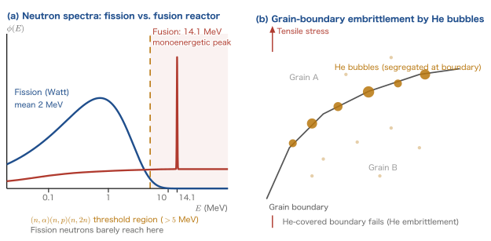
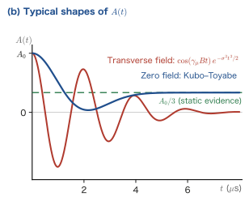
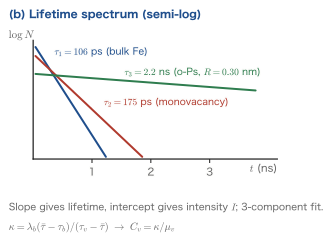

Chapter 16Where Particle Physics Meets Materials Science
In the first 15 chapters we started from the Lorentz transformation, wrote down the Feynman rules, solved the Dirac equation, assembled QED, QCD, and electroweak theory, and finally peered at the cracks in the Standard Model. That framework describes the most fundamental level of the hierarchy of the universe. In this chapter we bring it back to the room-temperature laboratory.
Let us restate the intent of the plan that we described at the beginning of this book. To a materials scientist, particle physics seems irrelevant. Yet the question of how many years the first wall of a fusion reactor will last is the kinematics of elastic scattering between a $14.1\ \mathrm{MeV}$ neutron and an iron nucleus, that is, the content of Chapter 4 itself. That a $100\%$ polarized muon beam is available for muon spin rotation (μSR) is thanks to the maximal parity violation discussed in Chapter 6. When we measure vacancies by positron annihilation, we are firing at the sample the antiparticle predicted by the Dirac equation of Chapter 9. The formula by which we measure phonon dispersion with inelastic neutron scattering is nothing more than the golden rule of Chapter 8 written out. And the breaking of the $\mathrm{U}(1)$ symmetry in a superconductor has the same mathematical structure as the Higgs mechanism of Chapter 13 (how far the correspondence extends is sorted out in Section 16.10.1), and historically Anderson’s argument on superconductivity was a forerunner of the Higgs mechanism.
In other words, particle physics and materials science do not stand in a hierarchy of “fundamental” and “applied.” They merely speak the same language at different energy scales. This chapter is the dictionary for translating between them.
The policy of this chapter, from beginning to end, is to work with our hands and produce numbers. We compute for ourselves the partition of the $Q$ value of fusion from four-momentum conservation, punch the exponent of the Gamow factor into a calculator, find the energy of the primary knock-on atom (PKA) that a $14\ \mathrm{MeV}$ neutron drives into iron, count defects with the NRT model, calculate $\mathrm{dpa}$, work out the Bohr radius of the muon, and back-calculate the vacancy concentration from the positron lifetime. All of this can be done with paper and a calculator. The very fact that it can be done shows that these fields are written in the language of particle physics.
If we are to name the single most emblematic equation, it is this one.
The two numbers on the right-hand side are the result of the four-momentum conservation law dividing the $Q$ value of $17.59\ \mathrm{MeV}$ in the ratio $1:4$ (we compute this exactly in Section 16.1). The former becomes the fuel that makes the reactor self-ignite; the latter damages the first wall at about $10\ \mathrm{dpa}$ per year (per $1\ \mathrm{MW/m^2}$ of wall loading) and at the same time regenerates tritium from lithium. The “materials problem” of nuclear fusion begins with the kinematics of this single line.
- Obtain the $Q$ value $17.589\ \mathrm{MeV}$ of the DT reaction from nuclear masses and distribute it between $\alpha$ and $n$ using two-body decay kinematics (down to the difference between the exact relativistic solution $3.561/14.028$ and the nonrelativistic approximation $3.52/14.07$)
- The Coulomb barrier of $444\ \mathrm{keV}$ and the Gamow factor $\exp(-\sqrt{E_G/E})$, the Gamow energy of DT $E_G=1.18\ \mathrm{MeV}$, and the transmission probability of $1.4\%$ at $64\ \mathrm{keV}$
- The Maxwell-averaged reactivity $\braket{\sigma v}\simeq 1.1\times10^{-24}\,T^2\ \mathrm{m^3/s}$ and the ignition condition $nT\tau_E > 3\times10^{21}\ \mathrm{keV\,s\,m^{-3}}$ derived from it
- The maximum PKA energy of $0.97\ \mathrm{MeV}$ that a $14\ \mathrm{MeV}$ neutron imparts to iron (the elastic-scattering kinematics of Chapter 4)
- The Lindhard factor ($\xi=0.35$ for a $1\ \mathrm{MeV}$ PKA in Fe), the NRT model $N_d=0.8\,T_{\rm dam}/(2E_d)$, the definition of $\mathrm{dpa}$, and why $1\ \mathrm{MW\,yr/m^2}$ at the first wall corresponds to about $10\ \mathrm{dpa}$
- He production by nuclear transmutation ($\mathrm{He}/\mathrm{dpa}\approx10\ \mathrm{appm}$) and He embrittlement, and the origin of the factor of $100$ difference from fission reactors
- Tritium breeding by $^{6}$Li$(n,\alpha)$T, the TBR, and the selection logic for breeder materials, neutron multipliers, low-activation structural materials, and the W divertor
- μSR: that $\pi^+\to\mu^+\nu_\mu$ yields $100\%$ polarized muons by V$-$A theory, $\gamma_\mu/2\pi=135.5\ \mathrm{MHz/T}$, the asymmetry $A(t)$, the $1/3$ tail of the Kubo–Toyabe function, and the measurement of the magnetic-field penetration depth through $\sigma\propto\lambda^{-2}$
- Positron annihilation: back-calculating a vacancy concentration of $8\ \mathrm{appm}$ from the two-state trapping model, obtaining a free-volume radius of $0.3\ \mathrm{nm}$ from the Tao–Eldrup formula, the S/W parameters, and Fermi-surface measurement by 2D-ACAR
- The physics of spallation neutron sources, $E[\mathrm{meV}]=81.804/\lambda^2[\text{Å}^2]$, the fact that the scattering length is unrelated to $Z$, and the fact that the inelastic-scattering cross section is precisely the golden rule of Chapter 8
- Bethe’s stopping-power formula and SRIM, the $10^4$-fold acceleration of damage simulation by ion irradiation and its limits, and the $10\ \mathrm{fC/\mu m}$ rule for the critical charge of an SEU
- The single principle running through detector materials: the resolution $\Delta E\propto\sqrt{\varepsilon E}$, and the staircase in which $\varepsilon$ falls as $26\ \mathrm{eV}\to3\ \mathrm{eV}\to1\ \mathrm{meV}$
- The muon Bohr radius $a_{d\mu}=270\ \mathrm{fm}$, the $dt\mu$ molecule, the fact that the sticking loss $\omega_s=0.45\%$ limits the number of cycles to $120$, and muography
16.1 Nuclear Fusion as a Materials Problem
The reason fusion reactors do not yet run has consistently been materials. That the tokamak configuration works in principle was largely demonstrated by the 1980s (challenges in plasma physics such as turbulent transport, disruptions, ELMs, and the density limit remain even now), and $Q>1$ (output larger than input) was achieved in 2022 by inertial fusion. Most of the remaining challenges are materials challenges. That is, humanity does not yet have a material that can keep its shape for years while being bombarded by $10^{20}$ neutrons of $14\ \mathrm{MeV}$ per second, breed its own tritium, and extract heat at temperatures above $1000\ ^\circ\mathrm{C}$.
All of these materials requirements follow from the kinematics of a single reaction equation. We begin by treating it rigorously.
16.1.1 The $Q$ value of the DT reaction
Consider the fusion reaction of deuterium $\mathrm{D}={}^2\mathrm{H}$ and tritium $\mathrm{T}={}^3\mathrm{H}$,
$$ \begin{equation} \mathrm{D} + \mathrm{T} \;\longrightarrow\; {}^{4}\mathrm{He} + n \label{eq:16-dt} \end{equation} $$The masses of the four nuclei involved (nuclear masses, not atomic masses; electrons are not included) are
| Nucleus | Symbol | Mass $[\mathrm{MeV}]$ | Mass number $A$ | Charge $Z$ |
|---|---|---|---|---|
| Deuteron | $d$ | 1875.6127 | 2 | 1 |
| Triton | $t$ | 2808.9209 | 3 | 1 |
| $\alpha$ particle | ${}^4\mathrm{He}$ | 3727.3794 | 4 | 2 |
| Neutron | $n$ | 939.5654 | 1 | 0 |
As defined in Chapter 4, the $Q$ value is the difference between the rest masses of the initial state and the final state:
Derivation: The $Q$ value and how it is shared between the $\alpha$ and the $n$
Step 1: Find the $Q$ value. Denote the sum of the rest masses of the initial state by $M_i$ and that of the final state by $M_f$.
$$ M_i = m_d + m_t = 1875.6127 + 2808.9209 = 4684.5336\ \mathrm{MeV} $$ $$ M_f = m_\alpha + m_n = 3727.3794 + 939.5654 = 4666.9448\ \mathrm{MeV} $$ $$ \begin{equation} Q \equiv M_i - M_f = 17.5888\ \mathrm{MeV} \label{eq:16-Q} \end{equation} $$Per nucleon this is $17.589/5 = 3.52\ \mathrm{MeV}$, which is $10^6$ times the energy of a chemical reaction (about $4\ \mathrm{eV}$ for $\mathrm{C}+\mathrm{O}_2$). This ratio explains the whole reason for pursuing nuclear fusion.
Step 2: Work in the center-of-mass (CM) frame. In a real plasma, D and T collide with thermal kinetic energies of $10\text{–}20\ \mathrm{keV}$, but this is only about $0.1\%$ of $Q=17.6\ \mathrm{MeV}$, so we first compute as if “D and T start at rest.” The invariant mass of the initial state is then
$$ W = \sqrt{s} = M_i = 4684.5336\ \mathrm{MeV} $$This is mathematically exactly the same as the problem treated in Chapter 4 of a “particle of mass $W$ decaying into two bodies.”
Step 3: Apply the kinematics of two-body decay. In the CM frame $\bm{p}_\alpha = -\bm{p}_n$, and from the formula of Chapter 4 (the energies of the daughter particles in a two-body decay) we have
$$ \begin{equation} E_n = \frac{W^2 + m_n^2 - m_\alpha^2}{2W}, \qquad E_\alpha = \frac{W^2 + m_\alpha^2 - m_n^2}{2W} \label{eq:16-2body} \end{equation} $$Now we insert numbers. With $W^2 = 4684.5336^2 = 2.194486\times10^{7}\ \mathrm{MeV^2}$, $m_n^2 = 8.82783\times10^{5}$, and $m_\alpha^2 = 1.389335\times10^{7}$,
$$ E_n = \frac{2.194486\times10^{7} + 0.088278\times10^{7} - 1.389335\times10^{7}}{2\times4684.5336} = \frac{8.93429\times10^{6}}{9369.067} = 953.594\ \mathrm{MeV} $$The kinetic energy is obtained by subtracting the rest mass:
$$ T_n = E_n - m_n = 953.594 - 939.565 = 14.029\ \mathrm{MeV} $$Step 4: Reduce to a clean closed form. In fact Eq. \eqref{eq:16-2body} can be written surprisingly simply using $Q$. Substituting $W = m_\alpha + m_n + Q$ and expanding, the numerator becomes
$$ W^2 + m_n^2 - m_\alpha^2 = (m_\alpha+m_n+Q)^2 - m_\alpha^2 + m_n^2 = 2m_n^2 + 2m_\alpha m_n + Q^2 + 2m_\alpha Q + 2 m_n Q $$Subtracting $2m_n W = 2m_n m_\alpha + 2m_n^2 + 2m_n Q$ from this, all terms containing $m_n$ cancel, and we obtain
a beautiful form. Let us verify:
$$ T_n = \frac{17.5888\times(17.5888 + 7454.759)}{9369.067} = \frac{17.5888\times7472.348}{9369.067} = 14.028\ \mathrm{MeV} $$ $$ T_\alpha = \frac{17.5888\times(17.5888 + 1879.131)}{9369.067} = \frac{17.5888\times1896.720}{9369.067} = 3.5606\ \mathrm{MeV} $$Their sum is $14.028+3.561=17.589\ \mathrm{MeV} = Q$ ✓. Energy conservation is satisfied. ∎
Caution: Where do the textbook values $3.52 / 14.07$ come from?
In fusion textbooks this partition is often written as $\alpha:3.52\ \mathrm{MeV}$ and $n:14.06\text{–}14.07\ \mathrm{MeV}$. This differs slightly from the exact $3.561/14.028$ obtained above. Let us trace the origin of the difference. There are three levels of approximation.
- Nonrelativistic approximation using only mass numbers. If $\bm{p}_\alpha=-\bm{p}_n$ and $T=p^2/2m$, then $T_\alpha/T_n = m_n/m_\alpha$. Substituting the mass-number ratio $1:4$ for the mass ratio gives $$T_n = \tfrac45 Q = 14.071\ \mathrm{MeV},\qquad T_\alpha = \tfrac15 Q = 3.518\ \mathrm{MeV}$$ This is the origin of $3.52/14.07$. Its advantage is that it can be done in your head, and in engineering practice it is good enough.
- Nonrelativistic approximation using the actual masses. $T_n = Q\,m_\alpha/(m_\alpha+m_n) = 17.5888\times 0.798676 = 14.047\ \mathrm{MeV}$, $T_\alpha = 3.542\ \mathrm{MeV}$.
- Exact relativistic solution (Eq. \eqref{eq:16-partition}): $14.028/3.561\ \mathrm{MeV}$.
The differences are $0.3\%$ on the neutron side and about $1.2\%$ on the $\alpha$ side (the absolute shift of $0.043\ \mathrm{MeV}$ is common to both, but because we divide by the smaller $T_\alpha$, the relative error on the $\alpha$ side is four times larger). Then why do the calculation exactly? Because the four-momentum conservation of Chapter 4 is a reliable tool that tells us, in situations like this, “in which direction and by how much the approximation errs.” The $\alpha$ gains about $0.5\%$ from relativistic effects ($3.542\to3.561$) because the relativistic correction is taken up by the faster recoiling neutron. Note also that in a real plasma, D and T collide with a relative motion of $10\text{–}20\ \mathrm{keV}$, so the neutron spectrum is Doppler-broadened around $14.03\ \mathrm{MeV}$ with a width $\Delta E \sim 177\sqrt{T[\mathrm{keV}]}\ \mathrm{keV}$ (a FWHM of about $560\ \mathrm{keV}$ at $T=10\ \mathrm{keV}$). Measuring this width is itself the diagnostic of the plasma ion temperature.
Physical Meaning: The $1:4$ partition determines everything
This partition is the fork in the road of fusion reactor design.
- The $\alpha$ ($3.5\ \mathrm{MeV}$, charge $+2$) is a charged particle, so it is trapped by the magnetic field, stays in the plasma, and heats the fuel. This is $\alpha$ heating, which is the agent of self-ignition (continuing to burn without external heating). The fact that it carries only $20\%$ of the total energy makes the ignition condition severe (Section 16.1.4).
- The $n$ ($14.1\ \mathrm{MeV}$, charge $0$) passes straight through the magnetic field and flies into the wall. $80\%$ of the total energy goes here. That is, almost all of the energy a fusion reactor generates is slammed into the wall as neutrons. At the same time, these neutrons damage the wall (Section 16.2) and produce tritium from lithium (Section 16.3).
If the partition were reversed and $80\%$ went to the $\alpha$, ignition would be much easier and materials would be much less of a problem. The ratio $1:4$ comes from the fact about nuclear masses that $m_\alpha/m_n\simeq4$, and humans have no way to change it. Here lies the fundamental reason why fusion is a materials problem.
16.1.2 The Coulomb barrier and the Gamow factor
Even if the $Q$ value is positive, the reaction does not occur automatically. D and T both have positive charge $+e$ and repel each other as they approach. To come within the range of the nuclear force, they must either climb over the Coulomb barrier or tunnel through it.
Derivation: The height of the DT Coulomb barrier
Step 1: The distance at which the nuclei touch. Using the empirical formula for the nuclear radius, $R = r_0 A^{1/3}$ ($r_0=1.2\ \mathrm{fm}$), the two nuclei touch at
$$ R_{\rm c} = r_0\left(A_d^{1/3} + A_t^{1/3}\right) = 1.2\times\left(2^{1/3} + 3^{1/3}\right) = 1.2\times(1.2599+1.4422) = 3.243\ \mathrm{fm} $$Step 2: The Coulomb potential there. In natural units, $e^2/4\pi\epsilon_0 = \alpha\,\hbar c = (1/137.036)\times197.327\ \mathrm{MeV\,fm} = 1.4400\ \mathrm{MeV\,fm}$. Therefore
Step 3: What this means. Converting $444\ \mathrm{keV}$ to a temperature, $k_B T = 444\ \mathrm{keV}$, that is, $T = 5.2\times10^{9}\ \mathrm{K}$. The temperature at the center of the Sun is $1.5\times10^7\ \mathrm{K}$ ($1.3\ \mathrm{keV}$), and the operating temperature of a tokamak is $1\text{–}2\times10^8\ \mathrm{K}$ ($10\text{–}20\ \mathrm{keV}$). The solar center is only $0.3\%$ of the barrier, and even a tokamak is only $2\text{–}5\%$. Classically, nuclear fusion could never occur. ∎
The reason it occurs nonetheless is quantum tunneling. This is the mechanism that Gamow introduced in 1928 to explain $\alpha$ decay, and nuclear fusion is its inverse process.
Derivation: The Gamow factor
Step 1: The WKB approximation. The probability that a particle of energy $E$ (in the center-of-mass frame) tunnels through the barrier of the potential $V(r)$ (from the nuclear surface $R_{\rm c}$ to the classical turning point $r_{\rm t}=Z_1Z_2\alpha\hbar c/E$) is, in the WKB approximation,
$$ P = \exp\left[-\frac{2}{\hbar}\int_{R_{\rm c}}^{r_{\rm t}}\sqrt{2m_r\left(V(r)-E\right)}\;\dd r\right] $$Here $m_r = m_d m_t/(m_d+m_t)$ is the reduced mass. Its numerical value is
$$ m_r = \frac{1875.6127\times2808.9209}{4684.5336} = \frac{5.268448\times10^{6}}{4684.534} = 1124.65\ \mathrm{MeV} $$Step 2: Carry out the integral. Substituting $V(r)=Z_1Z_2\alpha\hbar c/r$ and assuming $R_{\rm c}\ll r_{\rm t}$ so that the lower limit may be approximated by zero, the integral can be done analytically. Setting $x=r/r_{\rm t}$,
$$ \int_0^{r_{\rm t}}\sqrt{\frac{1}{x}-1}\;r_{\rm t}\dd x = r_{\rm t}\cdot\frac{\pi}{2} $$which is a standard result ($\int_0^1\sqrt{1/x-1}\,\dd x=\pi/2$). Tidying up, the exponent is
We call $\eta$ the Sommerfeld parameter. In the ground state of the hydrogen atom the electron speed is $v/c=\alpha$ (this is the small parameter in which we expanded the fine structure in $v/c$ in Section 7.2.2 of Chapter 7). $\eta=Z_1Z_2\alpha/(v/c)$ is a dimensionless quantity expressing the strength of the Coulomb interaction relative to the speed of the relative motion, and it appears in both bound-state and scattering problems alike.
Step 3: The Gamow energy. Collecting the constants so that $2\pi\eta = \sqrt{E_G/E}$, we obtain
$$ \begin{equation} E_G = 2 m_r c^2\left(\pi\alpha Z_1 Z_2\right)^2 \label{eq:16-EG} \end{equation} $$For DT, $\pi\alpha = \pi/137.036 = 0.0229253$, so
$$ E_G = 2\times1124.65\ \mathrm{MeV}\times(0.0229253)^2 = 2249.3\times5.2557\times10^{-4} = 1.1822\ \mathrm{MeV} $$Step 4: The transmission probability at $64\ \mathrm{keV}$. Inserting the center-of-mass energy $E=64\ \mathrm{keV}=0.064\ \mathrm{MeV}$ at which the DT cross section is experimentally maximal,
$$ 2\pi\eta = \sqrt{\frac{1.1822}{0.064}} = \sqrt{18.472} = 4.298 \quad\Longrightarrow\quad P = \ee^{-4.298} = 1.36\times10^{-2} $$that is, about $1.4\%$. A particle of $64\ \mathrm{keV}$ passes through the $444\ \mathrm{keV}$ wall with a probability of $1.4\%$. This is the power of the tunnel effect. Note that $1.4\%$ is the value of the conventional “Gamow factor” with the lower limit taken as $R_{\rm c}\to0$; for DT, $R_{\rm c}/r_{\rm t}=3.24/22.5=0.144$ is not negligible. Including the finite nuclear radius and using $\int_{R_{\rm c}}^{r_{\rm t}}\sqrt{r_{\rm t}/r-1}\,\dd r = r_{\rm t}\left[\arccos\sqrt{x}-\sqrt{x(1-x)}\right]$ ($x=R_{\rm c}/r_{\rm t}$), we get $0.53$ times $\pi/2$, so the exponent becomes $4.30\times0.53=2.27$ and the transmission probability rises to about $10\%$. This difference is absorbed into the $S(E)$ factor introduced later. ∎
Caution: $1.4\%$ is not the “reaction probability”
$P=1.4\%$ is the probability of tunneling through the barrier, not the probability of actually fusing after passing through. DT has an especially large cross section because the $J^\pi=3/2^+$ resonance of $^5$He sits right near $64\ \mathrm{keV}$ in the center-of-mass frame (the Breit–Wigner form of the resonance that we saw in Section 8.7.4 of Chapter 8 and Section B.4 of Appendix B). DD has no such resonance. D$^3$He has an analogous $3/2^+$ resonance of the mirror nucleus $^5$Li (the peak “$0.9\ \mathrm{b}$ @ $250\ \mathrm{keV}$” in Table 16.2 is exactly this), but with $Z_1Z_2=2$ the barrier is high and the resonance position is far from the plasma temperature. DT reacts so much more easily than the others because it has both a low barrier and a low-energy resonance. It is because of this combination that humanity chose DT for the first fusion reactors.
![(a) Interaction potential of the DT system. For r larger than 3.24 fm it is the Coulomb repulsion V=1.44/r (MeV fm), and the top of the barrier is 444 keV. Inside it lies the attractive well of the nuclear force (−50 MeV, not to scale). A particle with E=64 keV tunnels from the turning point r_t=22.5 fm to the nuclear surface, with probability e^(−4.30)=1.4%. (b) The tail of the Maxwell distribution e^(−E/kT) (blue, decreasing), the tunneling probability e^(−√(E_G/E)) (red, increasing), and their product, the Gamow peak (green).](figs/ch16_fig16-1.svg)
16.1.3 Cross sections and the Maxwell-averaged reactivity
From the Gamow factor and the structure of the “transition probability per incident flux” learned in Chapter 8, the standard way to write the cross section is the following form:
$$ \begin{equation} \sigma(E) = \frac{S(E)}{E}\,\ee^{-\sqrt{E_G/E}} \label{eq:16-astroS} \end{equation} $$The $1/E$ is a geometrical factor coming from the square of the de Broglie wavelength, $\pi\bar\lambda^2 \propto 1/E$; the exponential is the tunneling factor; and the remaining $S(E)$ is called the astrophysical nuclear $S$ factor. Only the information on nuclear structure (resonances) remains in $S(E)$, and its energy dependence becomes gentle. This is the standard way of organizing data when extrapolating in nuclear physics.
| Reaction | $Q\ [\mathrm{MeV}]$ | Partition of the products | $\sigma_{\max}$ | $\braket{\sigma v}$ @ 10 keV $[\mathrm{m^3/s}]$ | @ 20 keV | Neutrons |
|---|---|---|---|---|---|---|
| $\mathrm{D}+\mathrm{T}\to{}^4\mathrm{He}+n$ | 17.59 | $\alpha$ 3.56 / $n$ 14.03 | 5.0 b @ 64 keV | $1.1\times10^{-22}$ | $4.2\times10^{-22}$ | carry away 80% |
| $\mathrm{D}+\mathrm{D}\to{}^3\mathrm{He}+n$ | 3.269 | $^3$He 0.82 / $n$ 2.45 | 0.11 b @ 1.8 MeV | Sum of both branches $1.2\times10^{-24}$ / $5.2\times10^{-24}$ | 2.45 MeV | |
| $\mathrm{D}+\mathrm{D}\to\mathrm{T}+p$ | 4.033 | T 1.01 / $p$ 3.02 | 0.10 b @ 2 MeV | Branching ratio almost 50:50 | none | |
| $\mathrm{D}+{}^3\mathrm{He}\to{}^4\mathrm{He}+p$ | 18.35 | $\alpha$ 3.71 / $p$ 14.64 | 0.9 b @ 250 keV | $2.1\times10^{-25}$ | $3.5\times10^{-24}$ | none at first order |
| $p+{}^{11}\mathrm{B}\to3\,{}^4\mathrm{He}$ | 8.68 | shared among three bodies | 1.2 b @ 600 keV | $T\sim150\ \mathrm{keV}$ is required | none | |
| $^{6}\mathrm{Li}+n\to{}^4\mathrm{He}+\mathrm{T}$ | 4.784 | $\alpha$ 2.05 / T 2.73 | 940 b @ thermal neutrons | No barrier (neutron) | — (breeding reaction) | |
Physical Meaning: Why are “advanced fuels” difficult?
D$^3$He and $p^{11}$B emit almost no neutrons, so neither irradiation damage nor activation by $14\ \mathrm{MeV}$ neutrons occurs. For a materials scientist they are dream fuels. However, as Table 16.2 shows, the reactivity at $10\ \mathrm{keV}$ is only $1/500$ of that of DT. When $Z_1Z_2$ is large, $E_G\propto (Z_1Z_2)^2$ in Eq. \eqref{eq:16-EG} takes effect and the Gamow factor becomes catastrophically small. Since $Z_1Z_2=5$ for $p^{11}$B, even though its reduced mass of $859.6\ \mathrm{MeV}$ is smaller than that of DT, $E_G = 2\times859.6\times(5\pi\alpha)^2 = 22.6\ \mathrm{MeV}$, which is $19$ times that of DT.
Worse still, raising the temperature increases the losses from bremsstrahlung ($P_{\rm br}\propto Z_{\rm eff}\,n_e^2\sqrt{T_e}$). Here $Z_{\rm eff}\equiv\sum_i n_iZ_i^2/n_e$, and the weight $Z_i^2$ is already included in the definition of $Z_{\rm eff}$, so $P_{\rm br}$ is proportional to the first power of $Z_{\rm eff}$. The moment boron with $Z=5$ is mixed into the fuel, $Z_{\rm eff}$ jumps, and it has long been pointed out that in $p^{11}$B the bremsstrahlung loss may exceed the fusion output (Rider 1995). This is why neutron-free fusion does not become “the solution that avoids the materials problem.” We have no choice but to live with $14\ \mathrm{MeV}$ neutrons.
16.1.4 The Lawson criterion and the ignition condition
Derivation: The ignition condition $nT\tau_E > 3\times10^{21}\ \mathrm{keV\,s\,m^{-3}}$
Step 1: The $\alpha$ heating power. In a DT plasma of density $n$ ($n_D=n_T=n/2$), the reaction rate per unit volume is $n_Dn_T\braket{\sigma v} = (n^2/4)\braket{\sigma v}$. Since each reaction brings in an $\alpha$ with $E_\alpha=3.52\ \mathrm{MeV}$,
$$ P_\alpha = \frac{n^2}{4}\braket{\sigma v}\,E_\alpha $$Step 2: The loss power. The thermal energy density of the plasma is $W = 3nT$, since the electrons and the ions each carry $\frac32 nT$ ($T$ in energy units, $T_e=T_i=T$). If this escapes with the energy confinement time $\tau_E$, then
$$ P_{\rm loss} = \frac{W}{\tau_E} = \frac{3nT}{\tau_E} $$Step 3: Balance them (the ignition condition). From the condition $P_\alpha \ge P_{\rm loss}$ for maintaining the temperature without external heating,
$$ \frac{n^2}{4}\braket{\sigma v}E_\alpha \;\ge\; \frac{3nT}{\tau_E} \quad\Longrightarrow\quad n\tau_E \;\ge\; \frac{12\,T}{\braket{\sigma v}\,E_\alpha} $$Step 4: Make it a triple product. Multiplying both sides by $T$,
Here there is one extremely convenient fact. In the range $T=10\text{–}20\ \mathrm{keV}$, the DT reactivity
$$ \braket{\sigma v} \simeq 1.1\times10^{-24}\,T^2\ \mathrm{m^3/s}\qquad(T\ \text{in}\ \mathrm{keV}\ \text{units}) $$is well approximated by $T^2$ (check against Table 16.2: for $T=10$, $1.1\times10^{-22}$ ✓; for $T=20$, $4.4\times10^{-22}$ ✓). Outside this range the approximation quickly worsens, overestimating by about $+15\%$ at $8\ \mathrm{keV}$ and about $+30\%$ at $25\ \mathrm{keV}$. Substituting it, $T^2$ cancels and the right-hand side becomes a constant independent of temperature:
$$ n T\tau_E \ge \frac{12}{1.1\times10^{-24}\times 3520\ \mathrm{keV}} = \frac{12}{3.872\times10^{-21}} = 3.10\times10^{21}\ \mathrm{keV\,s\,m^{-3}} $$This is the condition for the famous fusion triple product. ∎
Step 5: Convert to $n\tau_E$. For $T=10\ \mathrm{keV}$, $n\tau_E \ge 3.1\times10^{20}\ \mathrm{m^{-3}s}$. Magnetic confinement (tokamaks) aims at this with $n\sim10^{20}\ \mathrm{m^{-3}}$ and $\tau_E\sim3\ \mathrm{s}$, while inertial fusion attacks from the opposite extreme, with $n\sim10^{31}\ \mathrm{m^{-3}}$ and $\tau\sim10^{-11}\ \mathrm{s}$. The claim of this formula is that all that matters is that the product be the same.
Example: How far have we come now?
- JET (1997, DT): $Q=0.67$, fusion power $16\ \mathrm{MW}$. Triple product $\sim9\times10^{20}$.
- JT-60U (DD-equivalent): a triple product of $1.5\times10^{21}$ was recorded (1996), corresponding to an equivalent $Q_{\rm eq}=1.25$ (1998). In both cases the values were converted from DD discharges to DT-equivalent values.
- JET (2021–2022, DT): $59\ \mathrm{MJ}$ over 5 seconds, and $69\ \mathrm{MJ}$ in 2023. A demonstration of “burning for a long time.”
- NIF (December 2022): a fusion output of $3.15\ \mathrm{MJ}$ for a laser input of $2.05\ \mathrm{MJ}$, $Q=1.54$. The first scientific energy gain in human history. In 2023–2025 it has reached $Q>4$.
- ITER (under construction): the targets are $Q=10$, $500\ \mathrm{MW}$, and $400\ \mathrm{s}$.
What should be noted here is that these $Q$ values are the ratio of the heat that entered the plasma to the fusion energy that came out, and are not the efficiency of a power plant (the wall-plug efficiency). The NIF laser uses electrical energy of $\sim400\ \mathrm{MJ}$ to produce $2.05\ \mathrm{MJ}$ of laser light. There is still a gap of two orders of magnitude to an engineering $Q$.
16.2 14 MeV Neutrons and Irradiation Damage
Now we come to the main subject. A neutron of $14.1\ \mathrm{MeV}$ flies into the first wall. What happens?
A neutron has no electric charge, so it hardly interacts with the electron cloud. It collides directly with an atomic nucleus. That is, what occurs is elastic scattering off a nucleus (and a nuclear reaction, if the threshold is exceeded). The atom that is knocked away by the elastic scattering becomes the primary knock-on atom (PKA), which rampages through the crystal and produces damage.
16.2.1 The maximum PKA energy — it is just the kinematics of Chapter 4
Derivation: Recoil energy when a neutron of mass $m$ scatters elastically off a stationary nucleus of mass $M$
Step 1: Check whether a nonrelativistic treatment is sufficient. For a neutron of $14.1\ \mathrm{MeV}$, $E/m_n = 14.1/939.6 = 1.5\%$. Since $\gamma = 1.015$, a nonrelativistic treatment suffices for $1\%$ accuracy. Here we carry the calculation through nonrelativistically and estimate the size of the relativistic correction at the end.
Step 2: Move to the CM frame. Let the momentum of the incident neutron be $p$ and its energy in the laboratory frame be $E_n=p^2/2m$. The velocity of the CM frame is
$$ v_{\rm CM} = \frac{m\,v}{m+M} $$In the CM frame the target approaches with speed $v_{\rm CM}$, and in elastic scattering the speed does not change while the direction turns by the angle $\theta_{\rm CM}$.
Step 3: Recoil energy of the target in the laboratory frame. Transforming the velocity vector of the target in the CM frame back to the laboratory frame, the recoil kinetic energy is
$$ \begin{equation} T = \frac{4mM}{(m+M)^2}\,E_n\,\sin^2\!\frac{\theta_{\rm CM}}{2} \label{eq:16-recoil} \end{equation} $$(this has the same structure as the equation derived in Chapter 4). It is maximal at $\theta_{\rm CM}=\pi$ (a head-on collision in which the neutron bounces straight back), where
We call $\Lambda$ the energy transfer coefficient.
Step 4: Substitute iron. Approximating by mass numbers, $m=1$ (neutron) and $M=56$ (iron), we obtain
$$ \Lambda_{\rm Fe} = \frac{4\times1\times56}{(1+56)^2} = \frac{224}{3249} = 0.06894 $$ $$ T_{\max} = 0.06894 \times 14.1\ \mathrm{MeV} = 0.972\ \mathrm{MeV} $$That is, a neutron of $14\ \mathrm{MeV}$ knocks out an iron atom with up to about $1\ \mathrm{MeV}$. ∎
Step 5: The mean value. For isotropic scattering in the CM frame, $\braket{\sin^2(\theta_{\rm CM}/2)}=1/2$, so $\braket{T}=T_{\max}/2 = 0.49\ \mathrm{MeV}$. At $14\ \mathrm{MeV}$, however, the scattering is biased forward (a diffraction pattern with $kR\sim3$), so the actual mean recoil energy is smaller than this, about $0.2\text{–}0.4\ \mathrm{MeV}$.
| Element | $A$ | $\Lambda=4A/(1+A)^2$ | $T_{\max}\ [\mathrm{MeV}]$ | $E_d\ [\mathrm{eV}]$ | $T_{\max}/2E_d$ |
|---|---|---|---|---|---|
| Be | 9 | 0.360 | 5.08 | 31 | $8.2\times10^4$ |
| C (graphite) | 12 | 0.284 | 4.00 | 31 | $6.5\times10^4$ |
| Si | 28 | 0.133 | 1.88 | 21 | $4.5\times10^4$ |
| Cr | 52 | 0.0740 | 1.04 | 40 | $1.3\times10^4$ |
| Fe | 56 | 0.0689 | 0.972 | 40 | $1.2\times10^4$ |
| Cu | 64 | 0.0606 | 0.854 | 30 | $1.4\times10^4$ |
| Mo | 96 | 0.0408 | 0.575 | 60 | $4.8\times10^3$ |
| W | 184 | 0.0215 | 0.303 | 90 | $1.7\times10^3$ |
Connection to Materials Science: Four-momentum conservation determines the lifetime of the first wall
The $\Lambda=4A/(1+A)^2$ in Table 16.3 is pure kinematics that follows from the four-momentum conservation $p_1^\mu+p_2^\mu = p_3^\mu+p_4^\mu$ written in Chapter 4. Neither nuclear structure, nor crystal structure, nor temperature enters. Even so, this single formula bears directly on the choice of materials.
The $\Lambda$ of tungsten is $1/3$ that of iron. Even when bathed in the same $14\ \mathrm{MeV}$ neutrons, W receives only $1/3$ of the recoil energy that Fe does. On the other hand, W has a large $E_d$ of $90\ \mathrm{eV}$ (strong bonding). Both effects act together, and the number of defects $T_{\max}/2E_d$ produced in a single collision is $1/7$ that of Fe. One of the reasons W is chosen as the plasma-facing material of fusion reactors is the fact that it is heavy, in and of itself.
Conversely, the light elements (Be, C) have large $\Lambda$, and $T_{\max}$ reaches as much as $4\text{–}5\ \mathrm{MeV}$. This is one of the reasons why graphite, although it was the mainstream divertor material until the 2000s (JET moved to W with the ITER-Like Wall in 2011, and ASDEX Upgrade became all-W in 2007), was eventually replaced by W (although the problem of tritium co-deposition was more serious).
The kinematics of particle physics is, as it stands, the materials specification sheet of reactor engineering. This is a pattern that we will see repeatedly in this book.
16.2.2 The displacement threshold energy $E_d$ and the NRT model
When a PKA of $1\ \mathrm{MeV}$ runs through a crystal, it knocks out other atoms one after another. The atoms that were knocked out knock out still more. We call this chain the displacement cascade. Counting how many defects are produced is the first step of irradiation damage science.
Displacement threshold energy $E_d$
The minimum kinetic energy required to pull an atom in a crystal permanently away from its lattice site and create a stable Frenkel pair (vacancy + interstitial) is called the displacement threshold energy $E_d$.
$E_d$ is an order of magnitude larger than the binding energy ($\sim5\ \mathrm{eV}$). This is because, if the knocked-out atom comes to rest at a nearby interstitial position, it recombines, so it must be sent sufficiently far away. $E_d$ depends strongly on crystal orientation (in Fe, $17\ \mathrm{eV}$ in the $\langle100\rangle$ direction and $34\ \mathrm{eV}$ in $\langle111\rangle$, for example), so in practice an orientation-averaged value is used. The values recommended by ASTM E521 are $\boxed{40\ \mathrm{eV}}$ for Fe and $90\ \mathrm{eV}$ for W.
Derivation: From Kinchin–Pease to NRT
Step 1: The naive counting of Kinchin–Pease (1955). Suppose that an atom of energy $T$ repeats two-body collisions in which the energy is shared equally. This continues as $T\to T/2 + T/2 \to T/4\times4\to\cdots$, and stops when the energy of each particle falls below $E_d$. The number of defects finally produced is
$$ N_d = \frac{T}{2E_d} $$(dividing by $2E_d$ follows from the simple argument that producing one defect consumes $2E_d$ on average).
Step 2: Subtract the electronic stopping power. The PKA does not only hit atomic nuclei; it also loses energy by exciting electrons. Electronic excitation does not create defects (in metals). We therefore count only the part of the total energy $T$ that was used in collisions with nuclei. This is called the damage energy $T_{\rm dam}$, and it is calculated with Lindhard’s theory:
$$ T_{\rm dam} = \frac{T}{1 + k\,g(\varepsilon)},\qquad \varepsilon = \frac{T}{E_L},\qquad g(\varepsilon) = 3.4008\,\varepsilon^{1/6} + 0.40244\,\varepsilon^{3/4} + \varepsilon $$Here $k = 0.1337\,Z^{2/3}A^{-1/2}$ is a constant expressing the strength of the electronic stopping power, and $E_L$ is the normalization constant that fixes Lindhard’s reduced energy, written as
$$ E_L = 30.724\,Z_1Z_2\left(Z_1^{2/3}+Z_2^{2/3}\right)^{1/2}\frac{A_1+A_2}{A_2}\ \mathrm{eV} $$For self-recoil, that is, when $Z_1=Z_2=Z$ and $A_1=A_2$, we have $\left(2Z^{2/3}\right)^{1/2}\times2 = 2\sqrt2\,Z^{1/3}$, so
$$ E_L = 30.724\times2\sqrt2\;Z^{7/3} = 86.9\,Z^{7/3}\ \mathrm{eV} $$The error of putting the coefficient $30.724$ as it is in front of $Z^{7/3}$ is sometimes seen even in the literature, but for self-recoil the correct value is $86.9$, which is $2\sqrt2$ times larger. If $E_L$ is mistaken by a factor of $1/2.8$, $\varepsilon$ becomes $2.8$ times larger, and $\xi$ for a $1\ \mathrm{MeV}$ PKA becomes $0.20$ instead of $0.35$. This is a non-negligible difference that throws the estimate of the number of defects off by $4$ tenths (about 40%).
Numerical values for Fe. With $Z=26$ and $A=56$, $Z^{7/3}=2.00\times10^{3}$, so $E_L = 86.9\times2.00\times10^{3} = 1.74\times10^{5}\ \mathrm{eV} = 174\ \mathrm{keV}$, and $k = 0.1337\times26^{2/3}/\sqrt{56} = 0.1337\times8.776/7.483 = 0.157$. Using these to calculate $\xi = T_{\rm dam}/T$ (the Lindhard factor), we obtain the following.
| $T$ | $\varepsilon = T/E_L$ | $g(\varepsilon)$ | $k\,g$ | $\xi$ |
|---|---|---|---|---|
| $10\ \mathrm{keV}$ | 0.0575 | 2.22 | 0.348 | 0.74 |
| $100\ \mathrm{keV}$ | 0.575 | 3.94 | 0.618 | 0.62 |
| $300\ \mathrm{keV}$ | 1.724 | 6.05 | 0.949 | 0.51 |
| $490\ \mathrm{keV}$ | 2.816 | 7.73 | 1.212 | 0.45 |
| $1\ \mathrm{MeV}$ | 5.746 | 11.79 | 1.849 | 0.35 |
That is, $\xi\approx0.35$ for a $1\ \mathrm{MeV}$ PKA in Fe, and $\xi\approx0.62$ for a $100\ \mathrm{keV}$ PKA. The faster the PKA, the larger the fraction “eaten” by electronic excitation, and the lower the fraction of energy used to create defects. For a PKA of the $\mathrm{MeV}$ class, such as those produced by $14\ \mathrm{MeV}$ neutrons, $2/3$ of the energy vanishes into the electron system.
Step 3: The $0.8$ taught by binary-collision-approximation simulations. Norgett–Robinson–Torrens (1975) concluded, from calculations with the binary collision approximation (BCA) code MARLOWE, that the Kinchin–Pease $N_d$ should be multiplied by a factor of $0.8$ (in 1975, molecular dynamics calculations of whole cascades were not yet at a practical stage). The standard formula (the NRT model) was thus established:
Step 4: Numerical values. Suppose that a PKA with $T=1.0\ \mathrm{MeV}$ is created in Fe. From Table 16.4, $\xi=0.35$, so $T_{\rm dam}=0.35\ \mathrm{MeV}=3.5\times10^5\ \mathrm{eV}$. Since $E_d=40\ \mathrm{eV}$,
$$ N_d = \frac{0.8\times3.5\times10^5}{2\times40} = \frac{2.8\times10^5}{80} = 3.5\times10^3 $$A single neutron that merely hits one iron atom produces $3500$ Frenkel pairs. This is the sense of scale of irradiation damage. The remaining $0.65\ \mathrm{MeV}$ vanishes into electronic excitation and ends up as mere heat. ∎
Caution: NRT is not the “number of defects actually produced”
The NRT $N_d$ is the number before the cascade has cooled completely, that is, at the moment the collisions have ended. In reality, during a thermal spike of about $10^{-12}\ \mathrm{s}$ (in which the temperature locally exceeds the melting point), more than $70\%$ of the defects recombine and disappear.
In the arc-dpa (athermal recombination corrected dpa) model, which is based on molecular dynamics (MD) calculations, the survival efficiency is written as
$$ \xi_{\rm arc}(T_{\rm dam}) = \frac{1-c}{(2E_d/0.8)^{b}}\,T_{\rm dam}^{\,b} + c $$and with the parameters of Nordlund et al. (2018), the high-energy limit is $c\approx0.29$ ($b=-0.57$) for Fe and $c\approx0.12$ ($b=-0.56$) for W. That is, the actual number of defects is $1\text{–}3$ tenths of the NRT value, only about $3$ tenths for Fe and just over $1$ tenth for W. The reason NRT-dpa continues to be used nonetheless is that it functions as a “common unit of irradiation dose,” not that it claims to give the physical number of defects. When reading dpa values in a paper, always check which definition is used.
16.2.3 dpa — a common currency of irradiation dose
dpa (displacements per atom)
A quantity expressing how many times, on average, each atom in the material has been knocked out of its lattice site during the irradiation period. The definition is
Here $\phi$ is the neutron flux $[\mathrm{m^{-2}s^{-1}}]$ and $\dd\sigma/\dd T$ is the differential cross section giving the PKA energy $T$. $\sigma_{\rm dpa}$ is the “displacement cross section”; because it is multiplied by $N_d\sim10^3$, it takes values far larger than ordinary nuclear reaction cross sections (in units of barns). $1\ \mathrm{dpa}$ means that “on average every atom has been knocked out once.”
Derivation: Obtaining “$1\ \mathrm{MW\,yr/m^2}$ = $10\ \mathrm{dpa}$” for the first wall of a fusion reactor
Step 1: Find the neutron flux. Let the neutron wall loading of the first wall be $1\ \mathrm{MW/m^2}$. Each neutron carries $14.1\ \mathrm{MeV}$. Converting to SI,
$$ 14.1\ \mathrm{MeV} = 14.1\times10^{6}\times1.602\times10^{-19}\ \mathrm{J} = 2.259\times10^{-12}\ \mathrm{J} $$ $$ \phi = \frac{1\times10^{6}\ \mathrm{W/m^2}}{2.259\times10^{-12}\ \mathrm{J}} = 4.43\times10^{17}\ \mathrm{n\,m^{-2}s^{-1}} = 4.43\times10^{13}\ \mathrm{n\,cm^{-2}s^{-1}} $$Step 2: Estimate the displacement cross section. The total reaction cross section (elastic + inelastic) of $14\ \mathrm{MeV}$ neutrons on Fe is about $2.5\ \mathrm{b}$. Taking the mean recoil energy to be $\braket{T}=T_{\max}/2=0.49\ \mathrm{MeV}$ and reading the Lindhard factor $\xi=0.45$ at this energy from Table 16.4, we get $T_{\rm dam}=0.22\ \mathrm{MeV}$, and
$$ N_d = \frac{0.8\times2.2\times10^{5}}{80} = 2.2\times10^{3} $$ $$ \sigma_{\rm dpa} \simeq 2.5\ \mathrm{b}\times2.2\times10^{3} = 5.5\times10^{3}\ \mathrm{b} = 5.5\times10^{-21}\ \mathrm{cm^2} $$Step 3: Multiply.
$$ \frac{\dd(\mathrm{dpa})}{\dd t} = \sigma_{\rm dpa}\,\phi = 5.5\times10^{-21}\times4.43\times10^{13} = 2.4\times10^{-7}\ \mathrm{dpa/s} $$In one year (full operation, $3.156\times10^{7}\ \mathrm{s}$) this gives $2.4\times10^{-7}\times3.156\times10^{7} = 7.7\ \mathrm{dpa}$. A wall loading of $1\ \mathrm{MW/m^2}$ gives $7.7\ \mathrm{dpa}$ per year, that is, a conversion rule of $7.7\ \mathrm{dpa/yr}$ per $\mathrm{MW/m^2}$, proportional to the wall loading (Section 1.5.2 of Chapter 1 also uses the same total cross section of $2.5\ \mathrm{b}$, $\xi=0.45$, and $N_d=2.2\times10^3$, and obtains $15\ \mathrm{dpa}$ ($15.4$) per year at a wall loading of $2\ \mathrm{MW/m^2}$, that is, the same value as this conversion rule). A detailed group-constant calculation that includes the forward bias of the scattering and the inelastic channels gives about $10\ \mathrm{dpa}$, and the conversion rule used in design is
Our rough estimate is just under $8\ \mathrm{dpa}$, only about $2$ tenths (20%) smaller. The conversion rule used as standard in fusion reactor design was almost reproduced with paper and a calculator. ∎
| Facility / location | Typical irradiation dose | He production | $\mathrm{He/dpa}$ |
|---|---|---|---|
| ITER first wall (entire lifetime) | $\sim3\ \mathrm{dpa}$ | $\sim30\ \mathrm{appm}$ | $\sim10$ |
| DEMO first wall (5 years) | $50\text{–}80\ \mathrm{dpa}$ | $500\text{–}1000\ \mathrm{appm}$ | $10\text{–}13$ |
| Commercial fusion reactor (target) | $100\text{–}200\ \mathrm{dpa}$ | $>1000\ \mathrm{appm}$ | $\sim12$ |
| PWR reactor internals (austenitic steel, 40 years) | $\sim80\ \mathrm{dpa}$ | several hundred $\mathrm{appm}$ (two-step reaction of $^{59}$Ni) | $1\text{–}10$ |
| Fast reactor cladding (ferritic steel, design value) | $150\ \mathrm{dpa}$ | $\sim20\ \mathrm{appm}$ | $\sim0.15$ |
| Ion irradiation (self-ions, accelerated test) | $100\ \mathrm{dpa}$ in $1$ day | $0$ (single beam) | $0$ |
16.2.4 Why is $14\ \mathrm{MeV}$ special? — Threshold reactions
Look at the $\mathrm{He/dpa}$ column of Table 16.5. Between a fusion reactor and a fast reactor (ferritic steel), the dpa is of the same order, yet the He production differs by a factor of $100$. Note that this “factor of $100$” is the figure when compared with fast reactors and ferritic steels; in the reactor internals of light-water reactors, which contain much Ni, the two-step reaction $^{58}\mathrm{Ni}(n,\gamma){}^{59}\mathrm{Ni}(n,\alpha)$ is effective, so $\mathrm{He/dpa}$ rises to several $\mathrm{appm/dpa}$ (even so, it is $1/2$ to $1/10$ of that in a fusion reactor). This difference is precisely the fundamental reason why “fission reactor data cannot be reused for fusion reactors,” and the reason why $14\ \mathrm{MeV}$ is special.
Derivation: He production rate from $^{56}\mathrm{Fe}(n,\alpha)$
Step 1: The reaction and its threshold.
$$ n + {}^{56}\mathrm{Fe} \;\to\; {}^{53}\mathrm{Cr} + \alpha, \qquad Q = +0.33\ \mathrm{MeV} $$Judging from the mass defects alone, this reaction is slightly exothermic (from the mass excesses $\Delta({}^{56}\mathrm{Fe})=-60.61$, $\Delta(n)=+8.07$, $\Delta({}^{53}\mathrm{Cr})=-55.28$, $\Delta(\alpha)=+2.42\ \mathrm{MeV}$ we get $Q=(-60.61+8.07)-(-55.28+2.42)=+0.33\ \mathrm{MeV}$; the AME value is $+0.326\ \mathrm{MeV}$). Even so, it does not occur at low energies. The outgoing $\alpha$ must tunnel out through the Coulomb barrier ($\sim10\ \mathrm{MeV}$) of $^{53}$Cr, which has $Z=24$, from the inside, and its tunneling probability is suppressed in the same form as the Gamow factor of Section 16.1. A cross section of practical significance appears only above $5\ \mathrm{MeV}$.
For comparison, let us look at the $(n,p)$ reaction on the same $^{56}$Fe. This one is genuinely endothermic:
$$ n + {}^{56}\mathrm{Fe} \;\to\; {}^{56}\mathrm{Mn} + p, \qquad Q = -2.91\ \mathrm{MeV} $$When $Q<0$, the threshold in the laboratory frame is higher than $\abs{Q}$ by the amount carried off as the kinetic energy of the center of mass:
$$ E_{\rm th} = \abs{Q}\,\frac{m_n + M}{M} = 2.91\times\frac{57}{56} = 2.97\ \mathrm{MeV} $$In any case, neither $(n,\alpha)$ nor $(n,p)$ opens unless the neutron is in the $\mathrm{MeV}$ range. This is the key point of the discussion that follows.
Step 2: The cross section at $14\ \mathrm{MeV}$. $\sigma_{(n,\alpha)}({}^{56}\mathrm{Fe}, 14.1\ \mathrm{MeV}) \approx 45\ \mathrm{mb}$.
Step 3: Obtain the production rate. Using $\phi=4.43\times10^{13}\ \mathrm{cm^{-2}s^{-1}}$ (for a wall loading of $1\ \mathrm{MW/m^2}$), obtained in the derivation of Section 16.2.3 (Step 1), we have
$$ R_{\rm He} = \sigma_{(n,\alpha)}\,\phi = 4.5\times10^{-26}\ \mathrm{cm^2}\times4.43\times10^{13}\ \mathrm{cm^{-2}s^{-1}} = 2.0\times10^{-12}\ \mathrm{s^{-1}}\ \text{(per Fe atom)} $$In one year,
$$ 2.0\times10^{-12}\times3.156\times10^{7} = 6.3\times10^{-5} = 63\ \mathrm{appm/yr} $$Adding the contributions from alloying elements such as Cr, Ni, and Mn gives $\sim100\ \mathrm{appm/yr}$. At the same wall loading the damage is about $10\ \mathrm{dpa}$ per year (Eq. \eqref{eq:16-dparate}), so $\mathrm{He/dpa}\approx10\ \mathrm{appm/dpa}$, in agreement with Table 16.5. ∎
Step 4: What about a fission reactor? The spectrum of fission neutrons is the Watt distribution
$$ \chi(E) \propto \ee^{-E/a}\sinh\sqrt{bE},\qquad a=0.965\ \mathrm{MeV},\ b=2.29\ \mathrm{MeV^{-1}} $$whose mean is $2.0\ \mathrm{MeV}$ and whose peak is at $0.72\ \mathrm{MeV}$; the fraction above $5\ \mathrm{MeV}$ is about $5\%$ (this can be checked by numerical integration). Moreover, in a light-water reactor the neutrons are moderated into thermal neutrons. Therefore the $(n,\alpha)$ reaction hardly occurs. In a light-water reactor, He is produced mainly by $^{10}\mathrm{B}(n,\alpha)$ (boron impurities) and by the two-step reaction $^{58}\mathrm{Ni}(n,\gamma){}^{59}\mathrm{Ni}(n,\alpha)$. In ferritic steels both are minor, but in austenitic steels containing $10\%$ or more Ni the latter cannot be neglected and reaches several hundred $\mathrm{appm}$ in $40$ years (this is what causes the problem in the irradiation embrittlement of baffle bolts). Even so, it falls short of the $(n,\alpha)$ reaction directly induced by $14\ \mathrm{MeV}$ neutrons.

Physical Meaning: Why does He do so much harm?
He is a closed-shell inert gas and forms no chemical bonds with metal atoms. Therefore it cannot dissolve in the lattice; it is captured by vacancies, forms $\mathrm{He}_n\mathrm{V}_m$ clusters, and eventually becomes bubbles. From the balance with the surface tension, the internal pressure of a bubble is given by
$$ p = \frac{2\gamma}{r} $$With $\gamma\approx2\ \mathrm{J/m^2}$ (the surface energy of iron) and $r=1\ \mathrm{nm}$, we obtain $p = 4\times10^{9}\ \mathrm{Pa} = 4\ \mathrm{GPa}$. A pressure comparable to the theoretical strength of iron is confined inside a bubble a nanometer across.
When such bubbles line up along a grain boundary, the effective bonded area of the boundary decreases, and cavities grow with the bubbles as nuclei. As a result, (i) high-temperature helium embrittlement, in which ductility is lost above $500\ ^\circ\mathrm{C}$, and (ii) swelling, in which the volume grows by several $\%$, occur. Both directly determine the design lifetime.
The idea behind the countermeasure is to “prepare a large number of places to trap He before the grain boundaries.” In oxide dispersion-strengthened (ODS) steels, nanoparticles of $\mathrm{Y}_2\mathrm{O}_3$ (diameter $2\text{–}5\ \mathrm{nm}$, number density $10^{23}\ \mathrm{m^{-3}}$) are dispersed, and their interfaces serve as trap sites for He. It is an extremely simple but effective strategy: diluting the amount of He per grain boundary.
Sidebar: Cascades and thermal spikes — an event lasting $10^{-12}$ seconds
The damage produced by a PKA divides into four stages by time scale.
- Collision stage ($10^{-13}\ \mathrm{s}$): The PKA triggers secondary and tertiary displacements in a chain. The number of defects at this point corresponds to the NRT $N_d$. For a $1\ \mathrm{MeV}$ PKA the region branches and splits into several subcascades (each $\sim20\ \mathrm{keV}$).
- Thermal spike ($10^{-12}\ \mathrm{s}$): A region $5\text{–}10\ \mathrm{nm}$ in diameter locally “exceeds the melting point.” The lattice becomes temporarily disordered.
- Quench ($10^{-11}\ \mathrm{s}$): Heat escapes into the surrounding cold matrix, and the region solidifies at the tremendous rate of $10^{14}\ \mathrm{K/s}$. During this time $70\text{–}80\%$ of the defects recombine and disappear. What survives are vacancy clusters in the central region and interstitial-atom clusters (dislocation loops) pushed out to the periphery.
- Long-time evolution ($\mathrm{s}\text{–}\mathrm{yr}$): The surviving point defects diffuse thermally and are absorbed by sinks (dislocations, grain boundaries, precipitates) or aggregate into voids, loops, and precipitates. It is in this stage that the properties of the material are actually changed.
What is interesting is that (1)–(3) can be calculated directly by MD (number of atoms $10^6\text{–}10^8$, time $100\ \mathrm{ps}$), whereas (4) is $10^{12}$ times longer and requires entirely different methods (kinetic Monte Carlo, rate theory, phase-field models). In the language of particle physics, this is scale separation: it is handled with the same idea as the renormalization group, in which an effective theory is built at each level and its parameters are passed up to the next level (Section 16.10).
16.3 Tritium Breeding and the First Wall
A fusion reactor has, in fact, a fatal difficulty from the very start: half of its fuel (tritium) hardly exists on Earth.
T is a $\beta^-$ emitter with a half-life of $12.32$ years (maximum $\beta$-ray energy $18.6\ \mathrm{keV}$, mean $5.7\ \mathrm{keV}$), and only $\sim3.5\ \mathrm{kg}$ of it exists in nature, produced by cosmic rays in the atmosphere. Artificially, the T produced as a by-product of $\mathrm{D}(n,\gamma)\mathrm{T}$ in the heavy water of heavy-water-moderated reactors (CANDU reactors) is practically the only sizable civilian supply (for military use, it is produced from irradiated targets loaded with Li), and the world’s total inventory is estimated at about $20\text{–}30\ \mathrm{kg}$.
Example: How much T does a fusion reactor eat per year?
Consider a DT reactor with a thermal power of $1\ \mathrm{GW}$. Since one reaction releases $Q=17.589\ \mathrm{MeV} = 2.818\times10^{-12}\ \mathrm{J}$, the required reaction rate is
$$ R = \frac{1\times10^{9}\ \mathrm{J/s}}{2.818\times10^{-12}\ \mathrm{J}} = 3.55\times10^{20}\ \mathrm{s^{-1}} $$In one year ($3.156\times10^{7}\ \mathrm{s}$) this amounts to $1.12\times10^{28}$ reactions. Each reaction consumes one triton, so the number of moles is $1.12\times10^{28}/6.022\times10^{23} = 1.86\times10^{4}\ \mathrm{mol}$. The atomic weight of T is $3.016$, so
A single reactor burns twice the world’s entire inventory in one year. Therefore every fusion reactor, without exception, must make for itself the T that it uses. This is not a “nice-to-have feature” but a requirement for the whole scheme to work.
16.3.1 $^{6}\mathrm{Li}(n,\alpha)\mathrm{T}$ and the breeding ratio
Fortunately, the neutrons leave the reactor carrying $80\%$ of the energy (Section 16.1). If we direct them onto lithium, T is produced.
$$ \begin{equation} n + {}^{6}\mathrm{Li} \;\to\; {}^{4}\mathrm{He}\,(2.05\ \mathrm{MeV}) + \mathrm{T}\,(2.73\ \mathrm{MeV}), \qquad Q = +4.784\ \mathrm{MeV} \label{eq:16-li6} \end{equation} $$ $$ \begin{equation} n + {}^{7}\mathrm{Li} \;\to\; {}^{4}\mathrm{He} + \mathrm{T} + n', \qquad Q = -2.467\ \mathrm{MeV} \label{eq:16-li7} \end{equation} $$Worked Example 16.1: Energy sharing in $^{6}\mathrm{Li}(n,\alpha)\mathrm{T}$
When a thermal neutron (kinetic energy $\sim0.025\ \mathrm{eV}$, negligible) is absorbed by $^6$Li, find the energies of the $\alpha$ and of T.
Solution. The initial state is effectively at rest, so the two-body decay kinematics of Section 16.1 can be used as is. Since $Q=4.784\ \mathrm{MeV}\ll m_\alpha, m_t$, the nonrelativistic treatment suffices. From momentum conservation $\bm{p}_\alpha=-\bm{p}_t$ we get $T_\alpha m_\alpha = T_t m_t$, that is,
$$ T_t = Q\,\frac{m_\alpha}{m_\alpha+m_t} = 4.784\times\frac{3727.379}{3727.379+2808.921} = 4.784\times0.57027 = 2.728\ \mathrm{MeV} $$ $$ T_\alpha = Q - T_t = 2.056\ \mathrm{MeV} $$This agrees with the general rule of two-body decay that the lighter particle (here T, not $\alpha$) receives more of the energy. ∎
Why is this important? The $4.78\ \mathrm{MeV}$ is released as heat. In addition to the neutron kinetic energy of $14.1\ \mathrm{MeV}$, the blanket of a fusion reactor can recover the $4.78\ \mathrm{MeV}$ of this breeding reaction. That is, the blanket yields about $19\ \mathrm{MeV}$ of heat per neutron ($14.1+4.78=18.9\ \mathrm{MeV}$). It is mainly this contribution that makes the thermal power of a fusion reactor $2\text{–}3$ tenths (20–30%) larger than “$17.6\ \mathrm{MeV}\times$ reaction rate” (energy multiplication factor $M\approx1.2\text{–}1.3$).
Tritium breeding ratio (TBR)
$$ \mathrm{TBR} \equiv \frac{\text{number of T produced in the blanket}}{\text{number of T consumed in the plasma}} $$For a reactor to be self-sufficient we need $\mathrm{TBR}>1$. In practice, however, we must allow for
- radioactive decay of T (half-life $12.32$ years, that is, it decreases at $\ln2/12.32=5.6\%\mathrm{/yr}$),
- retention in, and permeation loss through, piping and walls,
- openings where no blanket can be placed because of heating systems, diagnostic ports, and the divertor (the coverage is $80\text{–}90\%$),
- building up a stock to start the next reactor (doubling time),
and the design target is taken to be $\mathrm{TBR}\gtrsim1.05\text{–}1.15$.
Why do we need a “neutron multiplier”? — Let us count the numbers
Each fusion reaction emits only one neutron. That single neutron must make at least one T. Moreover, neutrons are absorbed by structural materials or escape through openings. Counted naively, $\mathrm{TBR}>1$ is impossible.
The way out is to increase the number of neutrons. With the high energy of $14\ \mathrm{MeV}$, the $(n,2n)$ reaction can be used:
$$ n + {}^{9}\mathrm{Be} \to 2n + 2\,{}^{4}\mathrm{He}\quad(E_{\rm th}=1.85\ \mathrm{MeV},\ \sigma\approx0.5\ \mathrm{b}\ \text{@}\ 14\ \mathrm{MeV}) $$ $$ n + {}^{208}\mathrm{Pb} \to 2n + {}^{207}\mathrm{Pb}\quad(E_{\rm th}=7.4\ \mathrm{MeV},\ \sigma\approx2.2\ \mathrm{b}\ \text{@}\ 14\ \mathrm{MeV}) $$Here too, the high energy of $14\ \mathrm{MeV}$ is essential. $(n,2n)$ is a threshold reaction: with fission neutrons (mean $2\ \mathrm{MeV}$) it occurs only slightly in Be and hardly at all in Pb (in the Watt spectrum, the component above $7.4\ \mathrm{MeV}$ is only about $1\%$). The $14\ \mathrm{MeV}$ neutron is the chief culprit in destroying the first wall, and at the same time the only means of making the reactor self-sufficient. The single concept of the “threshold” that we saw in Section 16.2 governs both damage and breeding.
Another reaction that matters is $^{7}\mathrm{Li}(n,n'\alpha)\mathrm{T}$. It is endothermic ($Q=-2.47\ \mathrm{MeV}$) with a threshold of $2.8\ \mathrm{MeV}$, but at $14\ \mathrm{MeV}$ it has $\sigma\approx0.3\ \mathrm{b}$, and moreover it makes T without consuming a neutron (the $n$ remains in the exit channel too). Since $92.4\%$ of natural lithium is $^7$Li, the contribution cannot be neglected.
16.3.2 Blanket materials
| Role | Candidate material | Reason for choosing | Issues |
|---|---|---|---|
| Breeder material (solid) |
Li$_2$TiO$_3$ | The Li atomic density is somewhat low among the candidates ($\sim4.3\times10^{22}\ \mathrm{cm^{-3}}$), but it is chemically stable, has a low T release temperature ($300\text{–}900\ ^\circ\mathrm{C}$), and is also low-activation. The leading candidate in Japan | Li burnup under irradiation and fracture of the microspheres |
| Li$_4$SiO$_4$ | High Li atomic density ($\sim5.3\times10^{22}\ \mathrm{cm^{-3}}$); the leading candidate in the EU | Hygroscopicity, mechanical brittleness | |
| Li$_2$O | Highest Li atomic density ($\sim8.1\times10^{22}\ \mathrm{cm^{-3}}$) | Strong hygroscopicity, corrosion due to LiOH formation | |
| Breeder material (liquid) |
Pb-15.7Li eutectic | Serves as both breeder and multiplier, can flow and carry T away, melting point $235\ ^\circ\mathrm{C}$ | MHD pressure loss, $^{210}$Po production, corrosion of steel |
| FLiBe (LiF-BeF$_2$) | Contains both Li and Be, low-pressure operation possible | Corrosion by fluorine, melting point $459\ ^\circ\mathrm{C}$, chemistry of tritium fluoride TF | |
| Neutron multiplier | Be | Lowest $(n,2n)$ threshold ($1.85\ \mathrm{MeV}$), light and does not absorb neutrons | Swelling due to accumulation of He and T, toxicity, resource availability |
| Be$_{12}$Ti (beryllide) | Melting point $1550\ ^\circ\mathrm{C}$, swelling and T retention an order of magnitude smaller than in Be, low reactivity with water vapor | Difficult to manufacture, somewhat low Be density | |
| Structural material (low activation) |
F82H / EUROFER97 (reduced-activation ferritic/martensitic steel) |
Mo, Nb, Ni, and Cu are replaced by W, Ta, and V, so that the radioactivity falls to a level allowing hands-on maintenance after $100$ years. High swelling resistance owing to the bcc structure | Upper operating limit $550\ ^\circ\mathrm{C}$ (a constraint on thermal efficiency), irradiation hardening and DBTT increase |
| SiC$_f$/SiC composite | Usable above $1000\ ^\circ\mathrm{C}$, extremely low activation, good compatibility with Pb-Li | Thermal conductivity drops to $1/10$ under irradiation, gas tightness, joining technology | |
| Plasma-facing material | W (tungsten) | Melting point $3695\ \mathrm{K}$ (the highest), high sputtering threshold, T retention $1/1000$ that of carbon, thermal conductivity $170\ \mathrm{W/(m\,K)}$ | Recrystallization embrittlement ($>1200\ ^\circ\mathrm{C}$), high DBTT of $400\ ^\circ\mathrm{C}$, allowed concentration in the plasma of $10^{-5}$, embrittlement by Re/Os produced through nuclear transmutation |
Why W? — The two faces of high $Z$
The logic of choosing W as the plasma-facing material comes down, in fact, to its being “heavy.” And being heavy is at once an advantage and a drawback.
Advantage 1: It is resistant to sputtering. Sputtering, in which ions flying in from the plasma (D, T, He) knock out wall atoms, is governed by $\Lambda=4mM/(m+M)^2$ from Section 16.2. When D ($A=2$) strikes W ($A=184$), $\Lambda$ is $0.0425$. The maximum energy that a $100\ \mathrm{eV}$ D ion can give to W is $4.3\ \mathrm{eV}$, which does not reach the sublimation energy of W, $8.7\ \mathrm{eV}$. The sputtering threshold is high. For carbon ($A=12$), $\Lambda = 4\times2\times12/14^2 = 0.490$, and the same $100\ \mathrm{eV}$ gives $49\ \mathrm{eV}$. This far exceeds the sublimation energy of carbon, $7.4\ \mathrm{eV}$, so carbon is easily knocked out.
Advantage 2: $T_{\max}$ is small. As in Table 16.3, the recoil received even under neutron irradiation is small.
Drawback: It is fatal once it gets mixed into the plasma. Bremsstrahlung and line radiation from impurity ions scale as $\propto Z^2$ (and for partially ionized states the line radiation depends on a higher power of $Z$). That W has $Z=74$ means that the allowed concentration in the plasma is the severe value $n_W/n_e < 10^{-5}$. For carbon, up to $10^{-2}$ is allowed.
In other words, it is a material that is “hard to knock out, but finished once knocked out.” The decision to take this gamble was the 2013 design change that made the ITER divertor all-W. And its basis is a single formula from the kinematics of Chapter 4, $\Lambda=4mM/(m+M)^2$.
16.3.3 Behavior of tritium in materials
T is an isotope of hydrogen and diffuses through metals at a tremendous speed. This becomes the central problem for safety and engineering.
Derivation: The time for T to permeate the first wall
Step 1: Solubility law (Sieverts’ law). A gas that dissolves as a diatomic molecule is dissociated into atoms in the lattice, so the concentration is proportional to the square root of the pressure:
$$ c = K_S\sqrt{p_{\mathrm{T_2}}} $$This follows from the law of mass action for $\mathrm{T_2}\rightleftharpoons2\mathrm{T}$. $K_S$ is called the Sieverts constant.
Step 2: Diffusion coefficient. Interstitial diffusion is a thermally activated process:
$$ D = D_0\,\ee^{-E_a/RT} $$For hydrogen in ferritic steel (F82H), typical values are $D_0\approx1.1\times10^{-7}\ \mathrm{m^2/s}$ and $E_a\approx13.2\ \mathrm{kJ/mol}$. At $500\ ^\circ\mathrm{C}=773\ \mathrm{K}$, $RT = 8.314\times773 = 6.43\ \mathrm{kJ/mol}$, so
$$ D_{\rm H} = 1.1\times10^{-7}\times\ee^{-13.2/6.43} = 1.1\times10^{-7}\times\ee^{-2.053} = 1.1\times10^{-7}\times0.128 = 1.41\times10^{-8}\ \mathrm{m^2/s} $$Step 3: Isotope effect. The prefactor of interstitial diffusion contains the attempt frequency $\nu\propto1/\sqrt{m}$, so $D\propto1/\sqrt{m}$. Since T is 3 times heavier than H,
$$ D_{\rm T} = \frac{D_{\rm H}}{\sqrt3} = 8.1\times10^{-9}\ \mathrm{m^2/s} $$Step 4: Diffusion distance. From $L=\sqrt{Dt}$, in 1 hour ($3600\ \mathrm{s}$),
$$ L = \sqrt{8.1\times10^{-9}\times3600} = \sqrt{2.92\times10^{-5}} = 5.4\times10^{-3}\ \mathrm{m} = 5.4\ \mathrm{mm} $$∎ This is a quantitative expression of why tritium confinement in a fusion reactor is difficult. “Tritium permeation,” in which T leaks through the walls of the cooling-water piping into the secondary system (water), is a major safety issue in design, and permeation barrier coatings such as Al$_2$O$_3$, Er$_2$O$_3$, and SiC (with a target permeation reduction factor of $10^2\text{–}10^3$) are being studied.
Caution: Fast diffusion is also a good thing
Fast diffusion means easy leakage, which is certainly bad. At the same time, however, it also means that T is less likely to accumulate inside the material. The in-vessel tritium inventory is the most important safety indicator, and for ITER an upper limit of $1\ \mathrm{kg}$ is set.
If carbon is used as the plasma-facing material, sputtered carbon is redeposited together with T to form a hydrocarbon layer, in which T is chemically trapped (co-deposition). In the carbon-wall era of JET (DTE1, 1997), $3\text{–}4$ tenths (30–40%) of the T introduced (about $35\ \mathrm{g}$) was taken up by the walls, and even after cleanup operations about $17\%$ ($\sim6\ \mathrm{g}$) remained unrecoverable. W forms no carbides and the solubility of T is lower by orders of magnitude (the Sieverts constant is $10^{-4}$ that of steel), so co-deposition does not occur. The biggest reason ITER abandoned carbon and chose W was, in fact, the tritium inventory rather than sputtering.
Even in W, however, vacancies, dislocations, and bubbles produced by irradiation become trap sites for T. The T retention of irradiated material can reach $10\text{–}100$ times that of unirradiated material. The irradiation damage of Section 16.2 and the tritium behavior of this section are not independent problems.
Sidebar: What does low activation optimize?
The design criterion for “low-activation materials” is, in fact, a single clear numerical target: the contact dose rate $100$ years after shutdown must fall below $10\ \mu\mathrm{Sv/h}$ (the hands-on maintenance criterion), or the material must satisfy the criteria for shallow land disposal. The figure of $100$ years comes from a social demand: “do not hand over the management to the next generation.”
The elements that violate this target have been identified. They are the elements that produce long-lived nuclides through nuclear transmutation.
- Nb $\to$ $^{94}$Nb (half-life $2.0\times10^4$ years)
- Mo $\to$ $^{94}$Nb, $^{99}$Tc ($2.1\times10^5$ years)
- Ni $\to$ $^{59}$Ni ($7.6\times10^4$ years), $^{63}$Ni ($100$ years)
- Cu $\to$ $^{63}$Ni
- Trace elements such as Ag, Bi, Ho, and Tb are also regulated
Therefore Mo and Nb, which are used as strengthening elements in ordinary heat-resistant steels, are replaced by W and Ta, which play the same role. This is the origin of the compositions of F82H (Fe-8Cr-2W-0.2V-0.04Ta) and EUROFER97 (Fe-9Cr-1W-0.2V-0.12Ta). The exclusion of Ni-containing austenitic steels (such as SUS316) from structural materials is due to the same reason.
What is interesting is that this is a design philosophy unusual in materials science, one that “starts from the table of nuclear transmutation cross sections” to design an alloy. Normally, an alloy composition is determined from the phase diagram and the strengthening mechanisms. For fusion materials, one first looks at nuclear data such as ENDF/JENDL to choose which elements may be used, and considers the phase diagram within that set. Databases of elementary particles and atomic nuclei have become constraints on metallurgy.
16.4 μSR — Using Parity Violation as a Tool
From here on, we look in turn at three spectroscopies in which particle physics has become a tool for materials research. The first is muon spin rotation, relaxation, and resonance ($\mu$SR).
The principle of μSR can be stated in one line: “place a single magnetic moment with aligned spin inside the sample and watch its precession.” The idea is the same as in NMR, but there are two decisive differences. First, the probe is shot in from outside, so the sample does not need to contain any magnetic nuclei. Second, the spin is $100\%$ aligned from the start, so the sensitivity is orders of magnitude higher than in NMR, which can use only a Boltzmann polarization of $10^{-5}$.
And the second point is a gift from particle physics.
16.4.1 Why is the polarization $100\%$?
Derivation: $\pi^+\to\mu^+\nu_\mu$ yields $100\%$ polarized muons
Step 1: Decay kinematics. A $\pi^+$ at rest undergoes two-body decay. From the two-body decay formula of Chapter 4, the muon momentum is
$$ p_\mu = \frac{m_\pi^2 - m_\mu^2}{2m_\pi} = \frac{139.570^2 - 105.658^2}{2\times139.570} = \frac{19479.8 - 11163.6}{279.14} = \frac{8316.2}{279.14} = 29.79\ \mathrm{MeV}/c $$The energy is $E_\mu = (m_\pi^2+m_\mu^2)/2m_\pi = 30643.4/279.14 = 109.78\ \mathrm{MeV}$, and hence the kinetic energy is
$$ T_\mu = 109.78 - 105.658 = 4.12\ \mathrm{MeV} $$This value of $4.12\ \mathrm{MeV}$ will matter later (Step 5).
Step 2: Counting the spins. The $\pi^+$ has spin $0$. The $\mu^+$ and $\nu_\mu$ fly off in opposite directions. By conservation of total angular momentum, the spins of the $\mu^+$ and $\nu_\mu$ must cancel. That is, the two helicities have the same sign (two particles flying in opposite directions with opposite spins means that the helicity $h=\bm{\Sigma}\cdot\hat{\pp}=\pm1$ (the definition in Section 9.5.3 of Chapter 9) has the same sign for both).
Step 3: Here the weak interaction takes effect. As we saw in Chapter 12, the charged-current weak interaction has a $V-A$ structure and couples only to the left-handed component. Therefore the $\nu_\mu$ is necessarily left-handed ($h=-1$). (This is exact in the massless limit. In reality the amplitude of the opposite-helicity component is proportional to $m_\nu/E_\nu$, so the admixture probability is only $(m_\nu/E_\nu)^2\lesssim10^{-15}$, with $m_\nu\lesssim1\ \mathrm{eV}$ and $E_\nu\simeq30\ \mathrm{MeV}$.)
Step 4: Conclusion. From Steps 2 and 3, the $\mu^+$ also has helicity $-1$; that is, its spin points exactly backward relative to its direction of motion. Moreover, this is not a statistical bias but a conclusion enforced by kinematics and symmetry:
∎
Step 5: Surface muons. In experiments, one extracts the $\mu^+$ from $\pi^+$ that stopped within $\lesssim1\ \mathrm{mm}$ of the target surface (the depth from which they can escape is set by the range of $140\ \mathrm{mg/cm^2}$ of a $4.12\ \mathrm{MeV}$ $\mu^+$, which is about $0.8\ \mathrm{mm}$ for a graphite target). These are called surface muons, and they form a monochromatic beam with momentum $29.79\ \mathrm{MeV}/c$ and kinetic energy $4.12\ \mathrm{MeV}$. Since the range in matter is about $140\ \mathrm{mg/cm^2}$, in a sample of density $5\ \mathrm{g/cm^3}$ they stop at $0.28\ \mathrm{mm}$. They can be embedded right inside a thin sample. It is worth emphasizing that this is a gift of chance: the fact that the difference between $m_\pi$ and $m_\mu$ is $33.9\ \mathrm{MeV}$, a fact unrelated to nuclear physics, gives a range ideally suited to condensed-matter measurements.
Connection to Materials Science: Parity nonconservation has become a laboratory tool
In 1956, Lee and Yang pointed out that parity might not be conserved in the weak interaction. In 1957, Wu confirmed it in the $\beta$ decay of $^{60}$Co, and in the same year Garwin, Lederman, and Weinrich confirmed muon polarization and asymmetric decay in the $\pi\to\mu\to e$ decay chain. This was a purely “probing the symmetries of nature” experiment.
All the elements of μSR were already assembled in that very paper: (i) $100\%$ polarized muons can be produced, (ii) the magnetic moment of the muon precesses in a magnetic field, and (iii) the decay positrons are emitted preferentially along the spin direction, so the spin orientation can be measured. From this experiment Garwin et al. determined the muon $g$-factor to be $2.00$.
Today, hundreds of condensed-matter papers are written every year at J-PARC, PSI, and ISIS. All of them depend on the single line of Chapter 12, $\Lag_{\rm int}\propto \bar\psi\gamma^\mu(1-\gamma^5)\psi$. Without $\gamma^5$, μSR would not exist. Chirality is written into the specification sheet of a condensed-matter measurement instrument.
More concretely, the measurement sensitivity to the degree of polarization $P$ is proportional to $P$, and the statistical error is determined by $1/(P\sqrt{N})$. The thermal-equilibrium polarization in NMR is $\mu B/k_BT \sim 10^{-5}$ ($1\ \mathrm{T}$, room temperature), so the number of atoms needed to reach the same statistical precision differs by a factor of $10^{10}$. It is thanks to this $P=1$ that μSR can detect weak internal fields of $10^{-5}\text{–}10^{-4}\ \mathrm{T}$ with only about $10^{7}$ muons.
16.4.2 Precession and the asymmetry
The gyromagnetic ratio of the muon
The muon is a spin $1/2$ particle with $g_\mu = 2.0023318$ (recall the $(g-2)$ discussion of Chapter 10). Its gyromagnetic ratio is
$$ \gamma_\mu = \frac{g_\mu\,e}{2m_\mu} \quad\Longrightarrow\quad \frac{\gamma_\mu}{2\pi} = \frac{g_\mu e}{4\pi m_\mu} $$Inserting numbers ($m_\mu = 1.8835\times10^{-28}\ \mathrm{kg}$),
$$ \frac{e}{4\pi m_\mu} = \frac{1.602\times10^{-19}}{4\pi\times1.8835\times10^{-28}} = 6.769\times10^{7}\ \mathrm{Hz/T} $$For comparison: the proton is $42.58\ \mathrm{MHz/T}$ and the electron is $28.02\ \mathrm{GHz/T}$. The muon is $3.18$ times more sensitive than the proton ($m_p/m_\mu = 8.88$, but the $g$-factors differ). The lifetime is $\tau_\mu = 2.1970\ \mu\mathrm{s}$.
Example: Getting a feel for the numbers
- Transverse field $B=10\ \mathrm{mT}$: precession frequency $1.355\ \mathrm{MHz}$, period $738\ \mathrm{ns}$. About $3$ revolutions during the lifetime of $2.2\ \mu\mathrm{s}$.
- Transverse field $B=0.5\ \mathrm{T}$: $67.8\ \mathrm{MHz}$, period $14.8\ \mathrm{ns}$. This cannot be resolved at ISIS/J-PARC, where the pulse width is $70\text{–}100\ \mathrm{ns}$ (J-PARC moreover has double bunches spaced $600\ \mathrm{ns}$ apart) ($\to$ the continuous-beam facility PSI is needed).
- Internal field of a magnetically ordered antiferromagnet, $B_{\rm int}=0.1\ \mathrm{T}$: $13.6\ \mathrm{MHz}$. Spontaneous precession can be seen in zero external field.
- Nuclear dipole field (random nuclear fields of, e.g., $^{63}$Cu) $\sim0.5\ \mathrm{mT}$: corresponds to a relaxation rate of $\sigma\sim0.4\ \mu\mathrm{s^{-1}}$.
Derivation: How the asymmetry $A(t)$ becomes the measured quantity
Step 1: The decay is asymmetric too. The muon decays as $\mu^+\to e^+ + \nu_e + \bar\nu_\mu$. This is also a weak interaction ($V-A$), so the positron is emitted preferentially along the muon spin direction. The angular distribution as a function of the positron energy $x=E_e/E_{\max}$ ($E_{\max}=52.83\ \mathrm{MeV}$) follows from the Michel spectrum of Chapter 12:
$$ \frac{\dd^2\Gamma}{\dd x\,\dd\cos\theta} \propto x^2\left[(3-2x) + (2x-1)\cos\theta\right] $$That is, the asymmetry parameter is $a(x) = (2x-1)/(3-2x)$. At $x=1$ (the highest energy) $a=1$, and integrating over $x$ gives $\braket{a}=1/3$.
Step 2: Counting with forward and backward counters. Positrons are counted by a detector placed along the initial spin direction (forward, F) and one on the opposite side (backward, B). The counting rate at time $t$ is obtained by multiplying the exponential decay of the muon by the cosine law with respect to the spin direction:
$$ N_{\rm F,B}(t) = \frac{N_0}{2}\,\ee^{-t/\tau_\mu}\Bigl[1 \pm A_0\,P_z(t)\Bigr] + B_{\rm g} $$Step 3: Forming the asymmetry. To eliminate the exponential factor and the normalization, we take the ratio:
$A_0$ is a constant determined by the solid angle of the apparatus and the positron energy threshold, and in practice it is $0.20\text{–}0.30$. $P_z(t)$ is the physical quantity we want. ∎
Step 4: The physics enters $P_z(t)$. Let $\bm{B}_{\rm loc}$ be the local magnetic field felt by the muon; the spin precesses about it. For an external transverse field $B$,
$$ P_z(t) = \cos(\gamma_\mu B t + \varphi)\;G(t) $$$G(t)$ is the relaxation function (reflecting the distribution and fluctuation of the field). What we measure is $B$ (from the frequency) and $G(t)$ (from the damping).
Sidebar: The Kubo–Toyabe function and the $1/3$ tail
The most famous function in μSR is the relaxation function for a muon in zero external field that feels a randomly frozen internal field (typically the dipole field produced by nuclear magnetic moments). It was derived by Ryogo Kubo and Toyabe (R. Kubo and T. Toyabe, 1967).
Consider a random static magnetic field $\bm{B}_{\rm loc}$ each of whose components follows a Gaussian distribution of width $\Delta/\gamma_\mu$. The muon spin precesses about $\bm{B}_{\rm loc}$, but the component parallel to $\bm{B}_{\rm loc}$ does not precess. Averaging over randomly oriented fields, the fraction of the parallel component is
$$ \braket{\cos^2\theta} = \frac13 $$Therefore, even as $t\to\infty$, $1/3$ of the polarization survives:
This $1/3$ is decisive evidence that the field is “static.” If the field fluctuated in time, the parallel component would also eventually change direction and the polarization would be lost completely ($G\to\ee^{-2\Delta^2t/\nu}$, the dynamic limit). Therefore, simply by looking at whether the zero-field μSR spectrum has a $1/3$ tail, one can determine, independently of any model, phenomena such as spin-glass freezing, the onset of magnetic order, and the onset of diffusion of hydrogen (muons).
Applying a further small longitudinal field $B_{\rm LF}$ restores the polarization completely for $B_{\rm LF}\gg\Delta/\gamma_\mu$ (decoupling). From the manner of this recovery, $\Delta$ can be determined independently. This method of distinguishing static from dynamic is the most powerful part of $\mu$SR.

16.4.3 What can be measured with μSR
Derivation: Obtaining the magnetic penetration depth $\lambda$ from the relaxation rate
Step 1: The vortex lattice creates a “pattern” in the magnetic field. When a type-II superconductor is cooled in a field $H_{c1}<H<H_{c2}$, vortices, each carrying one flux quantum $\Phi_0 = h/2e = 2.068\times10^{-15}\ \mathrm{Wb}$, form a triangular lattice. The field is maximal at the vortex cores and minimal midway between vortices, so it is distributed in space.
Step 2: Muons stop at random positions. Muons stop at positions unrelated to the vortex lattice (interstitial sites), so they sample the field distribution $n(B)$ uniformly. Hence the precession frequencies are scattered, and $A(t)$ decays in a Gaussian form:
$$ P_x(t) = \cos(\gamma_\mu\bar{B}t+\varphi)\,\ee^{-\sigma^2t^2/2}, \qquad \sigma = \gamma_\mu\sqrt{\braket{(B-\bar{B})^2}} $$Step 3: The second moment in London theory. For $\lambda\gg\xi$ (the extreme type-II limit) and $H_{c1}\ll H\ll H_{c2}$, the second moment of the field distribution of an ideal triangular vortex lattice is, independent of the value of the field,
$$ \sqrt{\braket{\Delta B^2}} = 0.0609\,\frac{\Phi_0}{\lambda^2} $$(Brandt 1988). The point of this formula is that it depends only on $\lambda$.
Step 4: Converting to numbers.
$$ \sigma = \gamma_\mu\times0.0609\frac{\Phi_0}{\lambda^2} = 2\pi\times135.53\times10^{6}\times0.0609\times\frac{2.068\times10^{-15}}{\lambda^2} $$ $$ = \frac{1.072\times10^{-7}}{\lambda^2[\mathrm{m^2}]}\ \mathrm{s^{-1}} $$Expressing $\lambda$ in $\mathrm{nm}$ and $\sigma$ in $\mu\mathrm{s^{-1}}$ gives
Step 5: Verification. For a typical cuprate superconductor with $\lambda_{ab}=200\ \mathrm{nm}$,
$$ \sigma = \frac{1.07\times10^{5}}{4.0\times10^{4}} = 2.68\ \mu\mathrm{s^{-1}} $$This agrees well with the measured relaxation rates ($1\text{–}3\ \mu\mathrm{s^{-1}}$). ∎
Physical Meaning: The Uemura plot and the connection to Chapter 13
In London theory, $\lambda^{-2} = \mu_0 n_s e^2/m^*$. Therefore Eq. \eqref{eq:16-penetration} becomes
$$ \sigma(T\to0)\;\propto\;\lambda^{-2}\;\propto\;\frac{n_s}{m^*} $$That is, the μSR relaxation rate directly measures the superfluid density divided by the carrier effective mass.
In 1989, Y. J. Uemura et al. plotted $T_c$ against $\sigma(0)$ for many cuprates and found a linear relation $T_c \propto n_s/m^*$ in the underdoped region (the Uemura plot). This was in direct conflict with the prediction of BCS theory ($T_c$ depends hardly at all on $n_s$), and became the first experimental hint that superconductivity in the cuprates is “BEC-like.”
Let us restate this in the language of Chapter 13. Superconductivity is the spontaneous breaking of $\mathrm{U}(1)$ gauge symmetry, and the amplitude of the order parameter $\braket{\psi}$ gives mass to the gauge field (the electromagnetic field). The mass of that gauge field is $m_\gamma = \hbar/(\lambda c)$; that is, the penetration depth is the Compton wavelength of the photon. For $\lambda=200\ \mathrm{nm}$,
$$ m_\gamma c^2 = \frac{\hbar c}{\lambda} = \frac{197.3\ \mathrm{MeV\,fm}}{2\times10^{-7}\ \mathrm{m}} = \frac{197.3\times10^{6}\times10^{-15}}{2\times10^{-7}}\ \mathrm{eV} = 0.99\ \mathrm{eV} $$That is, inside a cuprate with $\lambda\approx200\ \mathrm{nm}$ the photon has a mass of about $1\ \mathrm{eV}$. In elemental superconductors with short penetration depths this becomes larger: about $5\ \mathrm{eV}$ for Nb and Pb ($\lambda_L\approx40\ \mathrm{nm}$), and $12.3\ \mathrm{eV}$ for Al ($\lambda_L=16\ \mathrm{nm}$) (Table 1.3). Measuring the relaxation rate by μSR corresponds to measuring the gauge-field mass generated by the Anderson–Higgs mechanism. Measuring the $W$ boson mass of $80.4\ \mathrm{GeV}$ at the LHC and measuring $\lambda$ at J-PARC are quantities of the same kind produced by the same mechanism (the acquisition of mass by a gauge field). The energy scales differ by $11$ orders of magnitude, and in addition a superconductor is a nonrelativistic system without Lorentz invariance (the range of validity of the correspondence is discussed in Section 16.10.1).
| Measurement mode | Observable | Physical quantity obtained | Typical targets |
|---|---|---|---|
| Zero field (ZF) | Spontaneous precession frequency $\nu$ | Internal field $B_{\rm int}=2\pi\nu/\gamma_\mu$, temperature dependence of the order parameter | Antiferromagnets, spin-density waves, ordered volume fraction |
| Zero field (ZF) | Kubo–Toyabe $1/3$ tail | Whether the field is static or dynamic, spin-glass freezing temperature | Frustrated magnetism, spin-liquid candidates |
| Longitudinal field (LF) | Decoupling curve | Correlation time of the fluctuations $\tau_c$, $\Delta$ | Spin dynamics, hydrogen/muon diffusion |
| Transverse field (TF) | Gaussian relaxation rate $\sigma$ | Magnetic penetration depth $\lambda$, superfluid density $n_s/m^*$ | Superconductors, Uemura plot |
| Transverse field (TF) | Knight shift | Local susceptibility, discrimination of spin singlet/triplet | Unconventional superconductivity |
| Low-energy muons (LE-μSR) | $B(z)$ at depths of $1\text{–}300\ \mathrm{nm}$ | Direct measurement of the penetration depth, magnetism at interfaces | Thin films, heterointerfaces |
Why does the muon become a “model of hydrogen”?
The $\mu^+$ is a particle with charge $+e$ and mass $m_\mu = m_p/8.88$. In matter it behaves, chemically, almost as a light proton. In a metal it enters the same interstitial site as H (the tetrahedral site in bcc, the octahedral site in fcc), and in an insulator it bonds to oxygen just as H does, forming a muonium hydroxyl group (Mu-O).
Being this “light hydrogen” gives it two uses.
Use 1: A model of hydrogen diffusion. Interstitial diffusion is a competition between classical hopping over a barrier and quantum tunneling. The tunneling frequency follows $\exp(-\sqrt{2mV}d/\hbar)$, so it increases dramatically when the mass is reduced to $1/9$. The muon exhibits the regime in which quantum tunneling diffusion dominates at low temperatures at a much higher temperature than H does. One can thus view the quantum effects in H diffusion “through a magnifying glass.” It is used in studies of hydrogen-storage materials, hydrogen embrittlement, and fuel-cell electrolytes.
Use 2: The electronic state of isolated hydrogen impurities. H in a semiconductor is an amphoteric impurity that can become either a shallow donor or a shallow acceptor, and its concentration is low, so direct observation is difficult. If we let a muonium atom ($\mu^+e^-$, a relative of the positronium of Chapter 7) form and measure its hyperfine coupling constant, we can estimate the level of the H impurity. That H acts as a shallow donor in ZnO and TiO$_2$ was first confirmed experimentally by μSR, after the prediction of first-principles calculations (Van de Walle 2000).
A caution is needed, however. Because the masses differ, the zero-point vibration energies differ, and the stable site can be displaced from that of H. Moreover, the $\mu^+$ can shuttle between $\mathrm{Mu}$ (neutral) and $\mu^+$ (ionic). When extrapolating the results to H, the modern standard procedure is to compute the stopping site and electronic state of the $\mu^+$ by first-principles calculations (DFT) and to correct for the isotope effect.
Example: μSR facilities around the world
- J-PARC MUSE (Tokai, Japan): $3\ \mathrm{GeV}$ protons, $1\ \mathrm{MW}$, a $25\ \mathrm{Hz}$ pulsed beam. The world’s highest pulsed-muon intensity. D1/D2/S1 (ARTEMIS)/U1A (ultraslow muon) beamlines. Ultraslow muons (obtained by stripping the electron from $\mathrm{Mu}$ by laser resonance ionization) are a uniquely Japanese technology and give $\mathrm{nm}$ depth resolution.
- ISIS (RAL, United Kingdom): $800\ \mathrm{MeV}$, $50\ \mathrm{Hz}$ pulses. EMU, MuSR, HiFi, and others. Pulse width $\sim70\ \mathrm{ns}$.
- PSI (Villigen, Switzerland): a $590\ \mathrm{MeV}$ cyclotron, a $2.4\ \mathrm{mA}$ continuous beam. Because the time resolution is $\sim1\ \mathrm{ns}$, high-field ($9.5\ \mathrm{T}$) experiments are possible. It also has the low-energy muon apparatus LEM.
- TRIUMF (Vancouver, Canada): a $500\ \mathrm{MeV}$ continuous beam.
Choosing between pulsed and continuous: A pulsed source has an extremely low background and can follow the signal up to $20\ \mu\mathrm{s}$ ($10$ times the lifetime), so it is strong for slow relaxation. On the other hand, the time resolution is limited by the pulse width, and precession above $\sim10\ \mathrm{MHz}$ ($0.07\ \mathrm{T}$) cannot be seen. A continuous source is the opposite: it is strong for high fields and high frequencies, but because only one muon can be injected at a time, there is an upper limit on the count rate. The standard technique is to measure the same sample at both.
16.5 Positron Annihilation Spectroscopy — Seeing Vacancies with Antimatter
In 1928, Dirac wrote down a relativistic wave equation and, after struggling with the interpretation of its negative-energy solutions, predicted the existence of the antiparticle (Chapter 9). In 1932, Anderson found the positron in a cloud chamber. And today, in materials laboratories, a $^{22}$Na source is attached to a sample, and antimatter is fired into materials.
The goal is to measure atomic-scale voids in materials: vacancies, vacancy clusters, dislocations, the free volume of grain boundaries, the free volume of polymers, and nanopores. All of these are either invisible in an electron microscope or, if visible, cannot be quantified. Only positrons can quantify them, at concentration levels of $10^{-6}$.
16.5.1 Why are positrons trapped at vacancies?
Why does a vacancy act as a trap for positrons?
A positron in a crystal, having positive charge, is strongly repelled by the ion cores (positive charge). It therefore drifts through the interstitial region. If there is a vacancy there, one repelling ion core is missing. That is, a vacancy is a potential well for a positron. The depth is typically $1\text{–}2\ \mathrm{eV}$, and the binding energy is about $1\ \mathrm{eV}$ in metals. This is far deeper than the room-temperature thermal energy of $0.026\ \mathrm{eV}$, so once trapped, the positron does not escape.
Note that this is exactly the opposite of the electron case. An electron does not “see” a vacancy (indeed, since positive charge is missing at the center of a vacancy, it is repelled). Only positrons are selectively trapped at vacancies. The very property of being an antiparticle gives the measurement its selectivity.
A trapped positron sits where the electron density is lower than in the bulk. The annihilation rate $\lambda = \pi r_e^2 c\, n_e$ is proportional to the electron density, so a positron trapped in a vacancy has a longer lifetime. This is the principle of positron annihilation lifetime spectroscopy (PALS).
Positron annihilation rate and electron density
The low-velocity limit of two-photon annihilation ($e^+e^-\to2\gamma$), which we computed in Chapter 10 as a QED cross section (Dirac 1930), is
$$ \sigma v = \pi r_e^2 c,\qquad r_e = \frac{\alpha\hbar}{m_ec} = 2.818\ \mathrm{fm} $$In matter, the positron drifts through electrons of density $n_e$, so the annihilation rate is
Here $\psi_+$ is the positron wave function and $\gamma[n_e]$ is the enhancement factor due to the electron–positron correlation ($2\text{–}10$). Measuring $\tau$ is equivalent to measuring the electron density at the place where the positron resides.
Example: Order-of-magnitude estimate
Take the valence electron density of a metal to be $n_e \approx 10^{29}\ \mathrm{m^{-3}}$ and $\gamma\approx3$. Then
$$ \pi r_e^2 c = \pi\times(2.818\times10^{-15})^2\times3.00\times10^{8} = \pi\times7.94\times10^{-30}\times3.00\times10^{8} = 7.48\times10^{-21}\ \mathrm{m^3/s} $$ $$ \lambda = 7.48\times10^{-21}\times10^{29}\times3 = 2.24\times10^{9}\ \mathrm{s^{-1}} \quad\Longrightarrow\quad \tau = \frac{1}{\lambda} = 4.5\times10^{-10}\ \mathrm{s} = 450\ \mathrm{ps} $$The measured bulk lifetimes of metals are $100\text{–}220\ \mathrm{ps}$, so this rough estimate is $2\text{–}4$ times too long. That is, the effective $n_e\gamma$ that the positron actually experiences is several times larger than the valence electron density multiplied by $\gamma=3$. There are two reasons. First, the enhancement factor $\gamma$ is larger the lower the electron density, and in metals it reaches $\gamma=4\text{–}10$. Second, although the positron stays in the interstitial region, it cannot completely avoid annihilation with core electrons ($10\text{–}20\%$ of the total annihilation rate). Conversely, measuring $\tau$ to an accuracy of $10\ \mathrm{ps}$ is equivalent to measuring $n_e\gamma$ to an accuracy of a few $\%$. To match the numbers quantitatively one must solve for the positron wave function from first principles, and that is the job of positron theory (two-component DFT).
16.5.2 Lifetime spectra and the two-state trapping model
Derivation: Obtaining the vacancy concentration from the measured mean lifetime
Step 1: How the measurement works. $^{22}$Na (half-life $2.60$ years) undergoes $\beta^+$ decay to an excited state of $^{22}$Ne, which emits a $1.274\ \mathrm{MeV}$ $\gamma$ ray $3.7\ \mathrm{ps}$ later. This $\gamma$ ray is taken as the signal (start) that “a positron has been born,” and the $511\ \mathrm{keV}$ photon emitted in the annihilation is the stop. The histogram of the time differences is the lifetime spectrum. The time resolution is $150\text{–}200\ \mathrm{ps}$ (BaF$_2$ scintillators).
Step 2: Write down the two-state model. The positron is in the bulk state (annihilation rate $\lambda_b$), is trapped by vacancies at the trapping rate $\kappa$, and annihilates in the vacancy state (annihilation rate $\lambda_v$). We neglect escape (because the binding is deep). Then
$$ \frac{\dd n_b}{\dd t} = -(\lambda_b+\kappa)n_b, \qquad \frac{\dd n_v}{\dd t} = \kappa\,n_b - \lambda_v n_v $$Solving with the initial conditions $n_b(0)=1,\ n_v(0)=0$, the annihilation rate becomes a sum of two components:
$$ -\frac{\dd(n_b+n_v)}{\dd t} = I_1\lambda_1\ee^{-\lambda_1t} + I_2\lambda_2\ee^{-\lambda_2 t} $$ $$ \lambda_1 = \lambda_b + \kappa\ (\text{short-lived component}),\qquad \lambda_2 = \lambda_v\ (\text{long-lived component}),\qquad I_2 = \frac{\kappa}{\lambda_b - \lambda_v + \kappa} $$Step 3: Use the mean lifetime (a practical shortcut). Decomposing into components is difficult, so we first use the mean lifetime $\bar\tau = I_1\tau_1 + I_2\tau_2$. Substituting the solution above and rearranging, the trapping rate can be read off in the following form:
Step 4: Insert numbers (irradiated iron). The standard values for iron are $\tau_b = 106\ \mathrm{ps}$ ($\lambda_b = 9.43\times10^{9}\ \mathrm{s^{-1}}$) and, for a monovacancy, $\tau_v = 175\ \mathrm{ps}$. Suppose that $\bar\tau = 140\ \mathrm{ps}$ has been measured in an irradiated material.
$$ \kappa = 9.43\times10^{9}\times\frac{140-106}{175-140} = 9.43\times10^{9}\times\frac{34}{35} = 9.16\times10^{9}\ \mathrm{s^{-1}} $$Step 5: Convert to a concentration. The trapping rate is proportional to the vacancy concentration: $\kappa = \mu_v C_v$. The specific trapping rate of iron is $\mu_v \approx 1.1\times10^{15}\ \mathrm{s^{-1}}$ (per atomic fraction), so
$$ C_v = \frac{9.16\times10^{9}}{1.1\times10^{15}} = 8.3\times10^{-6} = 8.3\ \mathrm{appm} $$∎ This sensitivity is the true worth of positron annihilation. $8\ \mathrm{appm}$ means one vacancy per 120,000 iron atoms ($12$ ten-thousands). This is hardly visible at all in a transmission electron microscope.
Caution: The measurable range has upper and lower limits
Eq. \eqref{eq:16-trapping} is meaningful only when $\bar\tau$ lies between $\tau_b$ and $\tau_v$.
- Lower limit ($C_v \lesssim 10^{-7}$): Almost no trapping occurs and $\bar\tau\simeq\tau_b$. The change is buried in the time resolution.
- Upper limit (saturation trapping, $C_v\gtrsim10^{-4}$): The positrons are trapped by vacancies with $100\%$ probability, and $\bar\tau = \tau_v$ levels off. Nothing changes even if the concentration increases further. If the signal stops moving as the irradiation dose is increased, one should suspect saturation.
In addition, $\tau_v$ changes with the size of the vacancy. In Fe, a monovacancy gives $175\ \mathrm{ps}$, $V_2$ gives $197\ \mathrm{ps}$, and for $V_{10}$ and larger it saturates at $\sim350\ \mathrm{ps}$. The value of the long-lived component itself therefore tells us “how many vacancies have clustered together.” Conversely, in a sample in which vacancy clusters and monovacancies coexist, the decomposition into components becomes fundamentally difficult (it becomes a nonlinear least-squares problem with large uncertainty). When reading a positron paper, always check how many components were used in the fit, and the resulting $\chi^2$ and the physical plausibility of the components.
16.5.3 Positronium and free volume — an application of Chapter 7
In insulators, polymers, and porous materials, a positron captures one electron and forms positronium (Ps). It is the scaled-down version of the hydrogen atom (an $e^+e^-$ bound state) treated in Chapter 7.
Review of positronium (Chapter 7)
The reduced mass is $m_e/2$, so the ground-state energy is half that of hydrogen: $E_1 = -6.8\ \mathrm{eV}$. The Bohr radius is twice as large, $a_{\rm Ps}=2a_0=0.106\ \mathrm{nm}$. There are two kinds, according to the spin state.
- Para-positronium ($^1S_0$, singlet, $25\%$): The $C$ parity is $+1$, so it decays into an even number of photons. $2\gamma$ dominates, with a vacuum lifetime $\tau_{p\text{-}\mathrm{Ps}} = 125\ \mathrm{ps}$.
- Ortho-positronium ($^3S_1$, triplet, $75\%$): Since $C=-1$, it decays into $3\gamma$ or more. It is suppressed by the phase space and by one power of $\alpha$, and the vacuum lifetime is $\tau_{o\text{-}\mathrm{Ps}} = 142\ \mathrm{ns}$. This is $3$ orders of magnitude longer than for $2\gamma$.
That the ratio of this $125\ \mathrm{ps}$ to $142\ \mathrm{ns}$ (a factor of $1136$) follows from the $C$-parity selection rule of Chapter 6 and the QED of Chapter 10 was confirmed in Chapter 7.
Derivation: The Tao–Eldrup formula — obtaining the void radius from the o-Ps lifetime
Step 1: Pick-off annihilation. In matter, the positron of an o-Ps meets, with opposite spin, not its partner electron but an electron of the surrounding material, and undergoes $2\gamma$ annihilation. This is called pick-off annihilation. The vacuum lifetime of $142\ \mathrm{ns}$ is shortened to $1\text{–}5\ \mathrm{ns}$ in matter.
Step 2: Modeling. Suppose the o-Ps is confined in a spherical void of radius $R$. The wall of the void has an “electron layer” of thickness $\Delta R$, and pick-off annihilation occurs only while the o-Ps is in it (at rate $\lambda_{2\gamma}=2\ \mathrm{ns^{-1}}$). Using the ground-state wave function of an infinite well of radius $R+\Delta R$,
$$ \psi(r) \propto \frac{1}{r}\sin\!\left(\frac{\pi r}{R+\Delta R}\right) $$and computing the probability of finding it in $R<r<R+\Delta R$, we obtain
$$ P_{\rm out} = 1 - \frac{R}{R+\Delta R} + \frac{1}{2\pi}\sin\!\left(\frac{2\pi R}{R+\Delta R}\right) $$Step 3: The Tao–Eldrup formula. The annihilation rate is $\lambda_{o\text{-}\mathrm{Ps}} = \lambda_{2\gamma}P_{\rm out}$ (neglecting the vacuum $3\gamma$ contribution), so
$\Delta R = 0.166\ \mathrm{nm}$ is an empirical constant, fixed to match measurements in molecular crystals.
Step 4: Work out the numbers. For $R = 0.30\ \mathrm{nm}$, we have $R+\Delta R = 0.466\ \mathrm{nm}$ and $R/(R+\Delta R) = 0.6438$.
$$ \frac{2\pi R}{R+\Delta R} = 2\pi\times0.6438 = 4.0451\ \mathrm{rad} \quad\Longrightarrow\quad \sin(4.0451) = -0.7855 $$ $$ \left[\;\right] = 1 - 0.6438 + \frac{-0.7855}{2\pi} = 1 - 0.6438 - 0.1250 = 0.2312 $$ $$ \tau = \frac{0.5}{0.2312} = 2.16\ \mathrm{ns} $$∎ The $\tau_3 = 2\text{–}3\ \mathrm{ns}$ typically measured in polymers corresponds to a free volume of radius $0.3\ \mathrm{nm}$ (volume $0.11\ \mathrm{nm^3}$). This is a gap about the size of a single methyl group.
Connection to Materials Science: Where antiparticles have become a practical measurement
The Tao–Eldrup formula is now used routinely in industrial settings.
- Free volume of polymers: In gas-separation membranes and in the gas-barrier properties of packaging films, the gas permeation coefficient $P$ of the membrane depends on the free-volume fraction $f$ as $P\propto\exp(-B/f)$ (free-volume theory). PALS is the only practical technique that measures $f$ directly.
- Glass transition: Above $T_g$ the free volume increases sharply, so $T_g$ is determined from the kink in $\tau_3(T)$. This gives a confirmation independent of differential scanning calorimetry (DSC).
- Low-$k$ insulating films: In porous silica films used to lower the parasitic capacitance between semiconductor interconnects, the pore size and connectivity are measured without destroying the film (depth-resolved with a positron beam).
- Irradiation defects in metals: Monitoring of the irradiation embrittlement of reactor-pressure-vessel steel (Section 16.5.4). It is used together with destructive tests of surveillance specimens, and detects both vacancy-type defects and Cu precipitates.
What we should confirm here is the origin of the number $142\ \mathrm{ns}$. That o-Ps can decay only into $3\gamma$ is due to the conservation of $C$ parity of Chapter 6 ($C(\gamma)=-1$, so an $n$-photon system has $C=(-1)^n$, and $^3S_1$ has $C=-1$). And that the $3\gamma$ decay rate is smaller than the $2\gamma$ rate by one power of $\alpha$ and by the phase space is a QED calculation of Chapter 10. In other words, the scale of the instrument that measures the gas-barrier properties of a film is graduated by $C$ parity and the fine-structure constant.
16.5.4 Doppler broadening and the Fermi surface
Derivation: The annihilation $\gamma$ rays carry the electron momentum
Step 1: For a pair at rest, exactly $511\ \mathrm{keV}$. If the $e^+e^-$ pair is at rest, momentum conservation sends the two $\gamma$ rays in exactly opposite directions, each with $m_ec^2 = 511\ \mathrm{keV}$.
Step 2: If the pair is moving. Let the total momentum of the pair be $\bm{p}$. The kinetic energy of a thermalized positron is negligible ($k_BT\sim0.03\ \mathrm{eV}$ at room temperature, which as a momentum is $\sim0.04\ \mathrm{a.u.}$), so $\bm{p}$ is almost entirely the electron momentum. Taking the emission direction of the $\gamma$ ray to be $z$, the Doppler shift is
$$ \Delta E = \frac{p_L c}{2}\qquad (p_L = \bm{p}\cdot\hat{z}) $$In addition, the angle between the two $\gamma$ rays deviates from $\pi$:
$$ \theta = \frac{p_T}{m_e c} $$Step 3: A feel for the numbers. Inserting the atomic unit of momentum, $1\ \mathrm{a.u.} = m_ec\alpha$, we get
$$ \Delta E = \frac{m_ec^2\,\alpha}{2} = \frac{511\ \mathrm{keV}}{2\times137.036} = 1.86\ \mathrm{keV} $$ $$ \theta = \alpha = 7.30\times10^{-3}\ \mathrm{rad} = 7.30\ \mathrm{mrad} $$∎ Measuring the former is Doppler broadening spectroscopy (DBS), and measuring the latter is angular correlation of annihilation radiation (ACAR).
The S parameter and the W parameter
It is customary to summarize the shape of the $511\ \mathrm{keV}$ peak by two numbers.
- $S$ (shape): The fraction of the area in the center of the peak ($\abs{\Delta E}<0.85\ \mathrm{keV}$ or so). It reflects annihilation with low-momentum electrons, that is, valence electrons. When vacancies are present, the positron avoids core electrons, so $S$ increases.
- $W$ (wing): The fraction of the area in the tail ($\abs{\Delta E} = 3\text{–}7\ \mathrm{keV}$). It reflects annihilation with high-momentum core electrons. The momentum distribution of core electrons is specific to each element, so $W$ tells us which elements are around the vacancy.
If the samples line up on a straight line in an $S$–$W$ plot, we read it as “there is only one kind of defect and only its concentration changes”; if they form a broken line, we read it as “a different kind of defect has appeared.” It is very naive, but in practice it is an extremely effective way of organizing the data.
Example: Coincidence Doppler broadening (CDB) sees the “chemistry” of vacancies
With a single Ge detector, the background from Compton scattering fills in the tails of the peak, and the information in the $W$ region cannot be obtained. We therefore detect the two $\gamma$ rays in coincidence with two detectors and require $E_1+E_2 = 1022\ \mathrm{keV}$. Accidental coincidences drop sharply, and the peak-to-background ratio improves from $10^{2}\text{–}10^{3}$ with a single detector to $\sim10^{5}$ (an improvement by a factor of $10^{2}\text{–}10^{3}$). This is CDB.
In this way, $p_L$ can be measured up to $30\times10^{-3}\,m_ec$ (up to $\Delta E = 8\ \mathrm{keV}$). In this region, the momentum distributions of the $3d$ and $4d$ core electrons of each element appear like fingerprints.
A typical application is the irradiation embrittlement of reactor-pressure-vessel steel (Fe-Cu-Ni-Mn). Neutron irradiation causes Cu to precipitate, and it combines with vacancies and causes embrittlement. If CDB shows the characteristic high-momentum component of the Cu $3d$ electrons, we know that “this vacancy is surrounded by Cu.” Taking the ratio $\rho(p_L)$ to a pure-Fe reference sample allows the amount of Cu to be quantified. It provides, nondestructively, information complementary to that of the atom probe (3D-AP).

Example: Measuring the Fermi surface by 2D-ACAR
Angular correlation measurements determine $\theta = p_T/m_ec$. If the positron is thermalized and $\bm{p}_+\simeq0$, what is measured is the electron momentum distribution itself. In a metal the occupied states lie only inside the Fermi surface, so a sharp discontinuity (the Fermi break) appears in the momentum distribution.
Let us work out the numbers. The Fermi wave number of copper is $k_F = 1.36\ \mathrm{Å^{-1}}$. Converting to atomic units ($a_0^{-1} = 1.89\ \mathrm{Å^{-1}}$) gives $k_F = 0.719\ \mathrm{a.u.}$, so
$$ \theta_F = 0.719\times7.30\ \mathrm{mrad} = 5.25\ \mathrm{mrad} $$If the detector is placed $10\ \mathrm{m}$ away, the displacement of the position is $52\ \mathrm{mm}$, which is easily measurable. Using a two-dimensional position-sensitive detector to measure the two-dimensional distribution of $(\theta_x,\theta_y)$ is 2D-ACAR; taking such data from many orientations and reconstructing them yields the three-dimensional Fermi surface.
Compared with the de Haas–van Alphen effect (which can measure extremal cross sections of the Fermi surface to a precision of $10^{-3}$ or better, but requires cryogenic temperatures, high-purity single crystals, and strong magnetic fields) and ARPES (which is surface sensitive and poor at the three-dimensional bulk Fermi surface), 2D-ACAR has a distinctive strength: it works at room temperature, on polycrystals, and on alloys. However, a correction for the weighting by the positron wave function (positrons sit in the interstitial regions, so they favor particular bands) is essential, and it presupposes use together with first-principles calculations.
16.6 Neutron Sources and Neutron Scattering
The neutron was discovered by Chadwick in 1932. Less than 15 years after its discovery, Shull and Wollan were already determining crystal structures and magnetic structures by neutron diffraction (for establishing neutron diffraction, Shull received the 1994 Nobel Prize in Physics, together with Brockhouse, who was honored for inelastic scattering). Today, among the large facilities for research on matter and materials, the most expensive are neutron sources. The construction cost of J-PARC is about $1500$ × 100 million yen (150 billion yen), and that of the European ESS is about $2500$ × 100 million yen (250 billion yen). This means that accelerator physics and materials science are united even at the level of budget scale.
16.6.1 How to make neutrons
Three types of neutron sources
- Research reactors: In the fission of $^{235}$U, an average of $2.4$ neutrons are emitted per event. Of these, $1$ sustains the chain reaction, and $1.4$ are left over. A steady, high flux ($10^{15}\ \mathrm{n\,cm^{-2}s^{-1}}$) is obtained. Examples: ILL ($58\ \mathrm{MW}$, France), HFIR ($85\ \mathrm{MW}$, United States), JRR-3 ($20\ \mathrm{MW}$, Japan), OPAL ($20\ \mathrm{MW}$, Australia).
- Spallation neutron sources: Protons of $\mathrm{GeV}$ class are directed at a heavy-metal target (Hg, W, Ta). Through the intranuclear cascade and the evaporation process, $20\text{–}30$ neutrons are emitted per $1\ \mathrm{GeV}$ of incident energy (for $3\ \mathrm{GeV}$, about $60$ per proton). Pulsed operation comes naturally, and more neutrons are obtained for the same heat load. Examples: J-PARC MLF, SNS, ISIS, ESS, CSNS.
- Accelerator-driven $(d,\mathrm{Li})$ sources: Deuterons of $40\ \mathrm{MeV}$ are directed at liquid Li, and a stripping reaction creates a neutron field equivalent to $14\ \mathrm{MeV}$. These are dedicated to irradiation testing of fusion materials (IFMIF/EVEDA, A-FNS). They are not for scattering experiments.
Derivation: Why is spallation efficient? — Working out the J-PARC numbers
Step 1: The physics of spallation. A $3\ \mathrm{GeV}$ proton hits a mercury nucleus ($A=200$). The de Broglie wavelength is
$$ pc = \sqrt{(T+m_p)^2 - m_p^2} = \sqrt{3938.3^2 - 938.3^2} = 3825\ \mathrm{MeV}, \qquad \bar\lambda = \frac{\hbar c}{p c} = \frac{197.3\ \mathrm{MeV\,fm}}{3825\ \mathrm{MeV}} = 0.052\ \mathrm{fm} $$This is far smaller than the size of a nucleon ($\sim1\ \mathrm{fm}$). That is, the proton sees the nucleus not as a “continuum” but as a “collection of nucleons”. It undergoes repeated individual collisions with nucleons inside the nucleus (the intranuclear cascade, $10^{-22}\ \mathrm{s}$), and a few high-energy nucleons are knocked out. The remaining nucleus is left in an excited state and emits $10\text{–}30$ neutrons by “evaporation” ($10^{-16}\ \mathrm{s}$). In a thick target, the secondary nucleons that were knocked out break up further nuclei, so the yield of the whole target is larger than the value per nucleus. This is the low-energy version of the picture of deep inelastic scattering treated in Chapter 11.
Step 2: Counting the protons. J-PARC MLF operates at $3\ \mathrm{GeV}$ and $1\ \mathrm{MW}$. The energy of one proton is
$$ 3\times10^{9}\times1.602\times10^{-19} = 4.806\times10^{-10}\ \mathrm{J} $$ $$ N_p = \frac{1\times10^{6}}{4.806\times10^{-10}} = 2.08\times10^{15}\ \mathrm{p/s} $$Converted to a beam current, this is $2.08\times10^{15}\times1.602\times10^{-19} = 333\ \mu\mathrm{A}$.
Step 3: The number of neutrons. For the neutron yield of a thick heavy-metal target there is an empirical formula, $Y\simeq0.1\,(A+20)\left(E_p[\mathrm{GeV}]-0.12\right)$. Putting in $A=200$ (Hg) and $E_p=3\ \mathrm{GeV}$ gives $Y=0.1\times220\times2.88=63$, that is, about $60$ per proton. Therefore
$$ N_n \simeq 60\times2.08\times10^{15} = 1.3\times10^{17}\ \mathrm{n/s} $$Step 4: Comparing the efficiency. In spallation, the beam energy per neutron is $3\ \mathrm{GeV}/60 = 50\ \mathrm{MeV}$. Of this, $5\text{–}6$ tenths remains in the target as heat (the rest is carried away by the escaping neutrons and $\gamma$ rays), so the heat generated per neutron is about $30\ \mathrm{MeV}$. In fission, on the other hand, $200\ \mathrm{MeV}/1.4 = 140\ \mathrm{MeV}$ of heat is produced per surplus neutron. Spallation is about $5$ times more efficient per heat load. Since removing heat from the target is the rate-limiting factor in the design of a neutron source, this difference is decisive. Moreover, in spallation the neutrons stop immediately when the accelerator is stopped (there is no criticality). ∎
Sidebar: Moderators make “usable neutrons”
The neutrons emitted in spallation or fission are of $\mathrm{MeV}$ class, which corresponds to a wavelength of $10^{-4}\ \mathrm{Å}$. This is too short compared with interatomic distances ($\sim3\ \mathrm{Å}$) to be used for diffraction. So we knock them down with a moderator.
- Thermal neutrons ($5\text{–}100\ \mathrm{meV}$, $1\text{–}4\ \mathrm{Å}$): room-temperature water, heavy water, methane. Best suited to crystal structure analysis and to measuring excitations of phonons and magnons.
- Cold neutrons ($0.1\text{–}5\ \mathrm{meV}$, $4\text{–}30\ \mathrm{Å}$): liquid hydrogen at $20\ \mathrm{K}$, solid methane. Small-angle scattering (SANS), neutron reflectometry, spin echo. Long wavelengths are needed to look at large structures ($1\text{–}1000\ \mathrm{nm}$).
- Epithermal neutrons ($0.1\ \mathrm{eV}\text{–}10\ \mathrm{keV}$): the moderator is made thin, and the moderation is stopped partway by a neutron absorber (poison). Used for deep inelastic scattering and for temperature and composition imaging by resonance absorption.
The reason for using $\mathrm{H}$ for moderation is that $\Lambda = 4mM/(m+M)^2$ (the same formula as in Section 16.2!) becomes $1$ at $m=M$, so a neutron can lose all of its energy in a single collision. The formula for irradiation damage and the formula for choosing a moderator are literally the same formula. Heavy water is somewhat inferior, with $\Lambda=0.89$, but its absorption cross section is $1/500$ that of $\mathrm{H_2O}$, so it does not waste neutrons. The two are used according to the purpose.
16.6.2 Neutron kinematics — Building the conversion formulas ourselves
Derivation: $E[\mathrm{meV}] = 81.804/\lambda^2[\mathrm{Å}^2]$
Step 1: de Broglie. $p = h/\lambda$. The neutron is nonrelativistic ($E\ll m_nc^2 = 939.6\ \mathrm{MeV}$), so
$$ E = \frac{p^2}{2m_n} = \frac{h^2}{2m_n\lambda^2} $$Step 2: Calculating in natural units using $\hbar c$. Following the convention of this book, we use $\hbar c = 197.327\ \mathrm{MeV\,fm} = 1973.27\ \mathrm{eV\,Å}$. Since $h = 2\pi\hbar$, $hc = 2\pi\times1973.27 = 12398.4\ \mathrm{eV\,Å}$.
$$ E = \frac{(hc)^2}{2(m_nc^2)\lambda^2} = \frac{(1.23984\times10^{4}\ \mathrm{eV\,Å})^2}{2\times9.39565\times10^{8}\ \mathrm{eV}\times\lambda^2[\mathrm{Å^2}]} $$ $$ = \frac{1.53720\times10^{8}}{1.87913\times10^{9}}\cdot\frac{1}{\lambda^2}\ \mathrm{eV} = \frac{8.1804\times10^{-2}}{\lambda^2}\ \mathrm{eV} $$Step 3: The velocity as well. $v = p/m_n = h/(m_n\lambda)$. Multiplying and dividing by $c$,
$$ v = c\,\frac{hc}{(m_nc^2)\lambda} = 2.998\times10^{8}\times\frac{1.23984\times10^{4}}{9.39565\times10^{8}\,\lambda}\ \mathrm{m/s} = \frac{3956}{\lambda[\mathrm{Å}]}\ \mathrm{m/s} $$Step 4: Verification. For the standard thermal neutron with $v=2200\ \mathrm{m/s}$, $\lambda = 3956/2200 = 1.798\ \mathrm{Å}$ and $E = 81.804/3.233 = 25.30\ \mathrm{meV}$. In terms of $k_BT$ this corresponds to $T = 25.30/0.08617 = 294\ \mathrm{K}$ (room temperature). The triplet “$2200\ \mathrm{m/s}$, $25.3\ \mathrm{meV}$, $1.80\ \mathrm{Å}$” that appears in neutron textbooks has all been derived by ourselves. ∎
Physical Meaning: Why neutrons are the “just right” probe
Eqs. \eqref{eq:16-neutronE} and \eqref{eq:16-neutronv} are the very reason the field of neutron scattering exists.
The wavelength is of the same order as interatomic distances, and the energy is of the same order as lattice vibrations. A neutron with $\lambda = 2\ \mathrm{Å}$ has $E=20\ \mathrm{meV}$. The energies of phonons in solids are precisely $1\text{–}100\ \mathrm{meV}$. Therefore in a single scattering event, both the momentum transfer $\bm{Q}$ and the energy transfer $\hbar\omega$ can be measured at the same time, with the same precision.
Let us compare with X rays. An X ray with $\lambda=1\ \mathrm{Å}$ has $E = hc/\lambda = 12.4\ \mathrm{keV}$. A phonon energy of $10\ \mathrm{meV}$ is $10^{-6}$ of this. Building a spectrometer with a relative resolution of $10^{-6}$ is extremely difficult; the first demonstration was in 1987 (Burkel et al., HASYLAB), but practical spectrometers became available only with the third-generation synchrotron radiation sources of the 1990s (ESRF, SPring-8). With neutrons, a resolution of $10\%$ suffices.
This good fortune stems from a completely unrelated fact, that the mass of the neutron is $939.6\ \mathrm{MeV}$. Since $E\propto1/(m\lambda^2)$, the heavier the mass, the lower the energy at the same wavelength. If the neutron had the same mass as the electron, then at $\lambda=2\ \mathrm{Å}$ we would have $E=37\ \mathrm{eV}$, and it could not have been used for measuring phonons.
16.6.3 Scattering length — Why are neutrons sensitive to hydrogen?
Fermi pseudopotential and scattering length
The interaction between a neutron and a nucleus is the nuclear force, so its range is $\sim1\ \mathrm{fm}$, whereas the wavelength of the neutron is $\sim10^{5}\ \mathrm{fm}$. Since the interaction looks like a mere point compared with the wavelength, only $s$-wave (isotropic) scattering contributes. We may therefore use, in place of the actual potential, a delta-function potential that gives the same scattering amplitude (the Fermi pseudopotential):
Putting this into the Born approximation (first-order perturbation theory = the golden rule of Chapter 8) gives the scattering amplitude $f = -b$, the differential cross section $\dd\sigma/\dd\Omega = b^2$, and the total cross section $\sigma = 4\pi b^2$. We call $b$ the scattering length. $b$ has the dimension of length and is $\mathcal{O}(1\text{–}10)$ in units of $\mathrm{fm}$.
In the language of Chapter 8: the nucleus is a contact vertex for the neutron, and the coupling constant is $b$. This is the simplest conceivable “Feynman rule,” and it becomes exact at first order in perturbation theory. This is why the theory of neutron scattering is so remarkably clear.
| Nuclide | $b_{\rm coh}\ [\mathrm{fm}]$ | $\sigma_{\rm coh}\ [\mathrm{b}]$ | $\sigma_{\rm inc}\ [\mathrm{b}]$ | $\sigma_{\rm abs}\ [\mathrm{b}]$ | X ray $f(0)=Z$ |
|---|---|---|---|---|---|
| $^1$H | $-3.739$ | 1.76 | 80.27 | 0.333 | 1 |
| $^2$H (D) | $+6.671$ | 5.59 | 2.05 | 0.00052 | 1 |
| $^{6}$Li | $+2.00-0.26\ii$ | 0.51 | 0.46 | 940 | 3 |
| C | $+6.646$ | 5.55 | 0.001 | 0.0035 | 6 |
| N | $+9.36$ | 11.01 | 0.50 | 1.90 | 7 |
| O | $+5.803$ | 4.23 | 0.000 | 0.00019 | 8 |
| Al | $+3.449$ | 1.50 | 0.0082 | 0.231 | 13 |
| Ti | $-3.438$ | 1.49 | 2.87 | 6.09 | 22 |
| V | $-0.382$ | 0.018 | 5.08 | 5.08 | 23 |
| Mn | $-3.750$ | 1.75 | 0.40 | 13.3 | 25 |
| Fe | $+9.45$ | 11.22 | 0.40 | 2.56 | 26 |
| $^{58}$Ni | $+14.4$ | 26.1 | 0 | 4.6 | 28 |
| $^{62}$Ni | $-8.7$ | 9.5 | 0 | 14.5 | 28 |
| Cd | $+4.87-0.70\ii$ | 3.04 | 3.46 | 2520 | 48 |
| Gd | $+6.5-13.8\ii$ | 29.3 | 151 | 49700 | 64 |
| W | $+4.86$ | 2.97 | 1.63 | 18.3 | 74 |
| Pb | $+9.405$ | 11.12 | 0.003 | 0.171 | 82 |
Connection to Materials Science: Fermi’s golden rule becomes the phonon dispersion
Looking at Table 16.8, we can read off every characteristic of neutron scattering.
(1) $b$ is unrelated to $Z$. The X-ray scattering power is proportional to $Z$, so $\mathrm{H}$ is seen at only $1/82$ of the strength of $\mathrm{Pb}$. For neutrons, $b_{\rm H}=-3.74$ and $b_{\rm Pb}=+9.41\ \mathrm{fm}$, which differ by a factor of only $2.5$. Only neutrons can locate hydrogen. The H sites in hydrogen-storage alloys, the proton conduction paths in fuel-cell electrolytes, and the Li positions in lithium-ion batteries ($b_{\rm Li}=-1.90\ \mathrm{fm}$) are all jobs for neutron diffraction.
(2) The sign of $b$ changes. It is negative for $\mathrm{H}$ and positive for $\mathrm{D}$. Hence we can mix $\mathrm{H_2O}$ and $\mathrm{D_2O}$ to make the average of $b$ zero (at $\sim8\%\ \mathrm{D_2O}$ the bulk scattering length of the water is zero). This is contrast variation, and it allows experiments such as making only part of a protein complex invisible. With X rays this is absolutely impossible. The “null-matrix Ni,” made by mixing isotopes of $\mathrm{Ni}$ ($^{58}$Ni: $+14.4$, $^{62}$Ni: $-8.7$) to make the scattering length zero, is a classical method for determining the partial structure factors of amorphous alloys.
(3) $\sigma_{\rm inc}$ is anomalously large for hydrogen. The value $80.3\ \mathrm{b}$ arises because the coupling between the nuclear spin $I=1/2$ and the neutron spin differs extremely between the triplet ($b_+ = 10.82\ \mathrm{fm}$) and the singlet ($b_- = -47.4\ \mathrm{fm}$). $b_+$ and $b_-$ come from different circumstances in different channels. The triplet ($S=1$) channel has a bound state, the deuteron ($E_B=2.22\ \mathrm{MeV}$), and the free scattering length is $a_t=+5.42\ \mathrm{fm}$. The singlet ($S=0$) channel has no bound state; just above threshold ($\sim70\ \mathrm{keV}$) there is a virtual state that falls only slightly short of binding, so the free scattering length becomes divergently large, $a_s=-23.7\ \mathrm{fm}$. Multiplying by the nuclear recoil correction $b=a\,(A+1)/A$ (a factor of $2$ since $A=1$) gives $b_+=+10.8$ and $b_-=-47.4\ \mathrm{fm}$. The enormous singlet value is a consequence not of deuteron binding but of the virtual state of the singlet, which just fails to bind. Coherent scattering depends on $\braket{b}$ and incoherent scattering on $\braket{b^2}-\braket{b}^2$, so $\mathrm{H}$ becomes a special probe for seeing the motion of single atoms (the autocorrelation). It is thanks to this $80\ \mathrm{b}$ that quasielastic scattering (QENS) can measure the diffusion of polymer chains and water molecules.
(4) Inelastic scattering is the golden rule itself. Using the pseudopotential of Eq. \eqref{eq:16-fermipseudo} and writing down the golden rule $\Gamma = 2\pi\abs{M}^2\rho$ of Chapter 8, the double differential cross section is
$$ \frac{\dd^2\sigma}{\dd\Omega\,\dd E'} = \frac{k'}{k}\,\frac{\braket{b}^2}{2\pi\hbar} \int\!\dd t\;\ee^{-\ii\omega t}\sum_{jj'}\Bigl\langle \ee^{-\ii\bm{Q}\cdot\bm{R}_{j'}(0)}\,\ee^{\ii\bm{Q}\cdot\bm{R}_{j}(t)}\Bigr\rangle \;\equiv\;\frac{k'}{k}\,N\braket{b}^2 S(\bm{Q},\omega) $$$S(\bm{Q},\omega)$ is the dynamic structure factor, which is exactly the density–density correlation function treated in “Introduction to Linear Response Theory.” Picking out the one-phonon term gives
$$ \frac{\dd^2\sigma}{\dd\Omega\dd E'}\Big|_{1\rm ph} \propto \frac{k'}{k}\sum_{s,\bm{q}}\frac{\abs{\bm{Q}\cdot\bm{e}_s(\bm{q})}^2}{\omega_s(\bm{q})} \left(n_s+\tfrac12\pm\tfrac12\right) \delta\!\left(\omega\mp\omega_s(\bm{q})\right)\,\delta_{\bm{Q}\mp\bm{q},\bm{G}} $$Two $\delta$ functions appear side by side. One is energy conservation and the other is momentum conservation (up to a reciprocal lattice vector $\bm{G}$). This is exactly the same structure as when we wrote the Feynman rules in Chapter 8 and placed $(2\pi)^4\delta^4(\sum p)$ at each vertex. Measuring the phonon dispersion curve $\omega_s(\bm{q})$ is nothing other than drawing the support of the $\delta^4$ function in the laboratory.
The coefficient $(n_s+1/2\pm1/2)$ is also the same thing as in particle physics. For $+$ (phonon creation, the neutron loses energy) it is $n+1$ (stimulated emission plus spontaneous emission), and for $-$ (phonon absorption) it is $n$. This is the square of the matrix elements $\sqrt{n+1}$ and $\sqrt{n}$ of the creation and annihilation operators of a boson field that we saw in the box of Section 8.3 of Chapter 8 (for details see “Introduction to Linear Response Theory,” Appendix B, “Essentials of Second Quantization”). At low temperature, $n\to0$ and the phonon-absorption side disappears, so the spectrum becomes asymmetric (detailed balance). When you look at a neutron-spectrometer spectrum and notice that “only one side is strong,” you are noticing Bose statistics directly.
Example: High-intensity neutron sources around the world
- J-PARC MLF (Tokai, Japan): $3\ \mathrm{GeV}$, $1\ \mathrm{MW}$, $25\ \mathrm{Hz}$, liquid Hg target. 23 beamlines. High-resolution powder diffraction (SuperHRPD, $\Delta d/d = 3.5\times10^{-4}$), chopper spectrometers (4SEASONS, AMATERAS), SANS (Taikan), a reflectometer (SOFIA), and engineering-materials diffraction (TAKUMI). The $3\ \mathrm{GeV}$ protons of the same accelerator also produce the muons of MUSE (Section 16.4), so this is a facility that supplies both muons and neutrons from a single proton accelerator (ISIS also places a muon target upstream and a neutron target downstream of its $800\ \mathrm{MeV}$ beam, and PSI drives S$\mu$S and SINQ simultaneously with its $590\ \mathrm{MeV}$ cyclotron). What is unique about J-PARC is the intensity of its pulsed muons and the existence of its ultraslow muon beam.
- SNS (Oak Ridge, United States): $1.0\ \mathrm{GeV}$ ($1.3\ \mathrm{GeV}$ after the Proton Power Upgrade), $1.4\ \mathrm{MW}$ (being upgraded to $2.8\ \mathrm{MW}$), $60\ \mathrm{Hz}$, Hg target. A second target station (STS) is under construction.
- ISIS (RAL, United Kingdom): $800\ \mathrm{MeV}$, $\sim0.2\ \mathrm{MW}$, Ta/W target. Following KENS (KEK, 1980) and IPNS (Argonne, 1981), it is one of the pioneers of full-scale spallation pulsed neutron sources (since 1984) and has been in operation the longest.
- ESS (Lund, Sweden): $2\ \mathrm{GeV}$, $5\ \mathrm{MW}$, rotating W target, long pulses at $14\ \mathrm{Hz}$. When completed, it will have the highest brightness in the world.
- ILL (Grenoble, France): $58\ \mathrm{MW}$ research reactor. The highest flux of any steady-state source, in operation since 1971.
While research reactors are decreasing (because of aging and nuclear nonproliferation), spallation sources are increasing. As a result, experimentalists in materials science have come to arrange their lives around accelerator operating schedules. Beam-time proposals are written twice a year, chased by deadlines.
16.7 Materials Applications of Ion Beams and Accelerators
Another way of pointing accelerators at materials is the ion beam. The ion implanters of the semiconductor industry number several thousand in operation worldwide each year, and they are without doubt the accelerators that humankind has built in the greatest numbers. And in fusion materials research, damage is simulated by ion irradiation in place of neutron irradiation.
16.7.1 Stopping power — the Bethe formula
Derivation: The skeleton of Bethe’s stopping-power formula
Step 1: A single passing encounter with one electron. A heavy ion of charge $ze$ and velocity $v$ passes a stationary electron with impact parameter $b$. In the impulse received by the electron, the contribution in the $x$ direction (the direction of motion) vanishes by symmetry, and only the $y$ direction (perpendicular) remains. Using Gauss’s law,
$$ \Delta p_y = \int F_y\,\dd t = \frac{2 z e^2}{4\pi\epsilon_0\,b\,v} $$The energy gained by the electron is
$$ \Delta E(b) = \frac{(\Delta p_y)^2}{2m_e} = \frac{2z^2e^4}{(4\pi\epsilon_0)^2 m_e v^2 b^2} $$Step 2: Sum over all electrons. In an electron density $n_e$, while the ion advances $\dd x$, the number of electrons entering the ring between $b$ and $b+\dd b$ is $n_e\,2\pi b\,\dd b\,\dd x$. Therefore
$$ -\frac{\dd E}{\dd x} = \int_{b_{\min}}^{b_{\max}} \Delta E(b)\;n_e\,2\pi b\,\dd b = \frac{4\pi z^2 e^4 n_e}{(4\pi\epsilon_0)^2 m_e v^2}\,\ln\frac{b_{\max}}{b_{\min}} $$Since $1/b^2\times b\,\dd b = \dd b/b$, a logarithm appears. This is the reason the Bethe formula contains a $\ln$.
Step 3: Fix the integration limits by physics. $b_{\min}$ is determined by the maximum energy that can be given to an electron ($2m_ev^2$, in a head-on collision), and $b_{\max}$ by the condition that “unless the ion passes faster than the time for which the electron is bound to the atom, the electron follows adiabatically and no energy can be transferred” ($b_{\max}\sim v/\braket{\nu}$, $\braket{\nu}=I/h$). The result is
$I$ is the mean excitation energy, empirically $I\approx10\,Z\ \mathrm{eV}$ ($Z>13$). It is $173\ \mathrm{eV}$ for Si, $286\ \mathrm{eV}$ for Fe, and $727\ \mathrm{eV}$ for W.
Step 4: The practical form. Following the PDG’s way of writing, in terms of mass thickness,
$$ -\frac{1}{\rho}\frac{\dd E}{\dd x} = K\,z^2\frac{Z}{A}\frac{1}{\beta^2} \left[\frac12\ln\frac{2m_ec^2\beta^2\gamma^2 T_{\max}}{I^2}-\beta^2-\frac{\delta}{2}\right], \qquad K = 0.307075\ \mathrm{MeV\,mol^{-1}cm^{2}} $$$T_{\max}$ is the maximum energy that can be transferred to an electron in a single collision, and $\delta$ is the density-effect correction. If we set $T_{\max}=2m_ec^2\beta^2\gamma^2$, then $\frac12\ln\left(2m_ec^2\beta^2\gamma^2/I\right)^2=\ln\left(2m_ec^2\beta^2\gamma^2/I\right)$, and we return to Eq. \eqref{eq:16-bethe}. ∎ This formula is the Coulomb scattering between a heavy charged particle and electrons (the Mott scattering of Section 10.5 of Chapter 10), summed over all the electrons in the material. When the incident particle is an $e^\mp$, the identity of identical particles and of antiparticles matters, so it is replaced by Møller ($e^-e^-$) and Bhabha ($e^+e^-$) scattering, and a different formula results.
Physical Meaning: $1/v^2$ makes the Bragg peak
The prefactor of Eq. \eqref{eq:16-bethe} is $1/v^2 = m/2E$. The slower the ion, the more energy it loses per unit length. Hence the ion deposits energy most violently just before it stops. The loss profile as a function of depth has a sharp peak at the end of the range. This is the Bragg peak.
This single property underlies two completely different technologies.
- Particle therapy for cancer: By choosing the energy of protons or carbon ions, the position of the Bragg peak, that is, the position of maximum dose, can be matched to the tumor. The dose to normal tissue in front is $1/3$ or less, and nearly zero beyond. This is impossible in principle with X rays (the MV X rays used for treatment have their dose maximum at a depth of $1.5\text{–}3\ \mathrm{cm}$ because of the build-up effect, but beyond that the dose decays exponentially, and the deeper one goes, the lower the dose becomes). Japan’s heavy-ion facilities (HIMAC; 7 facilities in the country as of 2025) operate on this principle.
- Ion implantation: Dopants are placed at a targeted depth. The implantation depth (projected range $R_p$) and spread ($\Delta R_p$) can be controlled by the accelerating voltage.
Sidebar: What SRIM/TRIM calculates
What materials researchers actually use is not the Bethe formula itself but SRIM (Stopping and Range of Ions in Matter). It was created by Ziegler, Biersack, and Littmark in 1985 and is still used as the standard. Its content has the following three-tier structure.
- Electronic stopping power $S_e$: In the high-velocity region it is the Bethe formula, and in the low-velocity region ($v < v_0 Z^{2/3}$, where $v_0$ is the Bohr velocity) $S_e\propto v$ (Lindhard–Scharff). The intermediate region is interpolated with experimental data. It is semiempirical.
- Nuclear stopping power $S_n$: Two-body scattering is solved with a screened Coulomb potential (the ZBL universal potential) and given as a universal function of the reduced energy $\varepsilon$. It dominates at low energy ($<1\ \mathrm{keV/amu}$). It is this that creates defects.
- Monte Carlo (TRIM): Ions are tracked one by one, and collisions are repeated in the binary collision approximation (BCA). If recoil atoms are also tracked, the cascade can be reproduced.
A point to be careful about. The SRIM “Full Cascade” calculation is not consistent with the NRT formula in its treatment of $E_d$ and the lattice binding energy, and it gives a displacement count about 2 times that of Quick K–P. When producing dpa, the consensus of the irradiation-damage community (Stoller et al. 2013) is to use “Quick K–P” (Ion Distribution and Quick Calculation of Damage) rather than “Full Cascade,” to set the lattice binding energy to $0$ and $E_d$ to the recommended value for the material, and to apply the NRT formula to the damage energy, excluding the electronic stopping power. When comparing SRIM dpa values in papers, always check which mode was used. Furthermore, SRIM assumes an amorphous target, so it cannot treat channeling (the phenomenon in which ions penetrate deeply along open directions of a crystal). For implantation into a single crystal, the practice is to tilt the sample deliberately by $7^\circ$ to avoid channeling.
16.7.2 Simulating neutron irradiation with ion irradiation
Example: Why can it be $10^4$ times faster?
Converting the rule of Section 16.2, $1\ \mathrm{MW\,yr/m^2}\simeq10\ \mathrm{dpa}$, into a damage rate, the first wall of a fusion reactor with wall loading $1\ \mathrm{MW/m^2}$ has $10/(3.156\times10^{7}) = 3.2\times10^{-7}\ \mathrm{dpa/s}$ (the naive paper-and-calculator estimate was $2.4\times10^{-7}$). In ion irradiation, on the other hand,
- $3\ \mathrm{MeV}$ Fe$^{2+}$ is irradiated at a current density of $1\ \mu\mathrm{A/cm^2}$ ($=3.1\times10^{12}\ \mathrm{ions\,cm^{-2}s^{-1}}$)
- The damage obtained with SRIM (Quick K–P, $E_d=40\ \mathrm{eV}$) is about $10^{-3}\ \mathrm{dpa}$ per $10^{12}\ \mathrm{ions/cm^2}$ at the peak depth, that is, $10^{-15}\ \mathrm{dpa\,cm^2}$. The damage rate is $3.1\times10^{12}\times10^{-15}\simeq3\times10^{-3}\ \mathrm{dpa/s}$
That is, it is $10^{4}$ times faster. The $100\ \mathrm{dpa}$ that takes $10$ years with neutron irradiation can be put in in $1$ day with ions. Moreover, the sample does not become activated, so it can be handled in an ordinary laboratory. Fusion materials research depends on ion irradiation because there is no other way (the dedicated neutron source IFMIF-DONES began construction in Spain in 2023 but is not yet in operation).
Caution: Ion irradiation is not neutron irradiation — four fundamental differences
- No nuclear transmutation occurs. Single-beam ion irradiation produces neither He nor H. As we saw in Section 16.2, He plays the leading role in the embrittlement of fusion materials. As a countermeasure there are dual-beam irradiation facilities, which implant He ions and heavy ions simultaneously, and triple-beam facilities, which add H as well (Kyoto University DuET, Tohoku University IMR, QST TIARA, and others). It is standard practice to implant with the He/dpa ratio matched to the reactor value ($10\ \mathrm{appm/dpa}$).
- The damaged region is thin. The range of $3\ \mathrm{MeV}$ Fe is $\sim1\ \mu\mathrm{m}$. In a layer $1\ \mu\mathrm{m}$ thick, the free surface lies at a distance of $1\ \mu\mathrm{m}$. The surface is a perfect sink for point defects, so the concentrations of vacancies and interstitial atoms are lower than they should be. The rule of thumb is to confine the analysis to the region $0.3\text{–}0.7R_p$, shallower than the peak, and also to stay at least $0.2\ \mu\mathrm{m}$ away from the surface.
- The implanted ions become extra interstitial atoms. Even if self-ions (Fe$\to$Fe) are used, the ions that have entered remain as interstitial atoms. The balance between interstitial atoms and vacancies is upset, and void growth may be suppressed (the injected interstitial effect). To avoid this, one looks only in front of the implantation peak, or drives in self-ions (Fe$\to$Fe, Ni$\to$Ni) at higher energy (several tens of $\mathrm{MeV}$) to push the implantation peak deeper than the analysis region, or makes the damage uniform with light ions such as protons.
- A different damage rate does not give the same microstructure. This is the most troublesome point. The fate of a defect is decided by the competition between the “production rate” and the “absorption rate into sinks by thermal diffusion.” If the production rate is raised by a factor of $10^4$, diffusion must also be made faster to obtain the same microstructure. From rate theory, the temperature shift that gives the same microstructure is
$$
\frac{1}{T_1}-\frac{1}{T_2} = \frac{k_B}{E_m}\ln\frac{\phi_2}{\phi_1}\times(\text{mechanism-dependent coefficient})
$$
and a $10^4$-fold acceleration typically requires irradiating at a temperature $100\text{–}200\ \mathrm{K}$ higher. When an ion-irradiation paper says “irradiated at $500\ ^\circ\mathrm{C}$,” it may mean “simulating $350\ ^\circ\mathrm{C}$ in the reactor.” This is a point that must always be checked.
16.7.3 Radiation-hard semiconductors and single-event effects
Single-event effects (SEE)
A phenomenon in which a cosmic ray, or an $\alpha$ ray from $\mathrm{U}$/$\mathrm{Th}$ impurities in the package material, causes a malfunction merely by passing through a single semiconductor device. Its characteristic is that it occurs by a single hit, not by accumulated dose.
- SEU (single event upset): A bit flip in an SRAM or a register. A soft error. It is recovered by a reset.
- SEL (single event latchup): The parasitic thyristor of a CMOS device becomes conducting, and a large current continues to flow. It does not stop unless the power is cut, and in the worst case the device burns out.
- SEB / SEGR (burnout / gate rupture): Destruction of a power MOSFET. Irreversible.
Derivation: The law “$1\ \mathrm{MeV\,cm^2/mg}$ is $10\ \mathrm{fC/\mu m}$ in Si”
Step 1: Definition of LET. In the cosmic-ray field, the stopping power is divided by the mass thickness and expressed as the LET (linear energy transfer) $[\mathrm{MeV\,cm^2/mg}]$. This is so that different materials can be compared on the same footing.
Step 2: How many MeV are deposited in $1\ \mu\mathrm{m}$ of Si? The density of Si is $\rho = 2.33\ \mathrm{g/cm^3} = 2330\ \mathrm{mg/cm^3}$. The mass thickness of $1\ \mu\mathrm{m} = 10^{-4}\ \mathrm{cm}$ is
$$ \rho\,\Delta x = 2330\times10^{-4} = 0.233\ \mathrm{mg/cm^2} $$ $$ \Delta E = 1\ \mathrm{MeV\,cm^2/mg}\times0.233\ \mathrm{mg/cm^2} = 0.233\ \mathrm{MeV} $$Step 3: Convert to electron-hole pairs. The energy required to create one pair in Si is $\varepsilon = 3.6\ \mathrm{eV}$ (three times the band gap of $1.12\ \mathrm{eV}$; the rest goes into phonons).
$$ N = \frac{0.233\times10^{6}\ \mathrm{eV}}{3.6\ \mathrm{eV}} = 6.47\times10^{4}\ \text{pairs} $$ $$ q = 6.47\times10^{4}\times1.602\times10^{-19}\ \mathrm{C} = 1.04\times10^{-14}\ \mathrm{C} = 10.4\ \mathrm{fC} $$Step 4: Compare with the critical charge. Let the capacitance of the storage node of an SRAM cell be $C=10\ \mathrm{fF}$ and the supply voltage $V=1.0\ \mathrm{V}$. The stored charge is then
$$ Q_{\rm crit} \sim C V = 10\times10^{-15}\times1.0 = 10\ \mathrm{fC} = 6.2\times10^{4}\ \text{electrons} $$That is, a particle with LET $=1\ \mathrm{MeV\,cm^2/mg}$ generates enough charge to flip one bit just by traveling $1\ \mu\mathrm{m}$ through the depletion layer. A cosmic-ray heavy ion (Fe) reaches $\mathrm{LET}\sim30\ \mathrm{MeV\,cm^2/mg}$, so it flips the bit with a wide margin. ∎
Step 5: Which way does miniaturization cut? Since $C$ becomes smaller and $V$ also drops, $Q_{\rm crit}$ decreases with each generation. On the other hand, the cross-sectional area of a cell also shrinks, so the probability that a particle hits it decreases. On balance, the soft-error rate per node stays roughly flat, but the number of bits per chip increases, so the error rate of the chip as a whole increases. Consequently, ECC became essential for server DRAM.
| Material | $E_g\ [\mathrm{eV}]$ | $\varepsilon\ [\mathrm{eV/pair}]$ | $E_d\ [\mathrm{eV}]$ | Saturated drift velocity $[\mathrm{cm/s}]$ | Applications |
|---|---|---|---|---|---|
| Si | 1.12 | 3.6 | 21 | $1.0\times10^{7}$ | Standard. Radiation hardness is earned by design (SOI, redundancy) |
| GaAs | 1.42 | 4.2 | 9 (Ga) / 10 (As) | $1.0\times10^{7}$ | Space solar cells, high frequency |
| 4H-SiC | 3.26 | 7.8 | 35 (Si) / 20 (C) | $2.0\times10^{7}$ | Power devices for nuclear applications, $\alpha$/neutron detectors |
| GaN | 3.4 | 8.9 | 20 (Ga) / 10 (N) | $2.5\times10^{7}$ | Power devices for space, high-temperature operation |
| Diamond | 5.47 | 13.1 | 43 | $2.7\times10^{7}$ | Beam monitors at the LHC, detectors under ultrahigh dose |
Why wide-gap materials are strong: three independent reasons
- $E_d$ is large. The bonds are strong, so atoms are hard to displace (the $E_d$ of Section 16.2). The $43\ \mathrm{eV}$ of diamond is twice that of Si. The same irradiation creates only half as many defects.
- $\varepsilon$ is large. Since a large energy is needed to create one pair, a particle of the same LET produces less charge. The charge produced is $1/2.2$ of that in Si for SiC and $1/3.6$ for diamond. This is favorable from the standpoint of SEU (when used as a detector, however, it becomes a disadvantage, because the signal obtained for the same energy is smaller; Section 16.8).
- There are fewer thermally excited carriers. The intrinsic carrier density is $n_i\propto\exp(-E_g/2k_BT)$. Going from the $1.12\ \mathrm{eV}$ of Si to the $3.26\ \mathrm{eV}$ of SiC (or the $3.36\ \mathrm{eV}$ of GaN), a factor of about $3$, the ratio at room temperature becomes $\exp\left[-(3.26-1.12)/(2\times0.0259)\right]\approx10^{-18}$ (for GaN, $10^{-19}$). The leakage current from defect levels is also suppressed, and the devices operate even above $300\ ^\circ\mathrm{C}$. This is why electronic circuits for use inside nuclear reactors and on Venus probes (surface temperature $460\ ^\circ\mathrm{C}$) are made of SiC.
Reality, however, is not so simple. In SiC/GaN, deep levels created by irradiation trap charge and shift the threshold voltage. Moreover, the defect density at the SiC MOS interface (SiO$_2$/SiC) is $100$ times that of Si, and when radiation-induced holes are trapped there, the characteristics degrade. The bulk is strong but the interface is weak: this is the common understanding in radiation-hardness research on wide-band-gap power semiconductors in the 2020s.
16.8 Materials as Detectors
In the sections so far, we have probed materials by shooting particles of particle physics at them. This section is the reverse: it deals with materials used to detect particles. Particle-physics experiments, in the end, read out phenomena that occur inside some crystal, semiconductor, or superconductor, and the performance of a detector is determined almost entirely by the material properties. The choices of liquid argon for the electromagnetic calorimeter of the ATLAS detector at the LHC and of PbWO$_4$ crystals for CMS are the outcome of comparing physical property values.
16.8.1 One principle: the resolution is set by $\sqrt{\varepsilon E}$
Derivation: The statistical limit of energy resolution and the Fano factor
Step 1: Count the number. When a particle of energy $E$ falls on a detector, some kind of “quanta” (photons, electron-hole pairs, broken Cooper pairs, phonons) are produced, their number being
$$ N = \frac{E}{\varepsilon} $$Here $\varepsilon$ is “the average energy required to create one quantum.” What we measure is this $N$.
Step 2: Naively, Poisson. If the production of each quantum is independent, then $\sigma_N=\sqrt{N}$, and hence
$$ \frac{\Delta E}{E}\Big|_{\rm FWHM} = 2.355\,\frac{\sigma_N}{N} = \frac{2.355}{\sqrt{N}} = 2.355\sqrt{\frac{\varepsilon}{E}} $$Step 3: Introduce the Fano factor. In reality, the total of the deposited energy is fixed at $E$. Hence the production of the individual quanta is not completely independent, and the fluctuation is smaller than the Poisson value. This suppression is expressed by the Fano factor $F$: $\sigma_N^2 = F N$. In semiconductors $F\approx0.11$, in gases $0.2$, and in scintillators (because the light-emission process is complicated) $F\approx1$ (close to unity).
Step 4: Check the result with a Ge detector. Measure the $1332\ \mathrm{keV}$ line of $^{60}$Co with high-purity Ge ($\varepsilon = 2.96\ \mathrm{eV}$, $F=0.11$).
$$ F\varepsilon E = 0.11\times2.96\ \mathrm{eV}\times1.332\times10^{6}\ \mathrm{eV} = 4.337\times10^{5}\ \mathrm{eV^2} $$ $$ \Delta E = 2.355\times\sqrt{4.337\times10^{5}} = 2.355\times658.6 = 1551\ \mathrm{eV} = 1.55\ \mathrm{keV} $$The catalog value is $1.8\text{–}1.9\ \mathrm{keV}$. The difference is explained by adding the electronic noise of the preamplifier ($\sim0.9\ \mathrm{keV}$) in quadrature: $\sqrt{1.55^2+0.9^2}=1.79\ \mathrm{keV}$ ✓. ∎
Step 5: Compare with NaI(Tl). Take the $662\ \mathrm{keV}$ line of $^{137}$Cs. The light yield is $38000\ \mathrm{photons/MeV}$, so $\varepsilon_{\rm ph}=26\ \mathrm{eV/photon}$, and the number of photons produced is $2.5\times10^{4}$. However, the fraction that reaches the photomultiplier tube and becomes photoelectrons, after multiplying the light-collection efficiency by the quantum efficiency, is $\sim20\%$:
$$ N_{\rm pe} = 2.5\times10^{4}\times0.20 = 5.0\times10^{3} \quad\Longrightarrow\quad \frac{\Delta E}{E} = \frac{2.355}{\sqrt{5.0\times10^{3}}} = 3.3\% $$The measured value is $6\text{–}7\%$. The difference is due to the fact that the light yield of NaI(Tl) is not strictly proportional to the energy (nonproportionality, $\pm5\%$). This comes from quenching at high exciton density in the crystal (Birks’ law), and is a purely materials-physics problem.
Connection to Materials Science: The staircase of $\varepsilon$ is the history of detectors itself
Eq. \eqref{eq:16-fano} says $\Delta E\propto\sqrt{\varepsilon}$. Therefore the history of progress in detectors is a history of lowering $\varepsilon$. And $\varepsilon$ is determined by the smallest excitation energy in the material.
- Scintillators: $\varepsilon\approx26\ \mathrm{eV}$. Emitting one visible photon ($3\ \mathrm{eV}$) consumes several times the band gap ($5\text{–}8\ \mathrm{eV}$).
- Semiconductors: $\varepsilon = 3.6\ \mathrm{eV}$ (Si), $2.96\ \mathrm{eV}$ (Ge). Creating an electron-hole pair costs about three times the band gap. $\varepsilon$ dropped to $1/9$, and the resolution improved by a factor of $3$ (the revolution of the 1960s).
- Superconductors: $\varepsilon\sim1\ \mathrm{meV}$. What is needed to break a Cooper pair is $2\Delta\approx3.5k_BT_c$. For Al ($T_c=1.2\ \mathrm{K}$), $2\Delta = 0.36\ \mathrm{meV}$. $\varepsilon$ becomes $10^{-4}$ of that of semiconductors, and the resolution improves by a factor of $100$ (from the 1990s on).
Let us confirm with numbers. For an X-ray of $6\ \mathrm{keV}$ (K$\alpha$ of Fe),
$$ \text{Si (SDD)}: \ 2.355\sqrt{0.11\times3.6\times6000} = 115\ \mathrm{eV} $$ $$ \text{TES}: \ 2.355\sqrt{0.005\times1\times10^{-3}\times6000} = 0.40\ \mathrm{eV}\ \text{(formal fit)} $$However, a TES is not a detector that counts quanta but a calorimeter, and the pair $\varepsilon\sim1\ \mathrm{meV}$, $F\sim0.005$ is merely a rough guide obtained by formally fitting it into the Fano framework (the device that stays faithful to the principle of counting Cooper pairs is the superconducting tunnel junction, STJ). The true resolution limit of a TES is set by thermal fluctuations (phonon noise) and comes out around $1\ \mathrm{eV}$ (we calculate it from the formula in Section 16.8.2). In fact, X-ray TES microcalorimeters have achieved $\Delta E = 1.6\ \mathrm{eV}$ at $6\ \mathrm{keV}$ in the laboratory ($E/\Delta E = 3750$). One obtains a resolution comparable to that of a crystal spectrometer (Bragg spectroscopy), over the full solid angle and in the non-dispersive mode. The Resolve detector of the JAXA/NASA XRISM satellite (launched in 2023) is, strictly speaking, not a TES but a microcalorimeter combining a silicon thermistor with an HgTe absorber, but the principle of “measuring as heat at cryogenic temperature” is the same, and the effective resolution in orbit is about $4.5\ \mathrm{eV}$ at $6\ \mathrm{keV}$ (the first TES-type instrument on a satellite will be the next-generation Athena/X-IFU). Even so, it is sufficient to measure the turbulent velocity of the hot plasma in galaxy clusters from the Doppler width to a precision of $\mathrm{km/s}$.
What matters here is a single material property: the superconducting gap is of order $\mathrm{meV}$. The weak-coupling BCS relation $2\Delta\simeq3.5k_BT_c$ (the superconducting gap that we treated in Chapter 13 as an example of $\mathrm{U}(1)$ symmetry breaking; the ratio $3.53$ comes from the weak-coupling limit of the gap equation and is not fixed by the symmetry breaking itself; it is $4.3$ for strong-coupling Pb and $3.8$ for Nb) determines the specifications of instruments for astrophysical observation.
16.8.2 Comparison tables of materials
| Material | Density $[\mathrm{g/cm^3}]$ | $Z_{\rm eff}$ | Light yield $[\mathrm{ph/MeV}]$ | Decay time $[\mathrm{ns}]$ | Emission wavelength $[\mathrm{nm}]$ | Resolution | Remarks |
|---|---|---|---|---|---|---|---|
| NaI(Tl) | 3.67 | 51 | 38000 | 230 | 415 | 6.5% | Hygroscopic; cheapest and the standard |
| CsI(Tl) | 4.51 | 54 | 54000 | 1000 | 550 | 6.5% | Matches photodiodes; slow |
| BGO (Bi$_4$Ge$_3$O$_{12}$) | 7.13 | 74 | 8200 | 300 | 480 | 10% | Among the highest stopping power; low light yield |
| LYSO(Ce) | 7.1 | 66 | 32000 | 40 | 420 | 8% | Fast; intrinsic radioactivity of $^{176}$Lu |
| GAGG(Ce) | 6.63 | 54 | 50000 | 90 | 520 | 5.2% | Non-hygroscopic; no intrinsic radioactivity; developed in Japan |
| LaBr$_3$(Ce) | 5.08 | 47 | 63000 | 16 | 380 | 2.7% | Highest resolution; hygroscopic; $^{138}$La |
| PbWO$_4$ | 8.30 | 75 | 200 | 10 | 420 | — | Radiation length $0.89\ \mathrm{cm}$; for CMS |
| Plastic (EJ-200) | 1.02 | low | 10000 | 2.1 | 425 | — | Large area, fast; rich in H, so effective for neutrons |
| Type | Material | $\varepsilon$ | $\Delta E$ @ 6 keV | Operating temperature | Features and challenges |
|---|---|---|---|---|---|
| Semiconductor (SDD) | Si | $3.6\ \mathrm{eV}$ | $125\ \mathrm{eV}$ | $-20\ ^\circ\mathrm{C}$ (Peltier) | The standard for EDS. Thin, so unsuited to high-energy $\gamma$ rays |
| Semiconductor | High-purity Ge | $2.96\ \mathrm{eV}$ | $\sim130\ \mathrm{eV}$ ($1.9\ \mathrm{keV}$ @1.33 MeV) | $77\ \mathrm{K}$ | The king of $\gamma$-ray spectroscopy. Requires liquid nitrogen |
| Semiconductor | CdTe / CZT | $4.4\ /\ 4.6\ \mathrm{eV}$ | $\sim300\ \mathrm{eV}$ | Room temperature | High $Z$ (48/52) gives high $\gamma$ efficiency. Low hole mobility makes charge collection incomplete |
| Semiconductor | Diamond | $13.1\ \mathrm{eV}$ | — | Room to high temperature | Radiation hard. Beam-loss monitors at the LHC |
| Superconducting (TES) | Mo/Au, Ti/Au bilayer films | $\sim1\ \mathrm{meV}$ | $1.6\ \mathrm{eV}$ | $50\text{–}100\ \mathrm{mK}$ | Ultrahigh resolution. Requires a dilution refrigerator and SQUID multiplexed readout. Count rate $\sim100\ \mathrm{cps/pixel}$ |
| Superconducting (SNSPD) | NbN, WSi, MoSi nanowires | — (single photon) | — | $1\text{–}3\ \mathrm{K}$ | Detection efficiency $>98\%$, timing jitter $<20\ \mathrm{ps}$, dark count $<1\ \mathrm{cps}$. Quantum communication, deep-space optical communication |
| Superconducting (MKID) | Al, TiN, NbTiN resonators | $\sim1\ \mathrm{meV}$ | $R=E/\Delta E\approx10\text{–}20$ (visible), that is, $\Delta E\sim0.1\ \mathrm{eV}$ | $100\ \mathrm{mK}$ | With frequency multiplexing, $10^{4}$ pixels can be read out through a few coaxial cables. Large arrays for astronomy |
Example: Deriving the TES resolution from the formula
A TES (transition edge sensor) uses the steep change of resistance at the superconducting–normal transition as a thermometer. When energy is deposited, the temperature rises, the resistance increases, and the current decreases. The theoretical limit of the resolution arising from thermal fluctuations is
$$ \Delta E_{\rm FWHM} \simeq 2.355\,\sqrt{\frac{4k_BT^2C}{\alpha}}, \qquad \alpha \equiv \frac{\dd\ln R}{\dd\ln T} $$Here $\alpha$ is the steepness of the transition ($50\text{–}200$). With $T_c = 100\ \mathrm{mK}$, heat capacity $C = 1\ \mathrm{pJ/K}$, and $\alpha = 100$, we obtain
$$ \frac{4k_BT^2C}{\alpha} = \frac{4\times1.381\times10^{-23}\times(0.1)^2\times1\times10^{-12}}{100} = 5.52\times10^{-39}\ \mathrm{J^2} $$ $$ \sqrt{\ } = 7.43\times10^{-20}\ \mathrm{J} = 0.464\ \mathrm{eV} \quad\Longrightarrow\quad \Delta E = 2.355\times0.464 = 1.09\ \mathrm{eV} $$Once the nonidealities of the implementation are included, $1.6\ \mathrm{eV}$ is the value achieved. Of the quantities in the formula, only three can be tuned by the materials scientist: $T_c$ (adjusted to $50\text{–}150\ \mathrm{mK}$ through the thickness ratio of the bilayer film: the proximity effect), $C$ (the volume and material of the absorber: $\mathrm{Au}$ or $\mathrm{Bi}$), and $\alpha$ (the transition width; uniformity is everything). Thin-film growth technology translates directly into spectral resolution.
Why must detector materials be “heavy”?
In $\gamma$-ray detection, the photoabsorption cross section is proportional to $Z^{4\text{–}5}$. Crystals containing high-$Z$ elements are therefore advantageous. Bi ($Z=83$) in BGO, Pb ($82$) and W ($74$) in PbWO$_4$, Lu ($71$) in LYSO, and Gd ($64$) in GAGG—all deliberately contain heavy elements.
For electromagnetic calorimeters, the radiation length $X_0$ (the length over which an electron loses energy by a factor of $1/e$ through bremsstrahlung) is the figure of merit. Since $X_0 \propto A/(Z(Z+1)\ln(287/\sqrt{Z}))$, high $Z$ and high density are again favorable. The $X_0 = 0.89\ \mathrm{cm}$ of PbWO$_4$ is $1/3$ of the $2.59\ \mathrm{cm}$ of NaI. CMS at the LHC chose a “dim” crystal with a light yield of only $200\ \mathrm{ph/MeV}$ in order to make the detector small and fit it inside the high-field solenoid. This is a design decision to sacrifice light yield to buy density.
Conversely, neutron detection requires light elements (H, $^6$Li, $^{10}$B, $^3$He). Unlike $\gamma$ rays, neutrons do not interact electromagnetically, so they can be captured only by nuclear reactions or elastic scattering. The depletion of $^3$He (the stockpile derived from Cold War–era tritium ran out) became serious around 2010, and replacement by $^{10}$B-enriched films and $^6$Li glass scintillators is progressing. This too is a problem of materials development.
16.9 Muon-Catalyzed Fusion and Muon Radiography
16.9.1 Shrinking the Bohr radius with the muon
Derivation: Size of the muonic molecule
Step 1: Mass dependence of the Bohr radius. As we saw in Chapter 7, the Bohr radius of a two-body Coulomb bound system is inversely proportional to the reduced mass:
$$ a = \frac{4\pi\epsilon_0\hbar^2}{m_r e^2} = \frac{\hbar}{m_r c\,\alpha} = a_0\,\frac{m_e}{m_r}, \qquad a_0 = 0.529177\ \mathrm{Å} = 52917.7\ \mathrm{fm} $$Step 2: A naive estimate. Since $m_\mu/m_e = 206.768$, if the nucleus were infinitely heavy we would have
$$ a_\mu = \frac{52917.7}{206.768} = 255.9\ \mathrm{fm} $$This is the “$1/207$” often seen in textbooks. However, the nucleus is not infinitely heavy.
Step 3: Inserting the reduced mass correctly. For the system of a muon and a deuteron ($m_d/m_e = 3670.483$),
$$ \frac{m_r}{m_e} = \frac{206.768\times3670.483}{206.768+3670.483} = \frac{7.58938\times10^{5}}{3877.251} = 195.74 $$For the proton, $m_r/m_e = 185.84$ and $a_{p\mu}=284.8\ \mathrm{fm}$. The actual value is not “$1/207$” but $1/186\text{–}1/196$. The reduced-mass effect is $5\text{–}10\%$. ∎
Step 4: Binding energy. Since $E_1 = -\frac12 m_r c^2\alpha^2$, the ground state of $d\mu$ is
$$ E_1 = -13.606\ \mathrm{eV}\times195.74 = -2663\ \mathrm{eV} = -2.66\ \mathrm{keV} $$For $t\mu$, $m_r/m_e = 206.768\times5496.92/5703.69 = 199.27$, so $E_1 = -13.606\times199.27 = -2711\ \mathrm{eV}$. This $48\ \mathrm{eV}$ difference drives the exchange reaction $d\mu + t \to t\mu + d$ strongly in one direction (the muon always ends up on the triton). This is the first stage of muon-catalyzed fusion.
Why does fusion occur when the system is small?
The tunneling probability through the Coulomb barrier computed in Section 16.1 is $\exp(-2\pi\eta)$, with $\eta\propto\sqrt{m_r/E}$. For a bound state, however, the situation is different. If the two nuclei are confined within a distance $R$, the probability of their coming within the range of the nuclear force grows dramatically as $R$ becomes smaller.
In an ordinary $\mathrm{DT}$ molecule (bound by an electron), the internuclear distance is $\sim0.75\ \mathrm{Å} = 7.5\times10^{4}\ \mathrm{fm}$. In the muonic molecule $dt\mu$, it is on the scale of the muon’s Bohr radius, so $\sim500\ \mathrm{fm}$. That is nearly $150$ times smaller. Because the overlap of the nuclear wave functions acts exponentially, the fusion rate jumps from $10^{-64}\ \mathrm{s^{-1}}$ (electronic molecule) to $10^{12}\ \mathrm{s^{-1}}$ (muonic molecule), a leap of $76$ orders of magnitude. Fusion in $dt\mu$ takes $10^{-12}\ \mathrm{s}$; that is, fusion occurs the instant the molecule forms.
This is not “cold fusion.” It is true that it takes place at room temperature, but since producing the muons requires a $\mathrm{GeV}$-class accelerator, it is by no means a low-energy phenomenon.
16.9.2 The limit on the number of cycles
Derivation: Why muon-catalyzed fusion cannot be an energy source
Step 1: Structure of the cycle. When a $\mu^-$ is stopped in a D/T mixture, the following cycle runs.
- The $\mu^-$ is captured and forms $d\mu$ or $t\mu$ ($10^{-11}\ \mathrm{s}$)
- Transfer $d\mu \to t\mu$ (one-directional because of the $48\ \mathrm{eV}$ gain)
- Molecule formation $t\mu + \mathrm{D_2} \to [(dt\mu)\,d\,ee]$. This is the rate-limiting step, with $\lambda_{dt\mu}\sim10^{8}\ \mathrm{s^{-1}}$ (at liquid-hydrogen density)
- Fusion $dt\mu \to \alpha + n + \mu^-$ ($10^{-12}\ \mathrm{s}$, almost instantaneous)
- The $\mu^-$ is released, and the cycle returns to 1
Step 2: Why molecule formation is fast (the Vesman mechanism). The $dt\mu$ molecule has an extremely shallow bound state with $J=v=1$, whose binding energy is only $-0.66\ \mathrm{eV}$. Meanwhile, the rotational–vibrational excitation energies of the $\mathrm{D_2}$ molecule are of the same order. Therefore, when the collision energy of $t\mu + \mathrm{D_2}$ matches just right, the molecule forms resonantly (the rovibrational excitation of the host molecule takes up the energy that has to be released). Had this shallow level not happened to exist, muon-catalyzed fusion would not have occurred at a realistic rate.
Step 3: Sticking. The $\alpha$ particle ($3.5\ \mathrm{MeV}$) produced in the fusion carries positive charge $+2$. If the muon is captured by it and forms $(\alpha\mu)^+$, that muon can never again act as a catalyst. The initial sticking probability is $\omega_s^0 = 0.886\%$. However, since $(\alpha\mu)^+$ travels through the material with a kinetic energy of $3.5\ \mathrm{MeV}$, the muon may be stripped off in collisions during that time and thereby recovered (reactivation). Denoting that probability by $R$, the effective sticking probability is $\omega_s = \omega_s^0(1-R)$, and since measurements at liquid-hydrogen density give $R\approx0.5$,
$$ \omega_s \approx 0.0045 = 0.45\% $$Step 4: Counting the cycles. A muon is lost in two ways: (i) sticking and (ii) its lifetime ($\tau_\mu = 2.197\ \mu\mathrm{s}$). With cycle rate $\lambda_c$, the number of cycles that one muon can turn is
Inserting the highest experimentally achieved value $\lambda_c = 1.2\times10^{8}\ \mathrm{s^{-1}}$ gives $\lambda_c\tau_\mu = 264$, and therefore
$$ N_c = \frac{1}{0.0045 + 1/264} = \frac{1}{0.0045+0.00379} = \frac{1}{0.00829} = 121 $$The highest measured value is about $150$ cycles (Los Alamos, PSI).
Step 5: Energy balance. If one muon catalyzes $150$ fusions,
$$ E_{\rm out} = 150\times17.6\ \mathrm{MeV} = 2.6\ \mathrm{GeV} $$On the other hand, the cost of producing one $\mu^-$, from the accelerator efficiency and the pion production cross section, is $3\text{–}5\ \mathrm{GeV}$ even in the best estimate.
∎ Breaking even requires $N_c \gtrsim 300\text{–}500$. However, as Eq. \eqref{eq:16-cycles} shows, even letting $\lambda_c\to\infty$ leaves the upper bound $N_c \le 1/\omega_s = 222$. As long as the sticking probability $\omega_s$ is $0.45\%$, the goal is out of reach in principle.
Physical Meaning: $\omega_s$ is fixed by QED
The sticking probability is the probability that the muon becomes bound around the $\alpha$ particle immediately after fusion. This is a standard problem of quantum mechanics for a “sudden perturbation” (the sudden approximation), and it is computed as the overlap integral between the initial wave function of $dt\mu$ and the bound states of $(\alpha\mu)$:
$$ \omega_s^0 = \sum_{n\ell}\abs{\braket{\phi_{n\ell}^{(\alpha\mu)}\,\big|\,\psi^{(dt\mu)}}}^2 $$Computing this precisely (a variational calculation for the three-body system, together with a simulation of the stripping of $(\alpha\mu)$ in matter) was the main battlefield of the theory in the 1980s and 1990s. The conclusion is that “it is around $0.45\%$ and cannot be changed greatly by the material or the temperature.”
In other words, whether muon-catalyzed fusion is feasible is decided purely by a single quantum-mechanical overlap integral. Engineering ingenuity (optimizing the density, temperature, and D/T ratio) can only raise $\lambda_c$ and cannot touch $\omega_s$. This is a clean example of materials engineering running head-on into a wall set by the laws of physics.
Even so, μCF is not dead. There is a way to use it not as an energy source but as a compact neutron source. It can deliver $14\ \mathrm{MeV}$ neutrons at the level of $10^{12}\ \mathrm{n/s}$ from a small device that does not reach criticality. Applications to the materials irradiation tests of Section 16.2 and to nondestructive inspection are being considered.
16.9.3 Muography — seeing through huge structures with cosmic rays
Derivation: How far do muons penetrate rock?
Step 1: Properties of cosmic-ray muons. Primary cosmic rays (protons) produce $\pi$ in the upper atmosphere, and these decay by $\pi\to\mu\nu$ (the same reaction as in Section 16.4). The vertical intensity at the ground is
$$ I_\mu \approx 70\ \mathrm{m^{-2}s^{-1}sr^{-1}}, \qquad \text{integrated intensity on a horizontal surface} \approx 1\ \mathrm{cm^{-2}min^{-1}} $$The mean energy is about $4\ \mathrm{GeV}$, and the zenith-angle distribution is $\cos^2\theta$.
Step 2: Range. The stopping power of a $\mathrm{GeV}$-class muon near minimum ionization (MIP) is
$$ -\frac{1}{\rho}\frac{\dd E}{\dd x} \approx 2\ \mathrm{MeV\,cm^2/g} $$(the value of Eq. \eqref{eq:16-bethe} evaluated at $\beta\gamma\sim3$). Therefore the mass thickness that a muon of energy $E$ can penetrate is
$$ X \approx \frac{E}{2\ \mathrm{MeV\,cm^2/g}} = 500\,E[\mathrm{GeV}]\ \mathrm{g/cm^2} $$For standard rock ($\rho = 2.65\ \mathrm{g/cm^3}$),
$$ L = \frac{500\,E}{2.65}\ \mathrm{cm} = 1.9\,E[\mathrm{GeV}]\ \mathrm{m} $$∎ The cosmic-ray spectrum goes as $E^{-2.7}$ for the primary particles; for muons at the ground, owing to the competition between $\pi$/K decay and interaction (critical energy $\epsilon_\pi=115\ \mathrm{GeV}$), it steepens to about $E^{-3.7}$ above $100\ \mathrm{GeV}$. Even so, there are plenty of muons above $100\ \mathrm{GeV}$. Structures of $10\text{–}500\ \mathrm{m}$, such as volcanoes, pyramids, and reactor buildings, are just within measurable range.
Step 3: What can be seen. The number of detected muons is a function of the line-of-sight integrated density $\int\rho\,\dd\ell$. Therefore, measuring the count rate direction by direction yields a two-dimensional projected image of the density (a giant version of an X-ray radiograph). If there is a cavity inside, the counts increase only in the directions passing through it.
Example: Achievements of muography
- Pyramid (2017): The ScanPyramids project (a joint effort of Nagoya University, KEK, CEA, and HIP) discovered an unknown cavity more than $30\ \mathrm{m}$ long above the Grand Gallery of the Pyramid of Khufu. Three independent methods (nuclear emulsion films, scintillator hodoscopes, and gas detectors) gave the same result. In 2023, another cavity that the same project had detected in 2016 behind the chevron on the north face (the “North Face Corridor,” about $9\ \mathrm{m}$ long) was confirmed to be real by ultrasound and endoscope. The $30\ \mathrm{m}$-class cavity above the Grand Gallery itself has not yet been physically confirmed. It all began with Alvarez’s 1970 survey of the Pyramid of Khafre (no cavity was found).
- Volcanoes: Asama, Sakurajima, Satsuma-Iwojima, Vesuvio, Etna. The internal structure of the conduit and the height of the magma column are tracked before and after eruptions. The method is coming into use as auxiliary data for the volcano observations of the Japan Meteorological Agency.
- Fukushima Daiichi Nuclear Power Plant (2015–2016): Where and how much molten fuel debris remains in the cores of Units 1–3 was measured from outside the buildings. It was found that almost no fuel remains in the pressure vessel of Unit 1, whereas a considerable amount remains in Unit 2. Cosmic rays made visible a place that people cannot approach.
- Industrial applications: The charge level in blast furnaces, internal deterioration of bridges and tunnels, and verification of the contents of spent nuclear fuel casks (an inspection technique for nuclear nonproliferation; scattering muography, which estimates $Z$ from the angular distribution of Coulomb multiple scattering, is used).
The density resolution is a few $\%$, and the spatial resolution is about $1/100$ of the distance. Measurements take from several weeks to several months (since the cosmic-ray intensity is fixed, there is no way but to accumulate statistics). Even so, there is no other method that needs neither a power source nor a radiation source and can see through $100\ \mathrm{m}$ of rock.
16.10 Summary and Exercises
16.10.1 We are speaking the same language
In this chapter we have lined up topics that look unrelated at first glance: nuclear fusion, irradiation damage, μSR, positron annihilation, neutron scattering, ion beams, detector materials, and muon applications. Finally, we would like to sort out the structure that runs through all of them.
Particle physics and materials science are often described as standing in a relation of “fundamental” and “applied,” or of “upstream” and “downstream.” But this is not correct. The two are speaking the same language at different energy scales. There are at least four shared vocabularies.
Connection to Materials Science: Four shared vocabularies
Vocabulary 1: Symmetry and its spontaneous breaking. The Higgs mechanism treated in Chapter 13 was a mechanism by which the gauge field acquires a mass through the spontaneous breaking of a $\mathrm{U}(1)$ gauge symmetry. Historically, this comes from the theory of superconductivity. Anderson (1963) pointed out that “inside a superconductor the electromagnetic field becomes massive (the Meissner effect),” and Englert–Brout, Higgs, and Guralnik–Hagen–Kibble (all in 1964) transplanted this into relativistic field theory. The correspondence is almost one to one:
$$ \begin{array}{lcl} \text{superconductor} & \longleftrightarrow & \text{electroweak theory}\\[2pt] \text{order parameter }\Delta = \abs{\Delta}\ee^{\ii\theta} & \longleftrightarrow & \text{Higgs field }\phi\\ \text{phase }\theta\text{ (Goldstone mode)} & \longleftrightarrow & \text{eaten Goldstone boson}\\ \text{photon mass }\hbar/(\lambda c)\ \sim 1\ \mathrm{eV} & \longleftrightarrow & m_W = 80.4\ \mathrm{GeV}\\ \text{amplitude mode (Higgs mode)}2\Delta & \longleftrightarrow & m_H = 125\ \mathrm{GeV}\\ \text{penetration depth }\lambda & \longleftrightarrow & \text{range of the weak force }1/m_W \end{array} $$When we measured $\lambda$ from the μSR relaxation rate in Section 16.4, we were literally measuring a “gauge-field mass.” The Higgs (amplitude) mode observed in NbSe$_2$ and in charge-density-wave systems is the same mathematical object as the particle the LHC searched for.
However, the one-to-one correspondence extends only as far as the relations in each row of the table; it does not mean that the theories as a whole are the same. A superconductor is a nonrelativistic system without Lorentz invariance, and its gauge group is the single $\mathrm{U}(1)$. For the amplitude (Higgs) mode to stand as a well-defined quasiparticle, particle–hole symmetry must hold approximately and the decay into the continuum of excitations above $2\Delta$ must be small. When we say “they have the same mathematical structure,” we must always keep in mind how far the commonality goes and where the differences begin.
Vocabulary 2: Fields, and particles as their excitations. When we quantized the field to obtain particles in the box in Section 8.3 of Chapter 8, what we did was to quantize a collection of harmonic oscillators. The same holds for lattice vibrations in a solid. The phonon is the quantum of the displacement field, and it is created and annihilated by $a^\dagger$ and $a$. Magnons, plasmons, polaritons, and excitons all have the same structure. As we saw in Section 16.6, the factors $(n+1)$ and $n$ that appear in the cross section for inelastic neutron scattering were precisely the matrix elements of the boson field in the box in Section 8.3 of Chapter 8 (the essentials of second quantization are summarized in Appendix B of “Introduction to Linear Response Theory”).
Furthermore, the relation between the electron and the hole is introduced by the same procedure as the relation between a particle and its antiparticle. We reinterpret a hole in a filled sea as a single quasiparticle with positive charge—in this respect, introducing the $v$ spinor in Chapter 9 as an “interpretation of the negative-energy solutions” and introducing the hole in semiconductor physics are the same thing. A hole can also pair-annihilate with an electron (recombination) and emit a photon. But here the correspondence stops. The effective mass of a hole is determined by the curvature of the band and does not coincide with that of the electron (in Si, the heavy hole has $m^*\approx0.49\,m_e$, whereas the electron has $m^*\approx0.26\,m_e$). The hole has no backing like the CPT theorem, which guarantees that the masses of $e^+$ and $e^-$ are exactly equal. There is neither Lorentz invariance nor crossing symmetry, and a hole in the valence band is a hole in the “Fermi sea,” whose chemical potential means something different from that of the negative-energy sea of the vacuum. That the Dirac-sea picture looks “literally real” in band theory is true only at the level of counting.
Vocabulary 3: Renormalization and effective theories. In Chapter 10 we obtained finite predictions by “pushing the divergences of QED into quantities measured at low energy.” What we learned there was the idea that long-distance physics can be written down without knowing the details at short distances.
Materials science rests on this idea. A first-principles calculation (DFT) is the quantum mechanics of electrons and ion cores, but the inside of the ion core (nuclear structure, quarks) is pushed into a pseudopotential. Molecular dynamics eliminates the electrons and pushes them into an interatomic potential. The phase-field model eliminates the atoms and pushes them into an order parameter. The finite-element method eliminates the microstructure and pushes it into a constitutive law. When we looked at the four stages of the cascade in Section 16.2, we saw that each stage is treated by an independent method; that is an effective theory for each level of the hierarchy. The renormalization group has roots in both particle physics (the Gell-Mann–Low equation of QED, the fixed-source meson theory) and statistical mechanics (Kadanoff’s block spins, 1966), and Wilson unified the two and brought them to fruition in the theory of critical phenomena in 1971. It is no accident that it is now used in hierarchical modeling of materials.
Vocabulary 4: Scattering and Green’s functions. The golden rule $\Gamma = 2\pi\abs{M}^2\rho$ of Chapter 8, the perturbative expansion of Chapter 10, and the Feynman diagram. The same things appear in materials science as the dynamic structure factor $S(\bm{Q},\omega)$, the spectral function $A(\bm{k},\omega)$, the Kubo formula, and the collision term of the Boltzmann equation. The neutron-scattering cross section we wrote down in Section 16.6 was precisely the product of energy-momentum conservation through a $\delta$ function and the square of a matrix element.
The many-body theory of condensed matter (the Green’s function method, the self-energy, the Dyson equation, the Ward identity) is a direct import of the vocabulary of quantum field theory. The Kubo formula that you learned in “Introduction to Linear Response Theory” is nothing other than the perturbation theory of Chapter 8 transferred to equilibrium statistics.
| Probe | Particle physics it relies on | Quantity measured | Sensitivity and resolution | Required facility |
|---|---|---|---|---|
| $\mu^+$SR | Maximal parity violation in $\pi\to\mu\nu$ (Chapters 6 and 12), $g_\mu$ (Chapter 10) | Local magnetic field, magnetic order, $\lambda$, spin fluctuations | $10^{-5}\ \mathrm{T}$, time $10^{-9}\text{–}10^{-5}\ \mathrm{s}$ | $\mathrm{GeV}$ proton accelerator |
| Positron annihilation (PALS/CDB/ACAR) | Existence of antiparticles (Chapter 9), $e^+e^-\to2\gamma$ (Chapter 10), $C$ parity of Ps (Chapters 6 and 7) | Vacancy concentration and size, free volume, Fermi surface, elements near vacancies | $C_v\sim10^{-7}$, $\Delta V\sim0.1\ \mathrm{nm^3}$ | A sealed source ($^{22}$Na) suffices. Beams require an accelerator |
| Neutron scattering | Short range of the nuclear force ($s$-wave scattering length), golden rule (Chapter 8) | Crystal and magnetic structure, position of H, phonon and magnon dispersion, stress | $\Delta d/d\sim10^{-4}$, $\Delta E\sim0.01\ \mathrm{meV}$ (spin echo) | Research reactor / spallation source ($\sim10^{3}$ × 100 million yen) |
| Ion beams (RBS/PIXE/implantation/irradiation) | Rutherford scattering (Section 10.5 of Chapter 10) and the Bethe stopping power (Section 16.7.1) | Composition depth profile, lattice site, irradiation damage | Depth $\sim10\ \mathrm{nm}$, $10^{-4}$ atomic fraction | Tandem accelerator (laboratory scale) |
| $\mu^-$ muography | Cosmic-ray $\pi\to\mu$ (Section 16.4.1), minimum ionization (Section 16.9.3) | Density projection of large structures | Density to a few $\%$, spatial $\sim L/100$ | None needed (uses cosmic rays) |
| $\mu^-$ elemental analysis | Muon capture and characteristic X rays (bound states of Chapter 7) | Nondestructive bulk elemental analysis ($\mathrm{mm}$ depth) | $\sim0.1\ \mathrm{wt\%}$, the sample is not damaged | Muon facility (applied to meteorites and cultural heritage objects) |
16.10.2 Summary
- The energy sharing in the DT reaction is determined by four-momentum conservation alone. $T_n = Q(Q+2m_\alpha)/2W = 14.03\ \mathrm{MeV}$, $T_\alpha = 3.56\ \mathrm{MeV}$. The fact that the neutron carries away $80\%$ is what makes fusion a materials issue. We can even explain the difference from the mass-number approximation, $3.52/14.07$ ($0.3\%$ on the neutron side, $1.2\%$ on the $\alpha$ side).
- Fusion occurs by tunneling. Against a Coulomb barrier of $444\ \mathrm{keV}$ the plasma has only $64\ \mathrm{keV}$, but the Gamow factor $\exp(-\sqrt{E_G/E})$ ($E_G = 1.18\ \mathrm{MeV}$) gives a transmission probability of $1.4\%$. Since $E_G\propto(Z_1Z_2)^2m_r$, for neutron-free fuels (D$^3$He, $p^{11}$B) $E_G$ becomes $4\text{–}19$ times larger, so they do not offer a way around the materials problem.
- The ignition condition $nT\tau_E>3.1\times10^{21}\ \mathrm{keV\,s\,m^{-3}}$ becomes a temperature-independent constant thanks to the approximation $\braket{\sigma v}\propto T^2$. The fact that the $\alpha$ particle receives only $20\%$ is what makes this value demanding.
- The starting point of irradiation damage is the kinematics $T_{\max}=4mM/(m+M)^2\,E_n$. It is $0.97\ \mathrm{MeV}$ for Fe and $0.30\ \mathrm{MeV}$ for W. The Lindhard factor is only $\xi=0.35$ for a $1\ \mathrm{MeV}$ PKA; the NRT model $N_d = 0.8T_{\rm dam}/2E_d$ gives $3500$ defects, and $1\ \mathrm{MW\,yr/m^2}$ corresponds to $10\ \mathrm{dpa}$. However, what actually survives is about $3$ tenths of the NRT value in Fe and a little over $1$ tenth in W (arc-dpa).
- $14\ \mathrm{MeV}$ is special because threshold reactions open up. $(n,\alpha)$ produces He at $10\ \mathrm{appm/dpa}$ ($100$ times that in fission reactors), and $(n,2n)$ multiplies neutrons and makes $\mathrm{TBR}>1$ possible. Damage and breeding are two sides of the same physics.
- The $100\%$ polarization in μSR is a direct consequence of the $V-A$ theory. $\gamma_\mu/2\pi=135.5\ \mathrm{MHz/T}$; the $1/3$ tail of the Kubo–Toyabe function is the signature of a static magnetic field; and $\sigma[\mu\mathrm{s^{-1}}]=1.07\times10^{5}/\lambda^2[\mathrm{nm^2}]$ gives the magnetic penetration depth. And $\lambda$ gives the mass $\hbar/(\lambda c)$ acquired by the photon in a superconductor (about $1\ \mathrm{eV}$ for $\lambda\approx200\ \mathrm{nm}$ in cuprates, about $5\ \mathrm{eV}$ for Nb and Pb, and $12.3\ \mathrm{eV}$ for Al).
- Because of its positive charge, the positron is selectively trapped at vacancies. In the two-state trapping model, if $\bar\tau$ lengthens by $34\ \mathrm{ps}$, the vacancy concentration is $8\ \mathrm{appm}$. The lifetime of o-Ps is translated into a free-volume radius by the Tao–Eldrup formula, and $2.2\ \mathrm{ns}$ corresponds to $0.30\ \mathrm{nm}$. The vacuum lifetime of o-Ps, $142\ \mathrm{ns}$, is determined by $C$ parity.
- Thanks to the relation $E[\mathrm{meV}]=81.8/\lambda^2[\mathrm{Å}^2]$, neutrons can measure $\bm{Q}$ and $\hbar\omega$ at the same time. This is a consequence of the neutron mass being $939.6\ \mathrm{MeV}$. Because the scattering length $b$ is unrelated to $Z$, hydrogen is visible; because its sign changes, contrast variation is possible; and the inelastic-scattering cross section is itself the $\delta$ function of the golden rule.
- The resolution of a detector is determined by $\Delta E = 2.355\sqrt{F\varepsilon E}$, and the history of progress is the history of lowering $\varepsilon$ from $26\ \mathrm{eV}\to3\ \mathrm{eV}\to1\ \mathrm{meV}$. What made the last step possible is the fact that the superconducting gap, which opens when the $\mathrm{U}(1)$ symmetry is broken, falls in the $\mathrm{meV}$ range through the weak-coupling BCS relation $2\Delta\simeq3.5k_BT_c$.
- Muon-catalyzed fusion cannot serve as an energy source, because the sticking probability $\omega_s=0.45\%$ imposes a fundamental upper limit $N_c\le222$. This is determined not by engineering but by a quantum-mechanical overlap integral. Muography, on the other hand, thanks to the range $1.9E[\mathrm{GeV}]\ \mathrm{m}$, has made pyramids, volcanoes, and molten reactor cores transparent.
- And most important. Particle physics and materials science share four vocabularies: symmetry, fields, renormalization, and scattering. The breaking of $\mathrm{U}(1)$, electrons and holes, Majorana quasiparticles, phonons as Goldstone modes, hierarchical effective theories. These are not mere analogies but equations with the same mathematical structure (how far the correspondence goes, and where it stops, we saw in Section 16.10.1).
Suggestions for the reader
For readers who specialize in materials science, we would like to propose three concrete actions to take after finishing this book.
- Leaf through the PDG (Particle Data Group) Review of Particle Physics once. It is freely available, and in addition to the full data on particle masses, lifetimes, and branching ratios, it has chapters that materials people can use as they are, such as “Passage of Particles Through Matter,” “Statistics,” and “Monte Carlo Techniques.” The primary sources for stopping power, radiation length, and critical energy are all there.
- Apply for beam time. The calls for proposals at J-PARC, SPring-8, KEK, or facilities abroad come once or twice a year. The review is competitive, but materials proposals are welcome. In the process of writing the proposal you have to rewrite “what do I want to measure in my sample?” in the language of particle and nuclear physics, which is itself a good education. Even if you are turned down, you lose nothing.
- Try rewriting the equations of your own field in the language of Chapter 8. Phonon scattering rates, carrier mobilities, optical absorption coefficients, NMR relaxation rates—all have the form $\Gamma = 2\pi\abs{M}^2\rho$. Once you identify what the matrix element $M$ is and what the density of states $\rho$ is, you can see where the approximations enter. And you can also see where improvement is needed.
This book began Section 1.1 of Chapter 1 with the heading “The Misconception That ‘Elementary Particles Have Nothing to Do with Materials.’” What we have seen through the 16 chapters is that, far from being unrelated, the measuring instruments of materials science, its computational frameworks, and even some of its central concepts are themselves written in the language of particle physics.
What separates the two is neither the energy scale nor the level of abstraction. It is merely an institutional circumstance: undergraduate lectures are given separately.
16.10.3 Exercises
Exercise 16.1: Energy partition in the D$^3$He reaction
Consider $\mathrm{D}+{}^{3}\mathrm{He}\to{}^{4}\mathrm{He}+p$. The nuclear masses are $m_d=1875.6127$, $m_{{}^3\mathrm{He}}=2808.3915$, $m_\alpha=3727.3794$, and $m_p=938.2721\ \mathrm{MeV}$.
(1) Find the $Q$ value.
(2) Using the exact relativistic solution of the same form as Eq. \eqref{eq:16-partition}, find the kinetic energies of the $p$ and the $\alpha$.
(3) Compare them with the nonrelativistic approximation in which the mass numbers are taken in the ratio $4:1$, and find the relative error.
(4) This reaction is called “aneutronic,” yet neutrons do appear from an actual D$^3$He plasma. Where do they come from? Explain, referring to Table 16.2.
Hint: (1) $Q = 4684.0042-4665.6515 = 18.353\ \mathrm{MeV}$. (2) Taking $W=4684.004$, $T_p = Q(Q+2m_\alpha)/2W = 14.640\ \mathrm{MeV}$ and $T_\alpha = 3.713\ \mathrm{MeV}$. (3) The nonrelativistic approximation gives $14.68/3.67$, so the error is $+0.3\%$ for the $p$ and $-1.1\%$ for the $\alpha$. (4) Since D is inevitably mixed in, $\mathrm{D}+\mathrm{D}\to{}^3\mathrm{He}+n$ ($2.45\ \mathrm{MeV}$) takes place. Moreover, if the T produced as a by-product undergoes $\mathrm{D}+\mathrm{T}$, $14\ \mathrm{MeV}$ neutrons are also emitted. “Aneutronic” is merely a relative expression.
Exercise 16.2: Comparing fuels with the Gamow factor
Use Eq. \eqref{eq:16-EG}, $E_G = 2m_rc^2(\pi\alpha Z_1Z_2)^2$, and $P=\exp(-\sqrt{E_G/E})$.
(1) Find $E_G$ for the DD reaction ($Z_1Z_2=1$, $m_r = m_d/2 = 937.81\ \mathrm{MeV}$).
(2) Find $E_G$ for the D$^3$He reaction ($Z_1Z_2=2$, $m_r = 1124.6\ \mathrm{MeV}$), and state how many times larger it is than the $1.182\ \mathrm{MeV}$ of DT.
(3) Compute the transmission probability $P$ at $E = 100\ \mathrm{keV}$ for DT and for D$^3$He, and find their ratio.
(4) Compare the result of (3) with the ratio of $\braket{\sigma v}$ in Table 16.2, and if there is a difference, state its cause.
Hint: (1) $E_G^{\rm DD}=0.986\ \mathrm{MeV}$. (2) $E_G^{\rm D^3He}=4.728\ \mathrm{MeV}$, exactly $4$ times that of DT (because $m_r$ is nearly the same and $(Z_1Z_2)^2=4$). (3) DT: $2\pi\eta=3.438$, $P=3.2\times10^{-2}$. D$^3$He: $2\pi\eta=6.876$, $P=1.0\times10^{-3}$. The ratio is about $31$. (4) The actual ratio of $\braket{\sigma v}$ is much larger (about $500$ at $10\ \mathrm{keV}$). This is because DT has the $3/2^+$ resonance of $^5$He at the low energy of $64\ \mathrm{keV}$, so its $S$ factor is large. D$^3$He also has a resonance of the same kind in the mirror nucleus $^5$Li, but it lies at the high energy of $250\ \mathrm{keV}$, far from plasma temperatures. The part that the Gamow factor alone cannot explain is the “nuclear structure.”
Exercise 16.3: Irradiation damage in tungsten
A $14.1\ \mathrm{MeV}$ neutron is incident on W ($A=184$, $E_d=90\ \mathrm{eV}$).
(1) Find $\Lambda = 4mM/(m+M)^2$ and the maximum PKA energy $T_{\max}$.
(2) Taking the mean PKA energy to be $T_{\max}/2$ and the Lindhard factor to be $\xi=0.75$, find the damage energy $T_{\rm dam}$, and compute the number of defects $N_d$ with the NRT model ($\xi=0.75$ is the value $0.71$, obtained by inserting $Z=74$, $A=184$, $T=0.152\ \mathrm{MeV}$ into the Lindhard formula of Section 16.2.2, rounded. In heavy W the contribution of electronic stopping power is small, so $\xi$ is larger than for Fe. The exercise in Chapter 1 roughly takes $0.6$, but the present value is more accurate).
(3) Taking the total reaction cross section of W at $14\ \mathrm{MeV}$ to be $5.4\ \mathrm{b}$, find the displacement cross section $\sigma_{\rm dpa}$.
(4) Find the dpa for one year of operation at a wall loading of $1\ \mathrm{MW/m^2}$ ($\phi=4.43\times10^{13}\ \mathrm{cm^{-2}s^{-1}}$), and compare it with the Fe values of Section 16.2 ($7.7\ \mathrm{dpa}$ from an estimate by the same procedure, and $10\ \mathrm{dpa}$ from the design conversion rule).
Hint: (1) $\Lambda = 736/34225 = 0.02150$, $T_{\max}=0.303\ \mathrm{MeV}$. (2) $T_{\rm dam}=0.75\times0.152 = 0.114\ \mathrm{MeV}$, $N_d = 0.8\times1.14\times10^{5}/180 = 507$. (3) $\sigma_{\rm dpa} = 5.4\times507 = 2.7\times10^{3}\ \mathrm{b}$. (4) $\sigma_{\rm dpa}\phi = 1.2\times10^{-7}\ \mathrm{dpa/s}$, which gives $3.8\ \mathrm{dpa}$ in one year. This is about half of the $7.7\ \mathrm{dpa}$ obtained for Fe by the same procedure, and about $1/3$ of the $10\ \mathrm{dpa}$ used in design. Heavy elements resist damage because of both the kinematics (small $\Lambda$) and the coupling strength (large $E_d$).
Exercise 16.4: Using the Lawson criterion yourself
Suppose $\braket{\sigma v}=1.1\times10^{-24}T^2\ \mathrm{m^3/s}$ ($T$ in $\mathrm{keV}$) and $E_\alpha=3.52\ \mathrm{MeV}$.
(1) Evaluate the ignition condition $n\tau_E \ge 12T/(\braket{\sigma v}E_\alpha)$ at $T=15\ \mathrm{keV}$.
(2) Find the required $\tau_E$ for the typical tokamak value $n=1.0\times10^{20}\ \mathrm{m^{-3}}$.
(3) In inertial fusion, $n=1.0\times10^{31}\ \mathrm{m^{-3}}$ ($1000$ times the solid density). Find the required $\tau$, compute the distance light travels in that time, and compare it with the size of the pellet.
(4) Explain, in terms of the equations, why the triple product $nT\tau_E$ becomes a constant independent of temperature.
Hint: (1) $\braket{\sigma v}=2.475\times10^{-22}\ \mathrm{m^3/s}$, $n\tau_E \ge 2.07\times10^{20}\ \mathrm{m^{-3}s}$. (2) $\tau_E = 2.1\ \mathrm{s}$. (3) $\tau = 2.1\times10^{-11}\ \mathrm{s}$, and light travels $6.2\ \mathrm{mm}$. This is much larger than the radius of the compressed pellet ($\sim30\ \mu\mathrm{m}$), and is consistent with the time for which inertia can confine it (radius divided by sound speed). (4) Since $\braket{\sigma v}\propto T^2$, the $T^2$ in $12T^2/(\braket{\sigma v}E_\alpha)$ is canceled.
Exercise 16.5: Size and energy of a muonic atom
Use $m_\mu/m_e = 206.768$, $m_d/m_e = 3670.483$, $m_t/m_e = 5496.92$, $a_0 = 52917.7\ \mathrm{fm}$, and $\mathrm{Ry}=13.606\ \mathrm{eV}$.
(1) Find the reduced masses (in units of $m_e$) of $d\mu$ and $t\mu$.
(2) Find the Bohr radius and the ground-state energy of each.
(3) Find the energy released in the reaction $d\mu + t \to t\mu + d$. Explain why the sign of this quantity is favorable for muon-catalyzed fusion.
(4) Find the number of cycles in Eq. \eqref{eq:16-cycles} for $\omega_s = 0.0045$ and $\lambda_c\tau_\mu = 264$, and also find the upper limit in the limit $\lambda_c\to\infty$.
Hint: (1) $m_r^{d\mu}/m_e = 195.74$, $m_r^{t\mu}/m_e = 199.27$. (2) $a_{d\mu}=270.3\ \mathrm{fm}$, $E_1^{d\mu}=-2663.2\ \mathrm{eV}$; $a_{t\mu}=265.6\ \mathrm{fm}$, $E_1^{t\mu}=-2711.2\ \mathrm{eV}$. (3) The difference is an energy release of $48.0\ \mathrm{eV}$. Since the muon transfers to the triton spontaneously and in one direction, the $t\mu$ needed for the formation of the $dt\mu$ molecule is naturally supplied. (4) $N_c = 121$, and the upper limit is $1/\omega_s = 222$.
Exercise 16.6: Mastering the neutron conversion formulas
Use $E[\mathrm{meV}]=81.804/\lambda^2[\mathrm{Å}^2]$ and $v[\mathrm{m/s}]=3956/\lambda[\mathrm{Å}]$.
(1) Find $E$ and $v$ for a cold neutron with $\lambda = 5.0\ \mathrm{Å}$ and an epithermal neutron with $\lambda = 0.50\ \mathrm{Å}$.
(2) In a time-of-flight (TOF) spectrometer with flight distance $L=20\ \mathrm{m}$, find the time of flight of a neutron with $\lambda=2.0\ \mathrm{Å}$.
(3) For a pulse width of $70\ \mu\mathrm{s}$, find the wavelength resolution $\Delta\lambda/\lambda$ under the conditions of (2). $\Delta d/d$ is of the same order.
(4) What should be done with $L$ to improve the resolution by a factor of $10$? What is the price?
Hint: (1) $\lambda=5.0$: $E=3.27\ \mathrm{meV}$, $v=791\ \mathrm{m/s}$. $\lambda=0.50$: $E=327\ \mathrm{meV}$, $v=7912\ \mathrm{m/s}$. (2) $v=1978\ \mathrm{m/s}$, $t=L/v=10.1\ \mathrm{ms}$. (3) $\Delta\lambda/\lambda = \Delta t/t = 70\times10^{-6}/10.1\times10^{-3}=6.9\times10^{-3}$. (4) Make $L$ equal to $200\ \mathrm{m}$ (the SuperHRPD at J-PARC is in fact $\sim94\ \mathrm{m}$). The price is that the solid angle drops to $1/100$ so the intensity falls, and that the wavelength band (frame overlap) becomes narrower.
Exercise 16.7: Quantifying defects with positrons
(1) The positron lifetime in aluminum is $\tau_b = 163\ \mathrm{ps}$ in the bulk and $\tau_v=244\ \mathrm{ps}$ at a monovacancy. A quenched sample gave a mean lifetime $\bar\tau=200\ \mathrm{ps}$. Find the trapping rate $\kappa$ from Eq. \eqref{eq:16-trapping}.
(2) Taking the specific trapping rate of Al to be $\mu_v = 2.0\times10^{14}\ \mathrm{s^{-1}}$ (per atomic fraction), find the vacancy concentration.
(3) The sample was irradiated still more strongly and $\bar\tau=244\ \mathrm{ps}$ resulted. What is the vacancy concentration? State why it cannot be answered.
(4) An o-Ps lifetime $\tau_3 = 1.64\ \mathrm{ns}$ was measured in a polymer. Using the Tao–Eldrup formula, Eq. \eqref{eq:16-taoeldrup} ($\Delta R=0.166\ \mathrm{nm}$), find the radius $R$ of the free volume (trial and error is fine).
Hint: (1) $\lambda_b = 1/163\ \mathrm{ps} = 6.135\times10^{9}\ \mathrm{s^{-1}}$, $\kappa = 6.135\times10^{9}\times(37/44) = 5.16\times10^{9}\ \mathrm{s^{-1}}$. (2) $C_v = 2.6\times10^{-5} = 26\ \mathrm{appm}$. (3) Saturation trapping has been reached, and the denominator of Eq. \eqref{eq:16-trapping} vanishes. Only a lower limit of the concentration ($\gtrsim10^{-4}$) can be stated. (4) $R=0.25\ \mathrm{nm}$ ($R/(R+\Delta R)=0.601$, $\sin(3.776)=-0.593$, the bracket $=0.3047$, $\tau=1.64\ \mathrm{ns}$).
Exercise 16.8: Detector resolution and soft errors
(1) Find the statistical limit $\Delta E_{\rm FWHM}$ when Mn K$\alpha$ ($5.90\ \mathrm{keV}$) is measured with a Si drift detector ($\varepsilon=3.6\ \mathrm{eV}$, $F=0.11$).
(2) Find the value when the same line is measured with a TES (take $\varepsilon$ to be effectively equivalent to $10^{-3}\ \mathrm{eV}$ and $F=0.005$ equivalent), and state how many times better it is than (1).
(3) Find the resolution when the $662\ \mathrm{keV}$ line of $^{137}$Cs is measured with LaBr$_3$(Ce) (light yield $63000\ \mathrm{ph/MeV}$, light collection plus quantum efficiency $20\%$), and compare it with the measured value $2.7\%$ in Table 16.10.
(4) A cosmic-ray iron ion ($\mathrm{LET}=15\ \mathrm{MeV\,cm^2/mg}$) penetrates an SRAM cell with a depletion-layer thickness of $2\ \mu\mathrm{m}$. Using Eq. \eqref{eq:16-let}, find the generated charge and compare it with the critical charge $Q_{\rm crit}=5\ \mathrm{fC}$.
Hint: (1) $2.355\sqrt{0.11\times3.6\times5900}=114\ \mathrm{eV}$. (2) $2.355\sqrt{0.005\times10^{-3}\times5900}=0.40\ \mathrm{eV}$; about $280$ times better. The value achieved in practice is about $1.6\ \mathrm{eV}$, which is still $70$ times better. (3) $N_{\rm pe}=63000\times0.662\times0.20=8.34\times10^{3}$, $\Delta E/E = 2.355/\sqrt{8340}=2.6\%$. This agrees well with the measurement (LaBr$_3$ has small nonproportionality). (4) $q = 15\times10.4\times2 = 312\ \mathrm{fC}$. This is $60$ times $Q_{\rm crit}$, so the bit is certain to flip. We see that there is nothing to be done other than redundancy (ECC, TMR).
References
- D. J. Griffiths, Introduction to Elementary Particles, 2nd rev. ed., Wiley-VCH (2008). — The source of this book. The original has no chapter corresponding to Chapter 16.
- J. Wesson, Tokamaks, 4th ed., Oxford University Press (2011). — The standard textbook on fusion plasmas. Details of reactivities and the Lawson criterion.
- H.-S. Bosch and G. M. Hale, “Improved formulas for fusion cross-sections and thermal reactivities,” Nucl. Fusion 32, 611 (1992). — The source of $\braket{\sigma v}$ in Table 16.2.
- G. S. Was, Fundamentals of Radiation Materials Science, 2nd ed., Springer (2017). — The standard textbook on irradiation damage. The NRT model, dpa, cascades, and simulation by ion irradiation.
- M. J. Norgett, M. T. Robinson, I. M. Torrens, “A proposed method of calculating displacement dose rates,” Nucl. Eng. Des. 33, 50 (1975). — The original paper of the NRT model.
- K. Nordlund et al., “Improving atomic displacement and replacement calculations with physically realistic damage models,” Nat. Commun. 9, 1084 (2018). — The proposal of arc-dpa. The conclusion that the defect number is only $3$ tenths of the NRT value.
- S. J. Zinkle and J. T. Busby, “Structural materials for fission & fusion energy,” Mater. Today 12, 12 (2009). — A review of low-activation materials and He embrittlement.
- A. Yaouanc and P. Dalmas de Réotier, Muon Spin Rotation, Relaxation, and Resonance, Oxford University Press (2011). — The standard textbook on μSR.
- R. Kubo and T. Toyabe, in Magnetic Resonance and Relaxation, North-Holland (1967). — The original source of the Kubo–Toyabe function.
- Y. J. Uemura et al., “Universal correlations between $T_c$ and $n_s/m^*$ in high-$T_c$ cuprate superconductors,” Phys. Rev. Lett. 62, 2317 (1989).
- R. Krause-Rehberg and H. S. Leipner, Positron Annihilation in Semiconductors, Springer (1999). — Details of the trapping model and CDB.
- S. J. Tao, “Positronium annihilation in molecular substances,” J. Chem. Phys. 56, 5499 (1972); M. Eldrup et al., Chem. Phys. 63, 51 (1981).
- G. L. Squires, Introduction to the Theory of Thermal Neutron Scattering, 3rd ed., Cambridge University Press (2012). — From the Fermi pseudopotential to $S(\bm{Q},\omega)$.
- V. F. Sears, “Neutron scattering lengths and cross sections,” Neutron News 3, 26 (1992). — The source of Table 16.8.
- J. F. Ziegler, J. P. Biersack, M. D. Ziegler, SRIM — The Stopping and Range of Ions in Matter (2008); R. E. Stoller et al., Nucl. Instrum. Methods B 310, 75 (2013). — The consensus on how to use SRIM.
- G. F. Knoll, Radiation Detection and Measurement, 4th ed., Wiley (2010). — Detector materials and the Fano factor.
- K. Irwin and G. Hilton, “Transition-Edge Sensors,” in Cryogenic Particle Detection, Springer (2005).
- K. Nagamine, Introductory Muon Science, Cambridge University Press (2003). — Treats μSR, muon-catalyzed fusion, and muography in a single volume.
- K. Morishima et al., “Discovery of a big void in Khufu’s Pyramid by observation of cosmic-ray muons,” Nature 552, 386 (2017).
- Particle Data Group (R. L. Workman et al.), “Review of Particle Physics,” Prog. Theor. Exp. Phys. 2022, 083C01 (2022) (updated every year). — In particular the section “Passage of Particles Through Matter.”